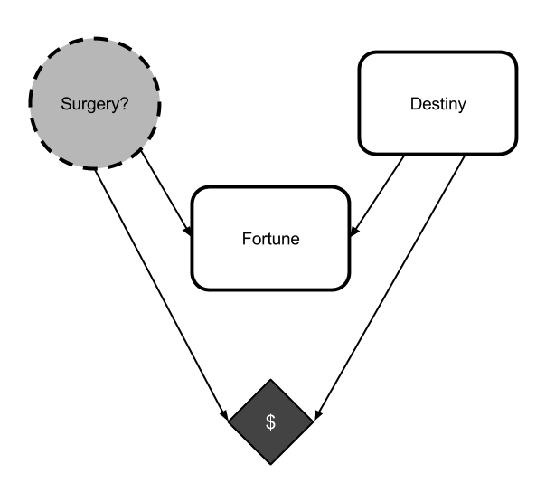
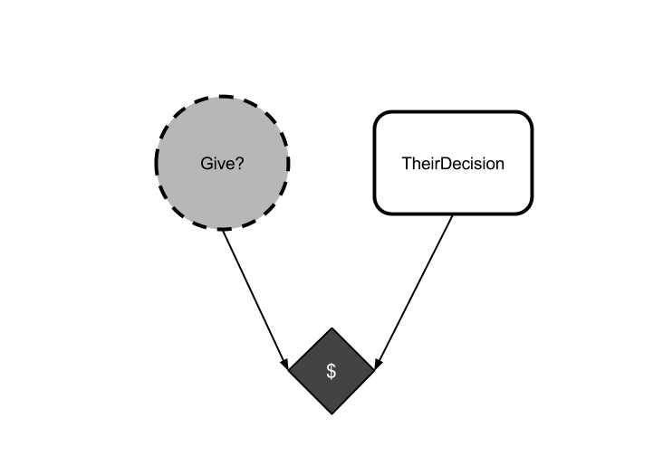
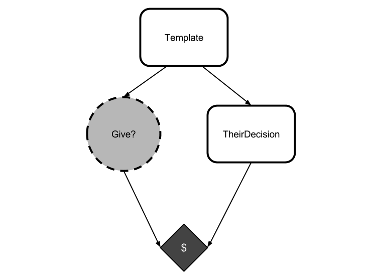
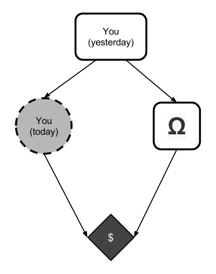
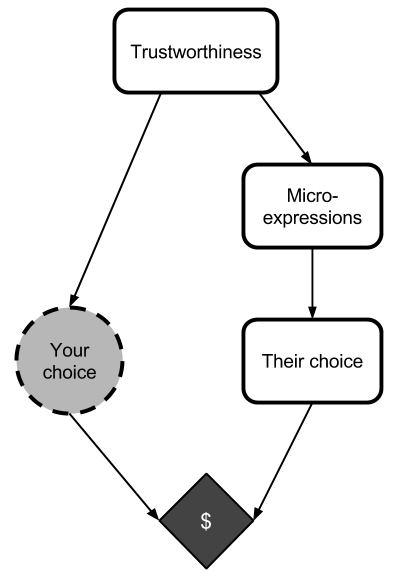
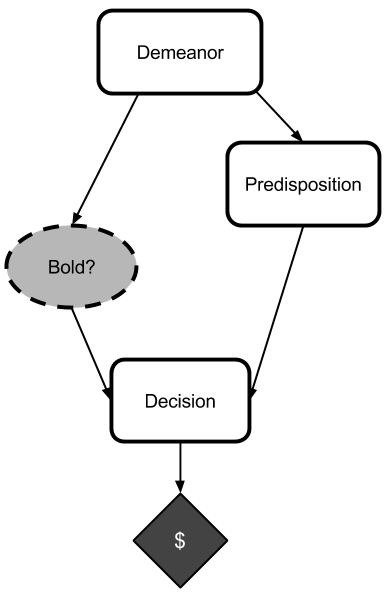
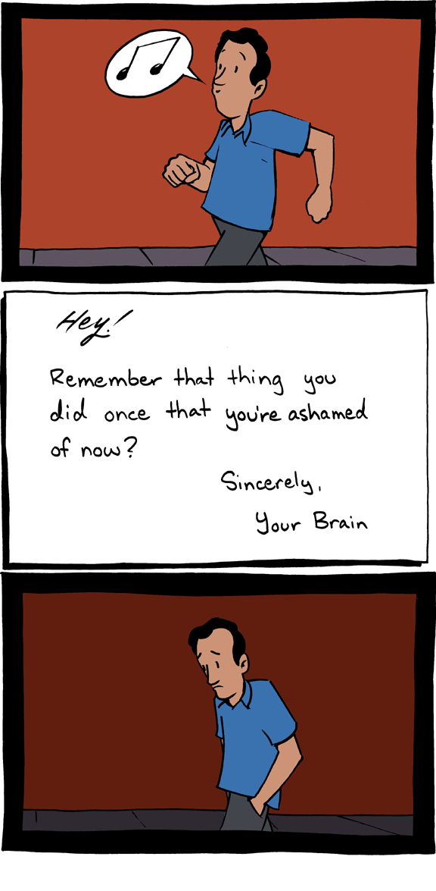
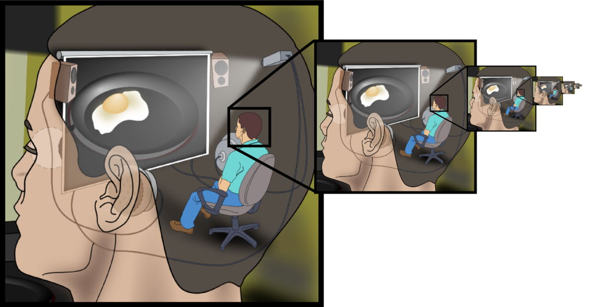
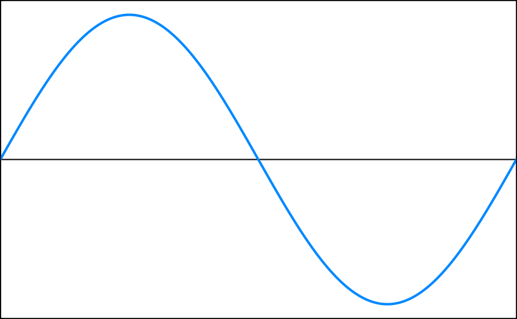
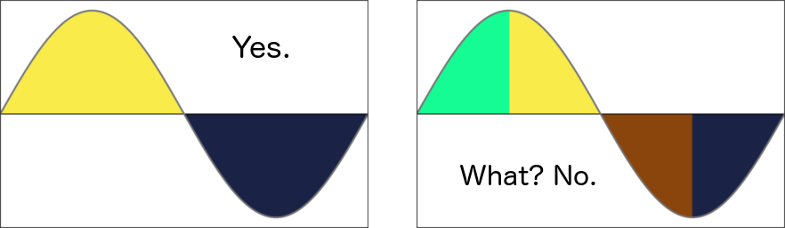

Table of Contents
On learning difficult things
The mechanics of my recent productivity
Habitual Productivity
Deregulating Distraction, Moving Towards the Goal, and Level Hopping
Dark Arts of Rationality
On saving the world
Minding our way to the heavens
Anticipating disaster
Causal decision theory is unsatisfactory
An introduction to Newcomblike problems
Calibration tools & perverse incentives
Newcomblike problems are the norm
Respect for large numbers
Randometer
Mental overrides
Sleeping well
Maintaining motivation in difficult times
Transmission
This is a Dawn [Solstice 2014]
Enjoying the feeling of agency
Enjoying agency & learned blankness
Steering towards forbidden conversations
Enjoying the context change
Staring into regrets
Moving towards the hard parts
A Torch in Darkness
Desire is the direction, rationality is the magnitude
What sort of thing a brain is
Ephemeral correspondance
The brain/mind distinction
The Way of the Rationalist
Interlude: Q&A on the EA forum
Altruistic motivations
Reflections [Solstice 2015]
There are only two seasons
You're allowed to be inconsistent
Conviction without self-deception
Deliberate Once
Dive in
Assuming Positive Intent
How We Will Be Measured (abridged)On learning difficult things
[Note: backported from LessWrong↗︎︎]
I have been autodidacting quite a bit lately. You may have seen my reviews↗︎︎ of books on the MIRI course list↗︎︎. I've been going for about ten weeks now. This post contains my notes about the experience thus far.
Much of this may seem obvious, and would have seemed obvious if somebody had told me in advance. But nobody told me in advance. As such, this is a collection of things that were somewhat surprising at the time.
Part of the reason I'm posting this is because I don't know a lot of autodidacts, and I'm not sure how normal any of my experiences are. (Though on average, I'd guess they're about average.) As always, keep in mind that I am only one person and that your mileage may vary.
Pair up
When I began my quest for more knowledge, I figured that in this modern era, a well-written textbook and an account on math.stackexchange↗︎︎ would be enough to get me through anything. And I was right… sort of.
But not really.
The problem is, most of the time that I get stuck, I get stuck on something incredibly stupid. I've either misread something somewhere or misremembered a concept from earlier in the book. Usually, someone looking over my shoulder could correct me in ten seconds with three words.
"Dude. Disjunction. Dis_junction._"
These are the things that eat my days.
In principle, places like stackexchange can get me unstuck, but they're an awkward tool for the job. First of all, my stupid mistakes are heavily contextualized. A full context dump is necessary before I can even ask my question, and this takes time. Furthermore, I feel dumb asking stupid questions on stackexchange-type sites. My questions are usually things that I can figure out with a close re-read (except, I'm not sure which part needs a re-read). I usually opt for a close re-read of everything rather than asking for help. This is even more time consuming.
The infuriating thing is that answering these questions usually doesn't require someone who already knows the answers: it just requires someone who didn't make exactly the same mistakes as me. I lose hours on little mistakes that could have been fixed within seconds if I was doing this with someone else.
That's why my number one piece of advice for other people attempting to learn on their own is do it with a friend. They don't need to be more knowledgeable than you to answer most of the questions that come up. They just need to make different misunderstandings, and you'll be able to correct each other as you go along.
The thing I miss most about college is tight feedback loops while learning. When autodidacting, the feedback loop can be long.
I still haven't managed to follow my own advice here. I'm writing this advice in part because it should motivate me to actually pair up. Unfortunately, there is nobody in my immediate circle who has the time or patience to read along with me, but there are a number of resources I have not yet explored (the LessWrong study hall, for example, or soliciting to actual mathematicians). It's on my list of things to do.
Read, reread, rereread
Reading Model Theory was one of the hardest things I've done. Not necessarily because the content was hard, but because it was the first time I actually learned something that was way outside my comfort zone.
The short version is that Basic Category Theory and Naïve Set Theory left me somewhat overconfident, and that I should have read a formal logic textbook before diving in. I had basic familiarity with logic, but no practice. Turns out practice is important.
Anyway, it's not like Model Theory was impossible just because I skipped my logic exercises. It was just hard. There are a number of little misconceptions you have when you're familiar with something but you've never applied it, and I found myself having to clean those out just to understand what Model Theory was trying to say to me.
In retrospect, this was an efficient way to strengthen my understanding of mathematical logic and learn Model Theory at the same time. (I've moved on to a logic textbook, and it's been a cakewalk.) That said, I wouldn't wish the experience on others.
In the process, I learned how to learn things that are way outside my comfort zone. In the past, all the stuff I've learned has been either easy, or an extension of things that I was already interested in and experienced with. Reading Model Theory was the first time in my life where I read a chapter of a textbook and it made absolutely no sense. In fact, it took about three passes per chapter before they made sense.
- The first pass was barely sufficient to understand all the words and symbols. I constantly had to go research a topic. I followed proofs one step at a time, able to verify the validity of each step but not really understand what was going on. I came out the other end believing the results, but not knowing them.
- Another pass was required to figure out what the book was actually trying to say to me. Once all the words made sense and I was comfortable with their usage, the second pass allowed me to see what the theorems and proofs were actually saying. This was nice, but it still wasn't sufficient: I understood the theorems, but they seemed like a random walk through theorem-space. I couldn't yet understand why anyone would say those particular things on purpose.
- The third pass was necessary to understand the greater theory. I've never been particularly good at memorizing things, and it's not sufficient for me to believe and memorize a theorem. If it's going to stick, I have to understand why it's important. I have to understand why this theorem in particular is being stated, rather than another. I have to understand the problem that's being solved. A third pass was necessary to figure out the context in which the text made sense.
After a third pass of any given chapter, the next chapter didn't seem quite so random. When the upcoming content started feeling like a natural progression instead of a random walk, I knew I was making progress.
I note this because this is the first time that I had to read a math text more than once to understand what was going on. I'm not talking about individual sentences or paragraphs, I'm talking about finishing a chapter, feeling like "wat", and then starting the whole chapter over. Twice.
I'm not sure if I'm being naïve (for never having needed to do this before) or slow (for having to do this for Model Theory), but I did not anticipate requiring three passes. Mostly, I didn't anticipate gaining as much as I did from a re-read; I would have guessed that something opaque on the first pass would remain opaque on a second pass.
This, I'm pretty sure, was naïvety.
So take note: if you stumble upon something that feels very hard, it might be more useful than anticipated to re-read it.
Cognitive exchange rates
When reading Model Theory, I was only able to convert 30-50% of my allotted "study time" into actual study.
This is somewhat surprising, as I had no such troubles with Basic Category Theory or Naïve Set Theory.
(I often have the opposite problem when writing code; this is probably due to the different reward structure.)
I was somewhat frustrated with my inability to study as much as I would have liked. My usual time-into-studying conversion rate is much higher (I'd guess 80%ish, though I haven't been measuring).
I'm not sure what factor made it harder for me to study model theory. I don't think it was the difficulty directly, as I often tend to work harder in the face of a challenge. I'd guess that it was either the slower rate of rewards (caused by a slower pace of learning) or actual cognitive exhaustion.
In the vein of cognitive exhaustion, there were a few times while reading Model Theory where I seem to have become cognitively exhausted before becoming physically exhausted. This was a first for me. I'm not referring to those times when you've done a lot of mental work and you shy away from doing anything difficult, that's happened to me plenty. Rather, in this case, I felt fully awake and ready to keep reading. And I did keep reading. It just… didn't work. I'd have trouble following simple proofs. I'd fail at parsing sentences that were quite clear after resting.
I'm still not sure what to make of this, and I don't have sufficient data to draw conclusions. However, it seems like there are mental states where my I feel awake and able to continue, but my mind is just not capable of doing the heavy lifting.
Again, the fact that I'm only just realizing this now is probably naïvety, but it's something to remember before getting frustrated with yourself.
Explain it to someone
As I've said before, one of the best ways to learn something is to do the problem sets. For Model Theory, though, there were times when I finished reading through a chapter and was not capable of doing the problems.
Re-reading helped, as mentioned above. Another thing that helped was explaining the concepts.
I explained model theory pretty extensively to a text file on my computer. I sketched the proofs in my own words and stated their significance. I explained the syntax being used. I tried to motivate each idea. (The notes are still lying around somewhere; I haven't posted them because they're pretty much a derivative work at this point.)
I found that this went a long way towards helping me track down places where I'd thought I learned something, but actually hadn't. If you're having trouble, go explain the concept to somebody (or to a text file). This can bridge the gap between "I read it" and "I can do the problems" quite well. For me, this technique often took problems from "unapproachable" to "easy" in one fell swoop.
Don't book yourself solid
I'm pretty good at avoiding stress. I have the (apparently rare) ability to drop all work-related concerns at the door when I leave. I don't even know how to get stressed by bad luck, especially if I made good choices given the information I had at the time. I get normally tense in stressful situations with time constraints, but I'm adept at avoiding the permastress that I've seen plague friends and family — unless I've booked myself solid.
I've had a packed schedule these past few weeks. I try to move the needle on at least two projects a day (more on weekends). Even if it's entirely reasonable to fit all these things into my schedule, I have not yet found a way to avoid the stress.
Even when I know that, if I push myself, I can read this much and write that much and code this feature all in one day, I haven't found a good way to push myself without pressure-stress.
I'm still hoping that I'll learn how to move quickly without stress as I learn my capabilities, but I'm not sure I've been adequately accounting for the cost of stress↗︎︎.
It's worth remembering that doing less than you're capable of _on purpose _might be a good strategy for maximizing long-term output.
There you go. Those are my notes gathered from trying to learn lots of things very quickly (and trying to learn one hard thing in particular). Comments are encouraged; I am by no means an expert.
The mechanics of my recent productivity
[Note: backported from LessWrong↗︎︎]
A decade ago, I decided to save the world. I was fourteen, and the world certainly wasn't going to save itself.
I fumbled around for nine years; it's surprising how long one can fumble around. I somehow managed to miss the whole idea of existential risk and the whole concept of an intelligence explosion. I had plenty of other ideas in my head, and while I spent a lot of time honing them, I wasn't particularly looking for new ones.
A year ago, I finally read the LessWrong sequences. My road here was roundabout, almost comical. It took me a while to come to terms with the implications of what I'd read.
Five months ago, after resolving a few internal crises, I started donating to MIRI and studying math.
Three weeks ago, I attended the December MIRI workshop on logic, probability, and reflection. I was invited to visit for the first two days and stay longer if things went well. They did: I was able to make some meaningful contributions.
On Saturday I was invited to become a MIRI research associate.
[Edit to add: about a month later, I became a full-time MIRI research fellow, and fourteen months after that, I became the executive director of MIRI.]
It's been an exciting year, to say the least.
To commemorate the occasion — and because a few people have expressed interest in my efforts — I'll be writing a series of posts about my experience, about what I did and how I did it. This is the first post in the series.
First and foremost, know that I am not done with my aggressive autodidacting. I have a long way to go yet before I'm anywhere near as productive as others who do research with MIRI. I find myself at a checkpoint of sorts, collecting my thoughts in the wake of my first workshop, but next week I will be back to business.
One goal of this post is to give you a feel for how much effort is required to become good at MIRI-relevant mathematics in a short time, and perhaps inspire others to follow my path. It was difficult, but not as difficult as you might think.
Another goal is to provide data for fellow autodidacts. At the least I can provide you with an anchor point, a single datum about how much effort is required to learn at this pace. As always, remember that I am only one person and that what worked for me may not work for you.
In order to understand what I achieved it's important to know where I started from. Thus, allow me to briefly discuss my relevant prior experience.
Background
I was born in 1989. I have bachelor's degrees of science in both computer science and economics. I started programming TI-83 calculators in late 2002. I've been programming professionally since 2008. I currently work for Google and live in Seattle.
In high school I had a knack for math. I was placed two years ahead of my classmates. I aced some AP tests, I won some regional math competitions, nothing much came of it. I explicitly decided not to pursue mathematics: I reasoned that in order to save the world I would need charisma, knowledge of how the world economy works, and a reliable source of cash. This (and my love of programming) drove my choice of majors.
During college I soaked up computer science like a sponge. (Economics, too, but that's not as relevant here.) I came out of college with a strong understanding of the foundations of computing: algorithms, data structures, discrete math, etcetera. I cultivated a love for information theory. Outside of the computer science department I took two math classes: multivariable calculus and real analysis.
I was careful not to let schooling get in the way of my education. On my own time I learned Haskell in 2008 and started flirting with type theory and category theory. I read Gödel, Escher, Bach early in 2011.
This should paint a rough picture of my background: I never explicitly studied mathematical logic, but my interests never strayed too far from it. While I didn't have much formal training in this particular subject area, I certainly wasn't starting from a blank slate.
Accomplishments
In broad strokes, I'm writing this because I was able to learn a lot very quickly. In the space of eighteen weeks I went from being a professional programmer to helping Benja discover Fallenstein's Monster↗︎︎, a result concerning tiling agents (in the field of mathematical logic).
I studied math at a fervent pace from August 11th to December 12th and gained enough knowledge to contribute at a MIRI workshop. In that timeframe I read seven textbooks, five of which I finished:
- Heuristics and Biases↗︎︎
- Cognitive Science↗︎︎
- Basic Category Theory for Computer Scientists↗︎︎
- Naïve Set Theory↗︎︎
- Model↗︎︎ Theory↗︎︎ (first half)
- Computability and Logic↗︎︎
- The Logic of Provability (first half, unreviewed)
In retrospect, the first two were not particularly relevant to MIRI's current research. Regardless, Heuristics and Biases was quite useful on a personal level.
I also studied a number of MIRI research papers, two of which I summarized:
I made use of a number of other minor resources as well, mostly papers found via web search. I successfully signaled my competence and my drive to the right people. While this played a part in my success, it is not the focus of this post.
I estimate my total study time to be slightly less than 500 hours. I achieved high retention and validated my understanding against other participants of the December workshop. I did this without seriously impacting my job or my social life. I retained enough spare time to participate in NaNoWriMo↗︎︎ during November.
In sum, I achieved a high level of productivity for an extended period. In the remainder of this post I'll discuss the mechanics of how I did this: my study schedule, my study techniques, and so on. The psychological aspects — where I found my drive, how I avoid akrasia — will be covered in later posts.
Schedule
I estimate I studied 30-40 hours per week except in November, when I studied 5-15 hours per week. On average, I studied six days a week.
On the normal weekday I studied for an hour and a half in the morning, a half hour during lunch, and three to four hours in the evening. On the average weekend day I studied 8 to 12 hours on and off throughout the day.
Believe it or not, I didn't have to alter my schedule much to achieve this pace. I've been following roughly the same schedule for a number of years: I aim to spend one evening per workweek and one day per weekend on social endeavors and the rest of my time toying with something interesting. This is a loose target, I don't sweat deviations.
There were some changes to my routines, but they were minimal:
- I have many side projects, most were dropped as studying took precedence.
- The number of weeknights I took off per week fell from a little more than one to a little less than one.
- Before this endeavor I traveled for leisure about once every two months. In the past five months I traveled for leisure once.
While my studying did not affect my schedule much, it definitely affected my pacing. Don't get me wrong; this sprint was not easy. I suspended many other projects and drastically increased my intensity and my pace. I spent roughly the same amount of time per day studying as I used to spend on side projects, but there is a vast difference between spending three hours casually tinkering on open source code and spending three hours learning logic as fast as possible.
The point here is that aggressive autodidacting certainly takes quite a bit of time and effort, but it need not be all consuming: you can do this sort of thing and maintain a social life.
Study Technique
My methods were simple: read textbooks, do exercises, rephrase and write down the hard parts.
I had a number of techniques for handling difficult exercises. First, I'd put them aside and come back to them later. If that failed, I'd restate the problem (and all relevant material) in my own words. If this didn't work, it at least helped me identify the point of confusion, which set me up for a question math.stackexchange.com.
I wasn't above skipping exercises when I was convinced that the exercise was tedious and that I know the underlying material.
This sounds cleaner than it was: I made a lot of stupid mistakes and experienced my fair share of frustration. For more details on my study methods refer to On Learning Difficult Things↗︎︎, a post I wrote while in the midst of my struggles.
Upon finishing a book, I would immediately start the next one. Concurrently, I would start writing a review of the book I'd finished. I generally wrote the first draft of my book reviews on the Sunday after completing the book, alternating between studying the new and summarizing the old. On subsequent weekdays I'd edit in the morning and study in the evening until I was ready to post my review.
It's worth noting that summarizing content, especially the research papers, went a long way towards solidifying my knowledge and ensuring that I wasn't glossing over anything.
Impact on Social Life
The impact on my social life was minimal. I decreased contact with some periphery friend groups but maintained healthy relationships within my core circles. That I was able to do this is due in part to my circumstances:
- I live with two close friends. This meant that social contact was never out of reach. Even when spending an entire day sequestered in my room pouring over a textbook I was able to maintain a small amount of social interaction. If ever I had a spare hour and a thirst for company, I found it readily available.
- My primary partner was, up until early 2014, going to school full time while holding down a full time job. Thus, her schedule was more restrictive than my own and we had been working around it for some time. Our relationship was not further constrained by my efforts.
- My core friend groups knew and respected what I was doing. I was more tense and exhausted than usual, but I had warned my friends to expect this and no friendships suffered as a result.
Impact on Work Life
The additional cognitive load did have an impact on my day job. I had less focus and willpower to dedicate to work. Fortunately, I was exceeding expectations before this endeavor. During this sprint, with my cognitive reserves significantly depleted, I had to settle for merely meeting expectations. My performance at work was not poor, by any means: rather, it fell from "exemplary" to "good".
I'd rather not settle for merely good performance at work for any extended period of time. Going forward, I'll be reducing my pace somewhat, in large part to ensure that I can dedicate appropriate resources to my day job.
Mental Health
It's not like I was working from dawn till dusk every day. There was ample time for other activities: I had a few hours of downtime on the average day to read books or surf the web. I participated in a biweekly Pathfinder↗︎︎ campaign and spent the occasional Sunday playing Twilight Imperium↗︎︎. In September I went camping in the Olympic mountain range. I spent four days in October visiting friends in Cape Cod. I spent a day in December hiking to some hot springs. I entertained guests, went to birthday parties, and so on. There were ample opportunities to get away from math textbooks.
Most important of all, I had friends I could call on when I needed a mental health day. I could rely on them to find time where we could just sit around, play with LEGO bricks, and shoot the breeze. This went a long way towards keeping me sane.
All that said, this stint was rough. I experienced far more stress than my norm. I lost a little weight and twice caught myself grinding my teeth in my sleep (a new experience). There were days that I became mentally exhausted, growing obstinate and stubborn as if sleep- or food-deprived. This tended to happen immediately before planned breaks in the routine, as if my mind was rebelling when it thought it could get away with it.
The stress was manageable, but built up over time. It's hard to tell whether the stress was cumulative or whether the increase was due to circumstance. Doing NaNoWriMo in November while continuing studying didn't particularly help matters. The weeks leading up to the workshop were particularly stressful due to a lack of information: I worried that I would not know nearly enough to be useful, that I would make a fool of myself, and so on. So while the stress surely mounted as time wore on, I can't tell how much of that was cumulative versus circumstantial.
I tentatively believe that someone could sustain my pace for significantly longer than I did, so long as they were willing to live with the strain. I don't plan to test this myself: I'll be slowing down both to improve performance at work and to reduce my general stress levels. Five months of fervent studying is no walk in the park.
Advice
So you want to follow in my footsteps? Awesome. I commend your enthusiasm. My next post will delve into my mindset and a few of the quirks of my behavior that helped me be productive. For now, I will leave you with this advice:
- There is no magic to it. If you study the right material, do the exercises, and write what you've learned in your own words, then you can indeed learn MIRI-relevant math in a reasonable amount of time.
- Learning fast does not need to dominate your life. There can be time for social activities and even significant side projects. You will have to work really hard, but that work does not have to consume your life.
- If you're going to do something like this, let people know what you're doing. This is much easier if you have people you can turn to for support who don't mind you being extra snappy, people who can drag you away for a day every week or two. Also, stating your goals publicly helps to stop you from giving up.
The difficult part is making a commitment and sticking to it. Akrasia is a formidable enemy, here. If you can avoid it, the actual autodidacting is not overly difficult.
As for specific advice, if your background is similar to mine then I recommend reading Naïve Set Theory, Computability and Logic, and the first two chapters of Model Theory in that order, these will get you off to a good start. Feel free to message me if you get stuck or if you want more recommendations.
Following posts will cover the other sides of my experience: how I got interested in this field, where I draw my motivation from, and the dark arts that I use to maintain productivity. In the meantime, questions are welcome.
Habitual Productivity
[Note: backported from LessWrong↗︎︎]
I was able to maintain high productivity for extended periods of time and achieve some difficult goals. In this and the following posts I will discuss some personality quirks and techniques that helped me do this. This post is fairly self-expository. I claim no originality, this is simply an account of how I operate.
Secret number one: Productivity is a habit of mine. As I mentioned in the previous post, I've been following a similar schedule for years: two days doing social things, five days doing something constructive. Before I turned my efforts towards FAI research, this mainly consistent of programming, writing, and self-education.
This habit was not sufficient to get the high productivity I attained in the last few months, but it was definitely necessary.
I understand that this is not helpful advice: "I'm habitually productive" just passes the buck. "Ah", you ask, "but how did you turn productivity into a habit?" For that, I have an ace up my sleeve:
I deplore fun.
Ok, not really. However, I do have a strong aversion to activities that I find unproductive. This aversion is partly innate and partly developed. It first became explicit at the age of nine or ten, when I read The Phantom Tollbooth:
"KILLING TIME!" roared the dog—so furiously that his alarm went off. "It's bad enough wasting time without killing it." And he shuddered at the thought.
This quote stuck with me. Time is scarce, and I certainly didn't want to kill any.
I developed an explicit distaste for boredom, and went out of my way to avoid it. I kept books near me at all times. I invented stories and thought up new plots when drifting off to sleep. I invented mental puzzles to keep me entertained during class, including a stint in my teens where I worked out the base 12 multiplication tables. Later, I put spare mental cycles towards considering my code, probing edge cases or considering alternative designs (a practice that is no doubt familiar to all programmers).
This distaste broadened as I aged. I grew to realize that I didn't just want to be doing things, I wanted to be doing useful things. My disdain started spreading towards other activities, ones that didn't forward my long-term goals. The memories are hazy, and I'm not sure whether this caused or was caused by my naïve resolution to save the world (or a whole tangle of other factors), but I know the two were linked.
Before long, I began to view escapism as a guilty pleasure: fun and addictive, but unsatisfying. Things like hiking and going to parties became almost a chore: I superficially enjoyed them, sure, but I yearned to be elsewhere, doing something permanent. Even reading fiction took on a pang of guilt. I valued things that moved me forward, that honed my skills or moved me closer to my terminal goals. I wanted to be building things, improving things.
This is my first secret weapon: I lost the ability to be satisfied by unproductive activity.
This was not particularly pleasant.
As I got older, I struggled to balance social activities that were supposed to be fun with all of the things that I wanted to learn and build. All forms of entertainment were weighed against their opportunity cost. This wasn't an elegant phase of my life: I was still a teenager, and I yearned for social validation, strong friendships, and adventures just as much as my peers. Trouble was, I was caught in a catch 22: when I squirreled away in my room being "productive" I felt like I was missing out, and when I went outside to have "adventures" I only wanted to be elsewhere. I vacillated wildly for a few years before coming to terms with myself.
These days, I aim to spend about two evenings a week (one on weekdays, one on weekends) doing something that's traditionally fun. I spend the rest of my time doing things that sate my neverending desire to march towards my goals.
It's interesting to note that, in the end, there wasn't really a compromise. The productivity side just flat-out won: I eventually realized that human interaction is necessary for mental health and that a solid social network is invaluable. I don't mean to imply that I engage in social interaction because I've calculated that it's necessary: I really do enjoy social interaction, and I really want to be able to enjoy it without guilt. Rather, it's more like I've found an excuse that allows me to both enjoy myself and sate the thirst. That said, it's still difficult for me to disengage sometimes.
This is also not the most helpful advice, I realize: I'm good at being productive in part because I'm bad at being satisfied unless my current task forwards my active goals. This isn't exactly something you can practice.
Unless you're into mind hacking, I suppose. (Note: At this point in the post, set your "humor" dials to "dry".)
When I was quite young, one of the guests at our house refused to eat processed food. I remember that I offered her some fritos and she refused. I was fairly astonished, and young enough to be socially inept. I asked, incredulous, how someone could not like fritos. To my surprise, she didn't brush me off or feed me banal lines about how different people have different tastes. She gave me the answer of someone who had recently stopped liking fritos through an act of will. Her answer went something like this: "Just start noticing how greasy they are, and how the grease gets all over your fingers and coats the inside of the bag. Notice that you don't want to eat things soaked in that much grease. Become repulsed by it, and then you won't like them either."
Now, I was a stubborn and contrary child, so her ploy failed. But to this day, I still notice the grease. This woman's technique stuck with me. She picked out a very specific property of a thing she wanted to stop enjoying and convinced herself that it repulsed her.
If I were trying to start hating fun (and I remind you that I'm not trying, because I already do, and that you shouldn't try, because it's no fun) then this is the route I would recommend: Recognize those little discomforts that underlie your escapism, latch on to them, and blow them completely out of proportion. (Disclaimer: I am not a mindwizard; I've no doubt there are better ways to change your affections if you're in to mindhacking.)
Note that such mindhacking is a Dark Art which you should not pursue. Side effects may include:
- Experiencing guilt when you should be having a grand old time.
- Attempting to complete hikes as fast as possible so you can get back to what you were working on.
- A propensity to get more tense when you're supposed to be relaxing.
- A tendency to bring books to live concerts so that you can multitask.
Furthermore, I imagine that this can backfire reaaaly hard: if you manage to develop a strong revulsion for unproductive activities but still can't force yourself to stop browsing reddit (or whatever your vice) then you run a big risk of hitting a willpower-draining death spiral.
So I'm really not recommending that you try this mindhack. But if you already have spikes of guilt after bouts of escapism, or if you house an arrogant disdain for wasting your time on TV shows, here are a few mantras you can latch on to to help yourself develop a solid hatred of fun (I warn you that these are calibrated for a 14 year old mind and may be somewhat stale):
- When skiing, partying, or generally having a good time, try remembering that this is exactly the type of thing people should have an opportunity to do after we stop everyone from dying.
- When doing something transient like watching TV or playing video games, reflect upon how it's not building any skills that are going to make the world a better place, nor really having a lasting impact on the world.
- Notice that if the world is to be saved then it really does need to be you who saves it, because everybody else is busy skiing, partying, reading fantasy, or dying in third world countries.
It also helps if you're extraordinarily arrogant and you house a deep-seated belief in civilizational inadequacy.
(You may now disengage your humor shielding.)
I strongly recommend finding a different and preferably healthier route to habitual productivity. The point of this exposition is that for me, a quirk of my psychology led me to a schedule where I spend my days doing things that lead towards my goals.
My distaste for other activities is not the thing that is driving me, per se: it has merely pushed me towards a certain lifestyle, it has helped me develop a certain habit. That habit is the foundation for my recent achievements.
If you can structure your life such that productive things are the things that you do by default, the things that you do in your free time when you have nothing else on your plate, then you will be in good shape. When "do something that forwards your goals" is the fallback plan then it becomes much easier to scale your efforts up.
The way that I built such structure into my own life was pretty personalized and likely unhealthy, but I'm quite content with the end result. So that's my advice for the day: if you can, try to make your default actions useful. Find a way to make productivity habitual.
When forming habits, repetition is very important. If you're trying to be highly productive, consider starting by being a little productive with high regularity_._ Humans are very habitual creatures, and establishing a habit of completing easier tasks may pay off in the long run.
Even if you start with the easier tasks, though, you're going to need a good chunk of motivation to successfully form a habit of doing things that require effort. In these waters swims Akrasia, a most ancient enemy. I meant to delve more into the sources of my motivation and some tricks I use to avoid akrasia, but I've run out of time. Further posts will follow.
Deregulating Distraction, Moving Towards the Goal, and Level Hopping
[Note: backported from LessWrong↗︎︎]
This is the third post in a series discussing my recent bout of productivity. Within, I discuss two techniques I use to avoid akrasia and one technique I use to be especially productive.
Deregulating Distraction
I like to pretend that I have higher-than-normal willpower, because my ability to Get Things Done seems to be somewhat above average. In fact, this is not the case. I'm not good at fighting akrasia. I merely have a knack for avoiding it.
When I was young, my parents were very good at convincing me to manage my money. They gave me an allowance, perhaps a dollar a week. When we would go to the store, I'd get excited about some trite toy and ask my parents whether I could buy it.
Their answers were similar. My mother would crouch down, put a hand on my shoulder, and say "Of course you can. But before you do, think carefully about how much you will enjoy this after you've bought it, and what other things you would be able to buy if instead you saved up."
My father was a bit more direct. He'd just shrug and say "It's your money", with the barest hint of derision.
I rarely spent my allowance.
I now use a similar technique when dealing with distractions.
(It's worth noting that it's always been very easy to put me into far mode, perhaps in part because I decided at a very young age that I wasn't going to die.)
As Kaj Sotala↗︎︎ and a few others noted, assigning guilt to non-productive tasks is not especially healthy. Nor is it, in my experience, sustainable. In a few different cases, I experienced scenarios where I wanted to do something but couldn't will myself to do it. I suffered ego depletion and hit a vicious cycle of unproductivity and depression. I never fell completely into the self-hate death spiral, but I flirted around at the edges. It became clear that I needed a new strategy.
To break the cycle, I decided to stop fighting myself.
The world is full of distractions, and I have plenty of vices. I am just as susceptible as anyone to binging on TV shows or video games or book series. Instead of trying (and often failing) to stop myself from indulging, I decided to allow myself to indulge whenever I really wanted to.
"It's your time", I told myself.
This changed the game entirely. I no longer willed myself to avoid temptation: I weighed temptations alongside my other options, took their pros and cons into account, and made an informed decision. Did I need to distract myself? Sometimes, the answer was yes.
Knowing that I could no longer trust myself to bail me out if I got addicted to new media, I took special care in removing as many distractions as I could from my environment. Because I'd resolved not to spend willpower to cancel addictions, I became much more cautious at the point of entry. These days, I ignore recommendations about new TV shows and books, preferring not even to learn the premises, thus dodging the temptation entirely.
By allowing distractions a place in my mental calculus I allowed myself to choose between them with more care: I am able to watch movies instead of TV shows, to read standalone books instead of entire series.
I know full well that my resolution against spending willpower against myself means that once I get addicted to something, it has to run its full course before I can be productive again. This is a nuclear option: because I know that I won't stop, I am very leery of lengthy media. I avoid open-ended addictions (ongoing online games, chemical addictions, etc.) like the plague.
I refer to this strategy as "playing chicken against myself": because I know that I'll let long addictions run their course, I seldom have to.
From another perspective, you could say that I deregulated a black market on distractions: By lifting the mental ban on entertainment, I was able to price it accurately and weigh the tradeoffs. If there is a new book I want to read, the answer is not an outright and unenforcible "No". Rather, it's "can we afford to be underproductive for the next few days?". And when the answer is negative, it's significantly easier for me to postpone gratification than to resist the temptation entirely. The end result is that I have much more control over when I indulge in escapism.
Finally, I've found that this feels a lot better than feeling guilty about being unproductive. It's a healthier state of mind, and it's led to a general increase in happiness.
Moving Towards the Goal
My teachers used to tell my parents that I have two modes of operation: I either put in the minimum possible effort or I blow expectations completely out of the water. They claimed I have no middle ground.
This isn't quite accurate. The truth is, I always put in the minimum effort. Anything else would be wasted motion. The discrepancy they observed was not due to some whim of passion, it was an artifact of how our incentives were misaligned.
In school I was incentivized to ace classes with minimal work. I was very good at obeying the letter of the law while blatantly flouting the spirit, and I had a knack for knowing exactly how far I could push my luck. My teachers had… polarized opinions of me, to say the least. I was an arrogant kid.
Yet when my schoolwork happened to align with some personal goal — mastering a new technique, figuring out new secrets of the universe — then I was relentless, shattering expectations with apparent ease. A number of my teachers took it upon themselves to press upon me just how much I could do if I actually applied myself. I didn't bother correcting them. If they weren't going to invent a grade higher than 'A', why should I waste my efforts in the classroom? I had better things to do.
Like I said, I was an arrogant kid.
This experience in school had two important repercussions. First, it taught me to seek out the gap between the intended rules and the actual rules. I developed a knack for it, and this has served me well in many walks of life. Noticing the space between what you meant and what you said is a fundamental skill for programmers. Math is a tool designed to narrow such gaps. Logical incompleteness theorems are statements about the gap between what logic can say and what mathematicians want to say.
Secondly, and more relevant to this post, school helped me make explicit the virtue of putting in the minimum possible effort. Authority figures parroted the value of hard work, but that's only half the story. You should always be putting forth the least amount of effort that it takes to achieve your goals. That's not to say that you should never do hard work: in many situations, the easiest way to achieve your goals is to do things right the first time. I'm not condoning shoddy work, either: if quality is part of your goal then you'd best do things correctly. If you're trying to signal competence, then by all means, put in extra effort. But you should never expend extra effort just for effort's sake.
This leads us to my second trick for avoiding akrasia: I am not Trying Really Hard. People who are Trying Really Hard give themselves rewards for progress or punishments for failure. They incentivize the behavior that they want to have. They keep on deciding to continue doing what they're doing, and they engage in valiant battle against akrasia. I don't do any of that.
Instead, I simply Move Towards the Goal.
I don't will myself to study. It is not a chore, it is not something I force myself to do. That's not to say I enjoy studying, per se: it's hard work, and the reward structure is pathetic compared to programming. If I had to force or convince myself to study lots of math continously, I don't think I'd get very far.
That's not how I operate. I don't Try Really Hard. I simply Move Towards the Goal.
This is where the previous post ties in. I've mostly eliminated the guilt I feel while unproductive, but I've maintained two very important things from that era of my life:
- In my head, long-term satisfaction is linked to productivity.
- I have maintained habitual productivity for years.
Between these two points, I know that once I've settled on a goal, I'm going to more towards it.
This is, internally, an immutable fact, made so both by habit and by crude Pavlovian training. None of this is explicit, mind you, it's just the nature of goals. I can change the goal and I can drop the goal, but I can't hold the goal and not pursue it.
I never decided to study really hard. You can "decide" not to watch the next episode of that TV show only to sternly berate yourself three episodes later. My decision to study hard was made on a lower level, it's been internalized. Acting on goals is the thing that System 1 does regardless of what System 2 "decides".
System 2 controls things by picking the goals. It was a long and arduous process to internalize my most recent set of goals, the ones that have driven me to study hard and become a research associate and so on. It took a few months and a bit of mindhacking, and that's a story for another day. But once the goal was chosen, marching towards it was out of my hands.
System 2 isn't in control of whether I move towards the goal. Instead, it spends its time doing something it's very good at: finding the most efficient path. Minimizing effort.
I don't actively force myself to study hard. Rather, the structure of the environment is such that the shortest path to the goal requires hard studying. I merely follow that path.
Moving Towards the Goal might look a lot like Trying Really Hard from the outside. Superficially, the two are similar. On the inside, though, they feel very different. I've Tried Really Hard before, and I'm not good at it. It requires exertion of willpower and results in depletion of ego.
When I'm Moving Towards the Goal, I don't worry about whether things will be done. I've outsourced that concern to habit. Instead, mental effort is spent looking for the shortest path, the easiest route. Difficult paths do not require additional willpower, because the internal narrative is not one of expending effort. If anything, a difficult path is worth extra points, because it means I'm pursuing admirable goals. Internally, I'm not Struggling Against Akrasia. I'm Finding an Efficient Route.
Don't get me wrong, studying math at high speed for five months was hard. However, I have built myself a headspace where hardness is not an obstacle to overcome but a feature of the terrain. I am going to march on regardless. System 2 doesn't have to spend effort convincing System 1 to move forward, because System 1 is going to move forward come hell or high water. Thus, System 2 spends its time making sure that the march is as easy as possible.
This leaves me free to try new techniques to achieve my goals more effectively, and that leads us to our final trick for the day.
Level Hopping
I started doing NaNoWriMo in 2011, and I noticed something interesting: a vast majority of winners barely made it to 50,000 words. The goal of NaNoWriMo is to write 50k words in a month, so I wasn't particularly surprised. However, from my interactions with others I found that a vast majority of these winners felt like they were pushing themselves to the limit, even though many of them were probably psychologically anchored below their actual limits. After all, in my experience, the hardest part of NaNoWriMo is writing every day: the most difficult part of being productive is switching contexts, once you get rolling it's not difficult to keep rolling.
It seemed clear that if the goal had been 60k, many of the same people would have eeked out a victory with similar margins and the same narrative of butting against their limits. The natural conclusion was that I can't trust myself to feel out my own limits.
This is when I decided to start hopping to higher levels of productivity. These days, I occasionally throw wrenches into my study plans when I think I'm growing complacent.
"Those set theory and category theory books were easy", I'll say, "Let's try skipping introductory logic and going straight to model theory↗︎︎".
Or, "All this studying is great, but I bet I could keep it up and also do a NaNoWriMo for 75k words".
Often, this fails spectacularly. Sometimes, I am at or near my limits, and skipping an intro logic textbook to dive straight into Model Theory is a really bad idea. Other times, I find out that I actually was just hovering around an anchor point, seduced by a narrative of linear improvement.
This is not an original idea, by any means. In fact, there's a relevant Bruce Lee quote:
There are no limits. There are plateaus, but you must not stay there, you must go beyond them. If it kills you, it kills you. A man must constantly exceed his level.
- Bruce Lee↗︎︎
My point, more broadly, is that this is the type of thing that occupies my mental narrative. I'm not wondering whether I will be able to convince myself to study each day. Instead, I'm gauging whether I'm reading the most effective material. I'm noticing that it won't be enough for me to just learn the material, I also have to signal that I've learned the material (and that I should start doing book reviews). I'm monitoring to see when I've grown complacent and looking for ways to keep me on my toes. This is process is doubly useful: It helps me sidestep akrasia and it also helps me become more effective.
These are my three Light Side tools:
- I've constructed an environment in which productivity is habitual. In the absence of distractions, I trust myself to get things done.
- I've lifted my mental ban on distractions, and trust myself to use them wisely.
- My mental narrative is one of expending minimal effort, not one of trying to succeed: instead of worrying about whether I can continue, I worry about how to perform better.
Most of these tricks are likely familiar: I do not claim originality; this is merely an account of the methods that I use, the things that work for me. Consider this to be evidence that these techniques work for people who share my personality (which I've tried to illustrate along the way).
You now have a broad sketch of how I maintain productivity, but it may seem somewhat unstable, difficult to maintain indefinitely. The next post will detail my Dark Side tactics: tricks I use to remain unrelenting and sustain my vigorous pace, but which may make rationalists uncomfortable.
After that, I'll tell the story of a kid who decided he would save the world for reasons completely unrelated to existential risk, and how he came to align himself with MIRI's mission. This will help you understand the source of my passion, and will conclude the series.
Dark Arts of Rationality
[Note: backported from LessWrong↗︎︎]
Today, we're going to talk about Dark rationalist techniques: productivity tools which seem incoherent, mad, and downright irrational. These techniques include:
- Willful Inconsistency
- Intentional Compartmentalization
- Modifying Terminal Goals
I expect many of you are already up in arms. It seems obvious that consistency is a virtue, that compartmentalization is a flaw, and that one should never modify their terminal goals.
I claim that these 'obvious' objections are incorrect, and that all three of these techniques can be instrumentally rational.
In this article, I'll promote the strategic cultivation of false beliefs and condone mindhacking on the values you hold most dear. Truly, these are Dark Arts. I aim to convince you that sometimes, the benefits are worth the price.
Changing your Terminal Goals
In many games there is no "absolutely optimal" strategy. Consider the Prisoner's Dilemma↗︎︎. The optimal strategy depends entirely upon the strategies of the other players. Entirely.
Intuitively, you may believe that there are some fixed "rational" strategies. Perhaps you think that even though complex behavior is dependent upon other players, there are still some constants, like "Never cooperate with DefectBot". DefectBot always defects against you, so you should never cooperate with it. Cooperating with DefectBot would be insane. Right?
Wrong. If you find yourself on a playing field where everyone else is a TrollBot↗︎︎ (players who cooperate with you if and only if you cooperate with DefectBot) then you should cooperate with DefectBots and defect against TrollBots.
Consider that. There are playing fields where you should cooperate with DefectBot, even though that looks completely insane from a naïve viewpoint._ _Optimality is not a feature of the strategy, it is a relationship between the strategy and the playing field.
Take this lesson to heart: in certain games, there are strange playing fields where the optimal move looks completely irrational.
I'm here to convince you that life is one of those games, and that you occupy a strange playing field right now.
Here's a toy example of a strange playing field, which illustrates the fact that even your terminal goals are not sacred:
Imagine that you are completely self-consistent and have a utility function. For the sake of the thought experiment, pretend that your terminal goals are distinct, exclusive, orthogonal, and clearly labeled. You value your goals being achieved, but you have no preferences about how they are achieved or what happens afterwards (unless the goal explicitly mentions the past/future, in which case achieving the goal puts limits on the past/future). You possess at least two terminal goals, one of which we will call A.
Omega↗︎︎ descends from on high and makes you an offer. Omega will cause your terminal goal A to become achieved over a certain span of time, without any expenditure of resources. As a price of taking the offer, you must switch out terminal goal A for terminal goal B. Omega guarantees that B is orthogonal to A and all your other terminal goals. Omega further guarantees that you will achieve B using less time and resources than you would have spent on A. Any other concerns you have are addressed via similar guarantees.
Clearly, you should take the offer. One of your terminal goals will be achieved, and while you'll be pursuing a new terminal goal that you (before the offer) don't care about, you'll come out ahead in terms of time and resources which can be spent achieving your other goals.
So the optimal move, in this scenario, is to change your terminal goals.
There are times when the optimal move of a rational agent is to hack its own terminal goals.
You may find this counter-intuitive. It helps to remember that "optimality" depends as much upon the playing field as upon the strategy.
Next, I claim that such scenarios not restricted to toy games where Omega messes with your head. Humans encounter similar situations on a day-to-day basis.
Humans often find themselves in a position where they should modify their terminal goals, and the reason is simple: our thoughts do not have direct control over our motivation.
Unfortunately for us, our "motivation circuits" can distinguish between terminal and instrumental goals. It is often easier to put in effort, experience inspiration, and work tirelessly when pursuing a terminal goal as opposed to an instrumental goal. It would be nice if this were not the case, but it's a fact of our hardware: we're going to do X more if we want to do X for its own sake as opposed to when we force X upon ourselves.
Consider, for example, a young woman who wants to be a rockstar. She wants the fame, the money, and the lifestyle: these are her "terminal goals". She lives in some strange world where rockstardom is wholly dependent upon merit (rather than social luck and network effects), and decides that in order to become a rockstar she has to produce really good music.
But here's the problem: She's a human. Her conscious decisions don't directly affect her motivation.
In her case, it turns out that she can make better music when "Make Good Music" is a terminal goal as opposed to an instrumental goal.
When "Make Good Music" is an instrumental goal, she schedules practice time on a sitar and grinds out the hours. But she doesn't really like it, so she cuts corners whenever akrasia comes knocking. She lacks inspiration and spends her spare hours dreaming of stardom. Her songs are shallow and trite.
When "Make Good Music" is a terminal goal, music pours forth, and she spends every spare hour playing her sitar: not because she knows that she "should" practice, but because you couldn't pry her sitar from her cold dead fingers. She's not "practicing", she's pouring out her soul, and no power in the 'verse can stop her. Her songs are emotional, deep, and moving.
It's obvious that she should adopt a new terminal goal.
Ideally, we would be just as motivated to carry out instrumental goals as we are to carry out terminal goals. In reality, this is not the case. As a human, your motivation system does discriminate between the goals that you feel obligated to achieve and the goals that you pursue as ends unto themselves.
As such, it is sometimes in your best interest to modify your terminal goals.
Mind the terminology, here. When I speak of "terminal goals" I mean actions that feel like ends unto themselves. I am speaking of the stuff you wish you were doing when you're doing boring stuff, the things you do in your free time just because they are fun, the actions you don't need to justify.
This seems like the obvious meaning of "terminal goals" to me, but some of you may think of "terminal goals" more akin to self-endorsed morally sound end-values in some consistent utility function. I'm not talking about those. I'm not even convinced I have any.
Both types of "terminal goal" are susceptible to strange playing fields in which the optimal move is to change your goals, but it is only the former type of goal — the actions that are simply fun, that need no justification — which I'm suggesting you tweak for instrumental reasons.
I've largely refrained from goal-hacking, personally. I bring it up for a few reasons:
- It's the easiest Dark Side technique to justify. It helps break people out of the mindset where they think optimal actions are the ones that look rational in a vacuum. Remember, optimality is a feature of the playing field. Sometimes cooperating with DefectBot is the best strategy!
- Goal hacking segues nicely into the other Dark Side techniques which I use frequently, as you will see shortly.
- I have met many people who would benefit from a solid bout of goal-hacking.
I've crossed paths with many a confused person who (without any explicit thought on their part) had really silly terminal goals. We've all met people who are acting as if "Acquire Money" is a terminal goal, never noticing that money is almost entirely instrumental in nature. When you ask them "but what would you do if money was no issue and you had a lot of time", all you get is a blank stare.
Even the LessWrong Wiki entry↗︎︎ on terminal values describes a college student for which university is instrumental, and getting a job is terminal. This seems like a clear-cut case of a Lost Purpose↗︎︎: a job seems clearly instrumental. And yet, we've all met people who act as if "Have a Job" is a terminal value, and who then seem aimless and undirected after finding employment.
These people could use some goal hacking. You can argue that Acquire Money and Have a Job aren't "really" terminal goals, to which I counter that many people don't know their ass from their elbow when it comes to their own goals. Goal hacking is an important part of becoming a rationalist and/or improving mental health.
Goal-hacking in the name of consistency isn't really a Dark Side power. This power is only Dark when you use it like the musician in our example, when you adopt terminal goals for instrumental reasons. This form of goal hacking is less common, but can be very effective.
I recently had a personal conversation with Alexei↗︎︎, who is earning to give. He noted that he was not entirely satisfied with his day-to-day work, and mused that perhaps goal-hacking (making "Do Well at Work" an end unto itself) could make him more effective, generally happier, and more productive in the long run.
Goal-hacking can be a powerful technique, when correctly applied. Remember, you're not in direct control of your motivation circuits. Sometimes, strange though it seems, the optimal action involves fooling yourself.
You don't get good at programming by sitting down and forcing yourself to practice for three hours a day. I mean, I suppose you could get good at programming that way. But it's much easier to get good at programming by loving programming, by being the type of person who spends every spare hour tinkering on a project. Because then it doesn't feel like practice, it feels like fun.
This is the power that you can harness, if you're willing to tamper with your terminal goals for instrumental reasons. As rationalists, we would prefer to dedicate to instrumental goals the same vigor that is reserved for terminal goals. Unfortunately, we find ourselves on a strange playing field where goals that feel justified in their own right win the lion's share of our attention.
Given this strange playing field, goal-hacking can be optimal.
You don't have to completely mangle your goal system. Our aspiring musician from earlier doesn't need to destroy her "Become a Rockstar" goal in order to adopt the "Make Good Music" goal. If you can successfully convince yourself to believe that something instrumental is a means unto itself (e.g. terminal), while still believing that it is instrumental, then more power to you.
This is, of course, an instance of Intentional Compartmentalization.
Intentional Compartmentalization
As soon as you endorse modifying your own terminal goals, Intentional Compartmentalization starts looking like a pretty good idea. If Omega offers to achieve A at the price of dropping A and adopting B, the ideal move is to take the offer after finding a way to not actually care about B.
A consistent agent cannot do this, but I have good news for you: You're a human. You're not consistent. In fact, you're great at being inconsistent!
You might expect it to be difficult to add a new terminal goal while still believing that it's instrumental. You may also run into strange situations where holding an instrumental goal as terminal directly contradicts other terminal goals.
For example, our aspiring musician might find that she makes even better music if "Become a Rockstar" is not among her terminal goals.
This means she's in trouble: She either has to drop "Become a Rockstar" and have a better chance at actually becoming a rockstar, or she has to settle for a decreased chance that she'll become a rockstar.
Or, rather, she would have to settle for one of these choices — if she wasn't human.
I have good news! Humans are really really good at being inconsistent, and you can leverage this to your advantage. Compartmentalize↗︎︎! Maintain goals that are "terminal" in one compartment, but which you know are "instrumental" in another, then simply never let those compartments touch!
This may sound completely crazy and irrational, but remember: you aren't actually in control of your motivation system↗︎︎. You find yourself on a strange playing field, and the optimal move may in fact require mental contortions that make epistemic rationalists shudder.
Hopefully you never run into this particular problem (holding contradictory goals in "terminal" positions), but this illustrates that there are scenarios where compartmentalization works in your favor. Of course we'd prefer to have direct control of our motivation systems, but given that we don't, compartmentalization is a huge asset.
Take a moment and let this sink in before moving on.
Once you realize that compartmentalization is OK, you are ready to practice my second Dark Side technique: Intentional Compartmentalization. It has many uses outside the realm of goal-hacking.
See, motivation is a fickle beast. And, as you'll remember, your conscious choices are not directly attached to your motivation levels. You can't just decide to be more motivated.
At least, not directly.
I've found that certain beliefs — beliefs which I know are wrong — can make me more productive. (On a related note, remember that religious organizations are generally more coordinated than rationalist groups↗︎︎.)
It turns out that, under these false beliefs, I can tap into motivational reserves that are otherwise unavailable. The only problem is, I know that these beliefs are downright false.
I'm just kidding, that's not actually a problem. Compartmentalization to the rescue!
Here's a couple example beliefs that I keep locked away in my mental compartments, bound up in chains. Every so often, when I need to be extra productive, I don my protective gear and enter these compartments. I never fully believe these things — not globally, at least — but I'm capable of attaining "local belief", of acting as if I hold these beliefs. This, it turns out, is enough.
Nothing is Beyond My Grasp
We'll start off with a tame belief, something that is soundly rooted in evidence outside of its little compartment.
I have a global belief, outside all my compartments, that nothing is beyond my grasp.
Others may understand things easier I do or faster than I do. People smarter than myself grok concepts with less effort than I. It may take me years to wrap my head around things that other people find trivial. However, there is no idea that a human has ever had that I cannot, in principle, grok.
I believe this with moderately high probability, just based on my own general intelligence and the fact that brains are so tightly clustered in mind-space. It may take me a hundred times the effort to understand something, but I can still understand it eventually. Even things that are beyond the grasp of a meager human mind, I will one day be able to grasp after I upgrade my brain. Even if there are limits imposed by reality, I could in principle overcome them if I had enough computing power. Given any finite idea, I could in theory become powerful enough to understand it.
This belief, itself, is not compartmentalized. What is compartmentalized is the certainty.
Inside the compartment, I believe that Nothing is Beyond My Grasp with 100% confidence. Note that this is ridiculous: there's no such thing as 100% confidence. At least, not in my global beliefs. But inside the compartments, while we're in la-la land, it helps to treat Nothing is Beyond My Grasp as raw, immutable fact.
You might think that it's sufficient to believe Nothing is Beyond My Grasp with very high probability. If that's the case, you haven't been listening: I don't actually believe Nothing is Beyond My Grasp with an extraordinarily high probability. I believe it with moderate probability, and then I have a compartment in which it's a certainty.
It would be nice if I never needed to use the compartment, if I could face down technical problems and incomprehensible lingo and being really out of my depth with a relatively high confidence that I'm going to be able to make sense of it all. However, I'm not in direct control of my motivation. And it turns out that, through some quirk in my psychology, it's easier to face down the oppressive feeling of being in way over my head if I have this rock-solid "belief" that Nothing is Beyond My Grasp.
This is what the compartments are good for: I don't actually believe the things inside them, but I can still act as if I do. That ability allows me to face down challenges that would be difficult to face down otherwise.
This compartment was largely constructed with the help of The Phantom Tollbooth↗︎︎: it taught me that there are certain impossible tasks you can do if you think they're possible. It's not always enough to know that if I believe I can do a thing, then I have a higher probability of being able to do it. I get an extra boost from believing I can do anything.
You might be surprised about how much you can do when you have a mental compartment in which you are unstoppable.
My Willpower Does Not Deplete
Here's another: My Willpower Does Not Deplete.
Ok, so my willpower actually does deplete. I've been writing about how it does, and discussing methods that I use to avoid depletion. Right now, I'm writing about how I've acknowledged the fact that my willpower does deplete.
But I have this compartment where it doesn't.
Ego depletion is a funny thing. If you don't believe in ego depletion, you suffer less ego depletion↗︎︎. This does not eliminate ego depletion↗︎︎.
Knowing this, I have a compartment in which My Willpower Does Not Deplete. I go there often, when I'm studying. It's easy, I think, for one to begin to feel tired, and say "oh, this must be ego depletion, I can't work anymore." Whenever my brain tries to go there, I wheel this bad boy out of his cage. "Nope", I respond, "My Willpower Does Not Deplete".
Surprisingly, this often works. I won't force myself to keep working, but I'm pretty good at preventing mental escape attempts via "phantom akrasia". I don't allow myself to invoke ego depletion or akrasia to stop being productive, because My Willpower Does Not Deplete. I have to actually be tired out, in a way that doesn't trigger the My Willpower Does Not Deplete safeguards. This doesn't let me keep going forever, but it prevents a lot of false alarms.
In my experience, the strong version (My Willpower Does Not Deplete) is much more effective than the weak version (My Willpower is Not Depleted Yet), even though it's more wrong. This probably says something about my personality. Your mileage may vary. Keep in mind, though, that the effectiveness of your mental compartments may depend more on the motivational content than on degree of falsehood.
Anything is a Placebo
Placebos work even when you know they are placebos↗︎︎.
This is the sort of madness I'm talking about, when I say things like "you're on a strange playing field".
Knowing this, you can easily activate the placebo effect manually. Feeling sick? Here's a freebie: drink more water. It will make you feel better.
No? It's just a placebo, you say? Doesn't matter. Tell yourself that water makes it better. Put that in a nice little compartment, save it for later. It doesn't matter that you know what you're doing: your brain is easily fooled.
Want to be more productive, be healthier, and exercise more effectively? Try using Anything is a Placebo! Pick something trivial and non-harmful and tell yourself that it helps you perform better. Put the belief in a compartment in which you act as if you believe the thing. Cognitive dissonance doesn't matter! Your brain is great at ignoring cognitive dissonance. You can "know" you're wrong in the global case, while "believing" you're right locally.
For bonus points, try combining objectives. Are you constantly underhydrated? Try believing that drinking more water makes you more alert!
Brains are weird.
Truly, these are the Dark Arts of instrumental rationality. Epistemic rationalists recoil in horror as I advocate intentionally cultivating false beliefs. It goes without saying that you should use this technique with care. Remember to always audit your compartmentalized beliefs through the lens of your actual beliefs, and be very careful not to let incorrect beliefs leak out of their compartments.
If you think you can achieve similar benefits without "fooling yourself", then by all means, do so. I haven't been able to find effective alternatives. Brains have been honing compartmentalization techniques for eons, so I figure I might as well re-use the hardware.
It's important to reiterate that these techniques are necessary because you're not actually in control of your own motivation. Sometimes, incorrect beliefs make you more motivated. Intentionally cultivating incorrect beliefs is surely a path to the Dark Side: compartmentalization only mitigates the damage. If you make sure you segregate the bad beliefs and acknowledge them for what they are then you can get much of the benefit without paying the cost, but there is still a cost, and the currency is cognitive dissonance.
At this point, you should be mildly uncomfortable. After all, I'm advocating something which is completely epistemically irrational. We're not done yet, though.
I have one more Dark Side technique, and it's worse.
Willful Inconsistency
I use Intentional Compartmentalization to "locally believe" things that I don't "globally believe", in cases where the local belief makes me more productive. In this case, the beliefs in the compartments are things that I tell myself. They're like mantras that I repeat in my head, at the System 2 level. System 1 is fragmented and compartmentalized, and happily obliges.
Willful Inconsistency is the grown-up, scary version of Intentional Compartmentalization. It involves convincing System 1 wholly and entirely of something that System 2 does not actually believe. There's no compartmentalization and no fragmentation. There's nowhere to shove the incorrect belief when you're done with it. It's taken over the intuition, and it's always on. Willful Inconsistency is about having gut-level intuitive beliefs that you explicitly disavow.
Your intuitions run the show whenever you're not paying attention, so if you're willfully inconsistent then you're going to actually act as if these incorrect beliefs are true in your day-to-day life, unless your forcibly override your default actions. Ego depletion and distraction make you vulnerable to yourself.
Use this technique with caution.
This may seem insane even to those of you who took the previous suggestions in stride. That you must sometimes alter your terminal goals is a feature of the playing field, not the agent. The fact that you are not in direct control of your motivation system readily implies that tricking yourself is useful, and compartmentalization is an obvious way to mitigate the damage.
But why would anyone ever try to convince themselves, deep down at the core, of something that they don't actually believe?
The answer is simple: specialization.
To illustrate, let me explain how I use willful inconsistency.
I have invoked Willful Inconsistency on only two occasions, and they were similar in nature. Only one instance of Willful Inconsistency is currently active, and it works like this:
I have completely and totally convinced my intuitions that unfriendly AI is a problem. A big problem. System 1 operates under the assumption that UFAI will come to pass in the next twenty years with very high probability.
You can imagine how this is somewhat motivating.
On the conscious level, within System 2, I'm much less certain. I solidly believe that UFAI is a big problem, and that it's the problem that I should be focusing my efforts on. However, my error bars are far wider, my timespan is quite broad. I acknowledge a decent probability of soft takeoff. I assign moderate probabilities to a number of other existential threats. I think there are a large number of unknown unknowns, and there's a non-zero chance that the status quo continues until I die (and that I can't later be brought back). All this I know.
But, right now, as I type this, my intuition is screaming at me that the above is all wrong, that my error bars are narrow, and that I don't actually expect the status quo to continue for even thirty years.
This is just how I like things.
See, I am convinced that building a friendly AI is the most important problem for me to be working on, even though there is a very real chance that MIRI's research won't turn out to be crucial. Perhaps other existential risks will get to us first. Perhaps we'll get brain uploads and Robin Hanson's emulation economy. Perhaps it's going to take far longer than expected to crack general intelligence. However, after much reflection I have concluded that despite the uncertainty, this is where I should focus my efforts.
The problem is, it's hard to translate that decision down to System 1.
Consider a toy scenario, where there are ten problems in the world. Imagine that, in the face of uncertainty and diminishing returns from research effort, I have concluded that the world should allocate 30% of resources to problem A, 25% to problem B, 10% to problem C, and 5% to each of the remaining problems.
Because specialization leads to massive benefits, it's much more effective to dedicate 30% of researchers to working on problem A rather than having all researchers dedicate 30% of their time to problem A. So presume that, in light of these conclusions, I decide to dedicate myself to problem A.
Here we have a problem: I'm supposed to specialize in problem A, but at the intuitive level problem A isn't that big a deal. It's only 30% of the problem space, after all, and it's not really that much worse than problem B.
This would be no issue if I were in control of my own motivation system: I could put the blinders on and focus on problem A, crank the motivation knob to maximum, and trust everyone else to focus on the other problems and do their part.
But I'm not in control of my motivation system. If my intuitions know that there are a number of other similarly worthy problems that I'm ignoring, if they are distracted by other issues of similar scope, then I'm tempted to work on everything at once. This is bad, because output is maximized if we all specialize.
Things get especially bad when problem A is highly uncertain and unlikely to affect people for decades if not centuries. It's very hard to convince the monkey brain to care about far-future vagaries, even if I've rationally concluded that those are where I should dedicate my resources.
I find myself on a strange playing field, where the optimal move is to lie to System 1.
Allow me to make that more concrete:
I'm much more motivated to do FAI research when I'm intuitively convinced that we have a hard 15 year timer until UFAI.
Explicitly, I believe UFAI is one possibility among many and that the timeframe should be measured in decades rather than years. I've concluded that it is my most pressing concern, but I don't actually believe we have a hard 15 year countdown.
That said, it's hard to understate how useful it is to have a gut-level feeling that there's a short, hard timeline. This "knowledge" pushes the monkey brain to go all out, no holds barred. In other words, this is the method by which I convince myself to actually specialize.
This is how I convince myself to deploy every available resource, to attack the problem as if the stakes were incredibly high. Because the stakes are incredibly high, and I do need to deploy every available resource, even if we don't have a hard 15 year timer.
In other words, Willful Inconsistency is the technique I use to force my intuition to feel as if the stakes are as high as I've calculated them to be, given that my monkey brain is bad at responding to uncertain vague future problems. Willful Inconsistency is my counter to Scope Insensitivity↗︎︎: my intuition has difficulty believing the results when I do the multiplication↗︎︎, so I lie to it until it acts with appropriate vigor.
This is the final secret weapon in my motivational arsenal.
I don't personally recommend that you try this technique. It can have harsh side effects, including feelings of guilt, intense stress, and massive amounts of cognitive dissonance. I'm able to do this in large part because I'm in a very good headspace. I went into this with full knowledge of what I was doing, and I am confident that I can back out (and actually correct my intuitions) if the need arises.
That said, I've found that cultivating a gut-level feeling that what you're doing must be done, and must be done quickly, is an extraordinarily good motivator. It's such a strong motivator that I seldom explicitly acknowledge it. I don't need to mentally invoke "we have to study or the world ends". Rather, this knowledge lingers in the background. It's not a mantra, it's not something that I repeat and wear thin. Instead, it's this gut-level drive that sits underneath it all, that makes me strive to go faster unless I explicitly try to slow down.
This monkey-brain tunnel vision, combined with a long habit of productivity, is what keeps me Moving Towards the Goal↗︎︎.
Those are my Dark Side techniques: Willful Inconsistency, Intentional Compartmentalization, and Terminal Goal Modification.
I expect that these techniques will be rather controversial. If I may be so bold, I recommend that discussion focus on goal-hacking and intentional compartmentalization. I acknowledge that willful inconsistency is unhealthy and I don't generally recommend that others try it. By contrast, both goal-hacking and intentional compartmentalization are quite sane and, indeed, instrumentally rational.
These are certainly not techniques that I would recommend CFAR teach to newcomers, and I remind you that "it is dangerous to be half a rationalist". You can royally screw you over if you're still figuring out your beliefs as you attempt to compartmentalize false beliefs. I recommend only using them when you're sure of what your goals are and confident about the borders between your actual beliefs and your intentionally false "beliefs".
It may be surprising that changing terminal goals can be an optimal strategy, and that humans should consider adopting incorrect beliefs strategically. At the least, I encourage you to remember that there are no absolutely rational actions.
Modifying your own goals and cultivating false beliefs are useful because we live in strange, hampered control systems. Your brain was optimized with no concern for truth↗︎︎, and optimal performance may require self deception↗︎︎. I remind the uncomfortable that instrumental rationality is not about being the most consistent or the most correct, it's about winning. There are games where the optimal move requires adopting false beliefs, and if you find yourself playing one of those games, then you should adopt false beliefs. Instrumental rationality and epistemic rationality can be pitted against each other.
We are fortunate, as humans, to be skilled at compartmentalization: this helps us work around our mental handicaps without sacrificing epistemic rationality. Of course, we'd rather not have the mental handicaps in the first place: but you have to work with what you're given.
We are weird agents without full control of our own minds. We lack direct control over important aspects of ourselves. For that reason, it's often necessary to take actions that may seem contradictory, crazy, or downright irrational.
Just remember this, before you condemn these techniques: optimality is as much an aspect of the playing field as of the strategy, and humans occupy a strange playing field indeed.
On saving the world
[Note: backported from LessWrong↗︎︎]
This is the final post in my productivity sequence.
The first post described what I achieved. The next three posts describe how. This post describes why, explaining the sources of my passion and the circumstances that convinced a young Nate to try and save the world. Within, you will find no suggestions, no techniques to emulate, no new ideas to ponder. This is a rationalist coming-of-age story. With luck, you may find it inspiring. Regardless, I hope you can learn from my mistakes.
Never fear, I'll be back to business soon — there's lots of studying to do. But before then, there's a story to tell, a memorial to what I left behind.
I was raised Catholic. On my eighth birthday, having received my first communion about a year prior, I casually asked my priest how to reaffirm my faith and do something for the Lord. The memory is fuzzy, but I think I donated a chunk of allowance money and made a public confession at the following mass.
A bunch of the grownups made a big deal out of it, as grownups are like to do. "Faith of a child", and all that. This confused me, especially when I realized that what I had done was rare. I wasn't trying to get pats on the head, I was appealing to the Lord of the Heavens and the Earth. Were we all on the same page, here? This was the creator. He was infinitely virtuous, and he had told us what to do.
And yet, everyone was content to recite hymns once a week and donate for the reconstruction of the church. What about the rest of the world, the sick, the dying? Where were the proselytizers, the missionary opportunities? Why was everyone just sitting around?
On that day, I became acquainted with civilizational inadequacy. I realized you could hand a room full of people the literal word of God, and they'd still struggle to pay attention for an hour every weekend.
This didn't shake my faith, mind you. It didn't even occur to me that the grownups might not actually believe their tales. No, what I learned that day was that there are a lot of people who hold beliefs they aren't willing to act upon.
Eventually, my faith faded. The distrust remained.
Gaining Confidence
I grew up in a small village, population ~1200. My early education took place in a one-room schoolhouse. The local towns eventually rolled all their school districts into one, but even then, my graduating class barely broke 50 people. It wasn't difficult to excel.
Ages twelve and thirteen were rough — that was right after they merged school districts, and those were the years I was first put a few grades ahead in math classes. I was awkward and underconfident. I felt estranged and lonely, and it was easy to get shoehorned into the "smart kid" stereotype by all the new students.
Eventually, though, I decided that the stereotype was bogus. Anyone intelligent should be able to escape such pigeonholing. In fact, I concluded that anyone with real smarts should be able to find their way out of any mess. I observed the confidence possessed by my peers, even those who seemed to have no reason for confidence. I noticed the ease with which they engaged in social interactions. I decided I could emulate these.
I faked confidence, and it soon became real. I found that my social limitations had been largely psychological, and that the majority of my classmates were more than willing to be friends. I learned how to get good grades without alienating my peers. It helped that I tended to buck authority (I was no "teacher's pet") and that I enjoyed teaching others. I had a knack for pinpointing misunderstandings and was often able to teach better than the teachers could — as a peer, I could communicate on a different level.
I started doing very well for myself. I got excellent grades with minimal effort. I overcame my social anxieties. I had a few close friends and was on good terms with most everyone else. I participated in a number of extra circulars where I held high status. As you may imagine, I grew quite arrogant.
In retrospect, my accomplishments were hardly impressive. At the time, though, it felt like everyone else wasn't even trying. It became apparent that if I wanted something done right, I'd have to do it myself.
Shattered Illusions
Up until the age of fourteen I had this growing intuition that you can't trust others to actually get things done. This belief didn't become explicit until the end of ninth grade, when I learned how the government of the United States of America actually works.
Allow me to provide a few pieces of context.
For one thing, I was learning to program computers at the time. I had been programming for maybe a year and a half, and I was starting to form concepts of elegance and minimalism. I had a belief that the best design is a small design, a design forced by nature at every step along the way, a design that requires no arbitrary choices.
For another thing, my religion had died not with a bang, but with a whimper. I'd compartmentalized it, and it had slowly withered away. I didn't Believe any more, but I didn't mind that others did. It was a happy fantasy, a social tool. Just as children are allowed to believe in Santa Claus, grownups were allowed to believe in Gods.
The government, though, was a different matter all together. I assumed that a lot of very smart people had put a lot of effort into its design — that's what the "Founding Fathers" meme implied, anyway. But maybe it wasn't even that. Maybe I just possessed an unspoken, unchallenged belief that the grownups knew what they were doing, at least at the very highest levels. This was the very fabric of society itself: surely it was meticulously calibrated to maximize human virtue, to protect us from circumstance and evil.
When I was finally told how the US government worked, I couldn't believe my ears. It was a mess. An arbitrary, clunky monstrosity full of loopholes a child could abuse. I could think of a dozen improvements off the top of my head.
To give you an idea of how my teenaged mind worked, it was immediately clear to me that any first-order "improvements" suggested by naïve ninth-graders would have unintended negative consequences. Therefore, improvement number one involved redesigning the system to make it easy to test many different improvements in parallel, adding machinery to adopt the improvements that were actually shown to work.
Yet even these simple ideas were absent in the actual system. Corruption and inefficiency ran rampant. Worse, my peers didn't seem particularly perturbed: they took the system as a given, and merely memorized the machinery for long enough to pass a test. Even the grownups were apathetic: they dickered over who should have power within the system, never suggesting we should alter the system itself.
My childhood illusions fell to pieces. I realized that nothing was meticulously managed, that the smartest people weren't in control, making sure that everything was optimal. All the world problems, the sicknesses and the injustices and the death: these weren't necessary evils, they were a product of neglect. The most important system of all was poorly coordinated, bloated, and outdated — and nobody seemed to care.
Deciding to Save the World
This is the context in which I decided to save the world. I wasn't as young and stupid as you might think — I didn't believe I was going to save the world. I just decided to. The world is big, and I was small. I knew that, in all likelihood, I'd struggle ineffectually for decades and achieve only a bitter, cynical adulthood.
But the vast majority of my peers hadn't made it as far as I had. Even though a few were sympathetic, there was simply no way we could change things. It was outside of our control.
The adults were worse. They smiled, they nodded, they commended my critical thinking skills. Then they went back to what they were doing. A few of them took the time to inform me that it's great to want to change the world and all, but eventually I'd realize that the best way to do that was to settle down and be a teacher, or run a church, or just be kind to others.
I wasn't surprised. I already knew it was rare for people to actually try and fix things.
I had youthful idealism, I had big ambitions, but I knew full well that I didn't actually have a chance. I knew that I wouldn't be able to single-handedly redesign the social contract, but I also knew that if everyone who made it as far as I did gave up just because changing the world is impossible, then the world would never change.
If everybody was cowed by the simple fact that they can't succeed, then that one-in-a-million person who can succeed would never take their shot.
So I was sure as hell going to take mine.
Broadening Scope
Mere impossibility was never a hurdle: The Phantom Tollbooth↗︎︎ saw to that at a young age. When grownups say you can't do something, what they mean is that they can't do it. I spent time devising strategies to get leverage and push governments out of their stagnant state and into something capable of growth.
In 2005, a teacher to whom I'd ranted introduced me to another important book: Ishmael↗︎︎. It wasn't the ideas that stuck with me — I disagreed with a few at the time, and I now disagree with most. No, what this book gave me was scope. This author, too, wished to save the world, and the breadth of his ideas exceeded my own. This book gave me no answers, but it gave me better questions
Why merely hone the government, instead of redesigning it altogether?
More importantly, What sort of world are you aiming for?
"So you want to be an idealist?", the book asked. "Very well, but what is your ideal?"
I refocused, looking to fully define the ideals I strove for in a human social system. I knew I wouldn't be able to institute any solution directly, but I also knew that pushing governments would be much easier if I had something to push them towards.
After all, the Communist Manifesto changed the world, once.
This became my new goal: distill an ideal social structure for humans. The problem was insurmountable, of course, but this was hardly a deterrence. I was bright enough to understand truisms like "no one system will work for everybody" and "you're not perfect enough to get this right", but these were no trouble. I didn't need to directly specify an ideal social structure: a meta-structure, an imperfect system that ratchets towards perfection, a system that is optimal in the limit, would be fine by me.
From my vantage point, old ideas like communism and democracy soon seemed laughable. Interesting ideas in their time, perhaps, but obviously doomed to failure. It's easy to build a utopia when you imagine that people will set aside their greed and overcome their apathy. But those aren't systems for people: People are greedy, and people are apathetic. I wanted something that worked — nay, thrived — when populated by actual humans, with all their flaws.
I devoted time and effort to research and study. This was dangerous, as there was no feedback loop. As soon as I stepped beyond the achievements of history, there was no way to actually test anything I came up with. Many times, I settled on one idea for a few months, mulling it over, declaring it perfect. Time and again, I later found a fatal flaw, a piece of faulty reasoning, and the whole thing came tumbling down. After many cycles, I noticed that the flaws were usually visible in advance. I became cognizant of the fact that I'd been glossing over them, ignoring them, explaining them away.
I learned not to trust my own decrees of perfection. I started monitoring my thought processes very closely. I learned to notice the little ghosts of doubt, to address them earlier and more thoroughly. (I became a staunch atheist, unsurprisingly.) This was, perhaps, the beginning of my rationalist training. Unfortunately, it was all self-directed. Somehow, it never occurred to me to read literature on how to think better. I didn't have much trust in psychological literature, anyway, and I was arrogant.
Communication Failures
It was during this period that I explicitly decided not to pursue math. I reasoned that in order to actually save the world, I'd need to focus on charisma, political connections, and a solid understanding of the machinery underlying the world's major governments. Upon graduating high school, I decided to go to a college in Washington D.C. and study political science. I double majored in Computer Science as a fallback plan, a way to actually make money as needed (and because I loved it).
I went into my Poly Sci degree expecting to learn about the mechanics of society. Amusingly enough, I didn't know that "Economics" was a field. We didn't have any econ classes in my tiny high school, and nobody had seen fit to tell me about it. I expected "Political Science" to teach me the workings of nations including the world economy, but quickly realized that it's about the actual politicians, the social peacocking, the façades. Fortunately, a required Intro to Econ class soon remedied the situation, and I quickly changed my major to Economics.
My ideas experienced significant refinement as I received formal training. Unfortunately, nobody would listen to them.
It's not that they were dismissed as childish idealism: I had graduated to larger problems. I'd been thinking long and hard about the problem for a few years, and I'd had some interesting insights. But when I tried to explain them to people, almost everyone had immediate adverse reactions.
I anticipated criticism, and relished the prospect. My ideas were in desperate need of an outside challenger. But the reactions of others were far worse than I anticipated.
Nobody found flaws in my logic. Nobody challenged my bold claims. Instead, they simply failed to understand. They got stuck three or four points before the interesting points, and could go no further. I learned that most people don't understand basic economics or game theory. Many others were entrenched in bluegreensmanship↗︎︎ and reflexively treated my suggestions as attacks. Aspiring politicians balked at the claim that Democracy, while perhaps an important step in our cultural evolution, can't possibly be the end of the line. Still others insisted that it's useless to discuss ideals, because they can never be achieved.
In short, I found myself on the far side of a wide inferential gap↗︎︎.
I learned that many people, after falling into the gap, were incapable of climbing out, no matter how slowly I walked them through the intervening steps. They had already passed judgement on the conclusion, and rejected my attempts to root out their misconceptions, becoming impatient before actually listening. I grew very cautious with who I shared my ideas with, worrying that exposing them too quickly or in the wrong fashion would be a permanent setback.
I had a small few friends who knew enough economics and other subjects to follow along and who wouldn't discard uncouth ideas outright. I began to value these people highly, as they were among the few who could actually put pressure on me, expose flaws in my reasoning, and help me come up with solutions.
Eventually, I had a few insights that I've yet to find in the literature, a few ideas that I still actually believe are important. You'll excuse me if I don't mention them here: there is a lot of inferential distance. Perhaps one day I'll write a sequence.
Even then, I could see no easy path to public support. Most people lacked the knowledge to understand my claims without effort, and lacked the incentive to put in the effort for some unproven boy.
Phase Two
Fortunately, I had other tricks up my sleeve.
I attempted three different tech startups. Two of them failed. The last was healthier, but we shut it down because the expected gains were lower than an industry salary. In the interim, I honed my programming skills and secured an industry job (I'm a software engineer at Google).
By the time I graduated, my ideas were largely refined and stable. I had settled upon a solid meta social system as an ideal to strive for, and I'm still fairly confident that it's a good one — one where the design is forced by nature at every step, one that requires no arbitrary choices, one that ratchets towards optimality. And even if the ideal was not perfect, the modern world is insane enough that even a small step towards a better-coordinated society would yield gigantic benefits.
The problem changed from one of refining ideas to one of convincing others.
It was clear that I couldn't spread my ideas by merely stating them, due to the inferential distance, so I started working on two indirect approaches in the hours after work.
The first was a book, which went back to my roots: simple, low-cost ideas for how to change the current system of government in small ways that could have large payoffs. The goal of this project was to shake people from the blue-green mindset, to convince them that we should stop bickering within the framework and consider modifying the framework itself. This book was meant to the be first in a series, in which I'd slowly build towards more radical suggestions.
The second project was designed to put people in a more rational frame of mind. I wanted people who could look past the labels and see the things, people who don't just memorize how the world works but see it as mutable, as something they can actually change. I wanted people that I could pull out of inferential gaps, in case they fell into mine.
Upon introspection, I realized that much of my ability came from a specific outlook on the world that I had at a young age. I had a knack for understanding what the teachers were trying to teach me, for recognizing and discarding the cruft in their statements. I saw many fellow students putting stock in historical accidents of explanation where I found it easy to grasp the underlying concepts and drop the baggage. This ability to cull the cruft is important to understanding my grand designs.
This reasoning (and a few other desires, including a perpetual fascination with math and physics) led me to create simplifience↗︎︎, a website that promotes such a mindset.
It never made it to the point where I was comfortable publicizing it, but that hardly matters anymore. In retrospect, it's an unfinished jumble of rationality training, math explanations, and science enthusiasm. It's important in one key respect:
As I was writing simplifience, I did a lot of research for it. During this research, I kept stumbling upon web articles on this one website that articulated what I was trying to express, only better. That website was LessWrong, and those articles were the Sequences.
It took me an embarrassingly long time to actually pay attention. In fact, if you go to simplifience.com, you can watch as the articles grow more and more influenced by the sequences. My exposure to them was patchy, centered around ideas that I'd already had. It took me a while to realize that I should read the rest of them, that I might learn new things that extended the ideas I'd figured out on my own.
It seemed like a good way to learn how to think better, to learn from someone who had had similar insights. I didn't even consider the possibility that this author, too, had some grand agenda. The idea that Eliezer's agenda could be more pressing than my own never even crossed my mind.
At this point, you may be able to empathize with how I felt when I first realized the importance of an intelligence explosion.
Superseded
It was like getting ten years worth of wind knocked out of me.
I saw something familiar in the sequences — the winding, meticulous explanations of someone struggling to bridge an inferential gap. I recognized the need to cover subjects that looked completely tangential to the actual point, just to get people to the level where they wouldn't reject the main ideas out-of-hand. I noticed the people falling to the side, debating issues two or three steps before the actual interesting problems. It was this familiar pattern, above all else, that made me actually pay attention.
Everything clicked. I was already thoroughly convinced of civilizational inadequacy. I had long since concluded that there's not much that can hold a strong intelligence down. I had a sort of vague idea that an AI would seek out "good" values, but such illusions were easily dispelled — I was a moral relativist. And the stakes were as high as stakes go. Artificial intelligence was a problem more pressing than my own.
The realization shook me to my core. It wasn't even the intelligence explosion idea that scared me, it was the revelation of a fatal flaw at the foundation of my beliefs. Poorly designed governments had awoken my fear that society can't handle coordination problems, but I never — not once in nearly a decade — stopped to consider whether designing better social systems was actually the best way to optimize the world.
I professed a desire to save the world, but had misunderstood the playing field so badly that existential risk had never even crossed my mind. Somehow, I had missed the most important problems, and they should have been obvious. Something was very wrong.
It was time to halt, melt, and catch fire.
This was one of the most difficult things I've done.
I was more careful, the second time around. The Sequences shook my foundations and brought the whole tower crashing down, but what I would build in its place was by no means a foregone conclusion.
I had been blind to all existential risks, not just AI risk, and there was a possibility that I had missed other features of the problem space as well. I was well aware of the fact that, having been introduced to AI risk by Eliezer's writings, I was biased towards his viewpoint. I didn't want to make the same mistake twice, to jump for the second big problem that crossed my path just because it was larger than the first. I had to start from scratch, reasoning from the beginning. I knew I must watch out for conjunction fallacies caused by nice narratives, arguments made from high stakes (Pascal's mugging), putting too much stock on inside views, and so on. I had to figure out how to actually save the world.
It took me a long time to deprogram, to get back to neutral. I considered carefully, accounting for my biases as best I could. I read a lot. I weighed the evidence. The process took many months.
By July of 2013, I came to agree with MIRI's conclusions.
Disclaimer
Writing it all out like this, I realize that I've failed to convey the feeling of it all. Depending upon whether you believe that I was actually able to come up with better ways to structure people, you may feel that I'm either pretty accomplished or extremely deluded. Perhaps both.
Really, though, it's neither. This raw story, which omits details from the rest of my life, paints a strange picture indeed. The intensity is distilled.
I was not a zealot, in practice. My attempts to save the world didn't bleed much into the rest of my life. I learned early on that this wasn't the sort of thing that most people enjoyed discussing, and I was wary of inferential gaps. My work was done parallel to an otherwise normal life. Only a select few people were privy to my goals, my conclusions. The whole thing often felt disconnected from reality, just some unusual hobby. The majority of my friends, if they read this, will be surprised.
There are many holes in this summary, too. It fails to capture the dark spots. It omits the feelings of uncertainty and helplessness, the cycles of guilt at being unproductive followed by lingering depression, the wavering between staunch idealism and a conviction that my goals were nothing but a comfortable fantasy. It skips over the year I burned out, writing the whole idea off, studying abroad and building myself a healthier mental state before returning and picking everything back up.
Nothing in this summary describes the constant doubt about whether I was pursuing the best path or merely the easiest one. I've failed to mention my complete failure to network and my spectacular inability to find people who would actually take me seriously. It's hard to convey the fear that I was just pretending I wanted to save the world, just acting like I was trying, because that's the narrative that I wanted. How could someone 'smart' actually fail to find powerful friends if they were really trying for nine years?
I claim no glory: the journey was messy, and it was poorly executed. I tell the story in part because people have asked me where my passion comes from and how I became aligned with MIRI's mission. Mostly, though, I tell the story because it feels like something I have to tell before moving on. It feels almost dishonest to try to save the world in this new way without at least acknowledging that I walked another path, once.
The source of my passion
So to those of you wondering where my passion comes from, I answer this: it has always been there. It was a small flame, when I was young, and it was fed by a deep mistrust in society's capabilities and a strong belief that if anyone can matter then I had better try.
From my perspective, I've been dedicating my energy towards 'saving the world' since first I realized that the world was in need of saving. This passion was not recently kindled, it was merely redirected.
There was a burst of productivity these past few months, after I refocused my efforts. I was given a new path, and on it the analogous obstacles have already been surmounted. MIRI has already spent years promoting that rational state of mind, bridging its inferential gap, finding people who can actually work on solving the problem instead of arguing about whether there is a problem to be solved. This was invigorating, like skipping ahead ten years in terms of where I wanted to be.
Alongside that, I felt a burning need to catch up. I was late to the party, and I had been foolish for a very long time. I was terrified that I wouldn't actually be able to help — that, after all my work, the most I'd be able to do to solve the big problems was earn to give. I'd have done it, because the actual goal is to save the world, not to satisfy Nate. But the idea scared me, and the desire to keep actively working on the big problems drove me forward.
In a way, too, everything got easier — I needed only to become good at logic and decision theory, to read a bunch of math textbooks, a task that was trivially measurable and joyfully easy compared to trying to convince the entire world to embrace strange, unpolished ideas.
All these factors contributed to my recent productivity. But the passion, the fervor, the desire to optimize the future — that has been there for a long time. People sometimes ask where I get my passion from, and I find it hard to answer.
We hold the entire future of the universe in our hands. Is that not justification enough?
I learned a long time ago that most people are content to accept the way things are. Everyone wants the world to change, but most are cowed by the fact that they can't change it themselves.
But if the chance that one person can save the world is one in a million, then there had better be a million people trying.
It is this knowledge — that the world will only be saved by people who actually try to save it — that drives me.
I still have these strange ideas, this pet inferential gap that I hope to bridge one day. It still hurts, that things important to me were superseded, but they were superseded, and it is better to know than to remain in the dark.
When I was fourteen, I saw many horrors laid out before us: war, corruption, environmental destruction, and the silent tragedies of automobile accidents, courtroom injustices, and death by disease and aging. All around me, I saw a society that couldn't coordinate, full of people resigned to unnecessary fates.
I was told to settle for making a small difference. I resolved to do the opposite.
I made a promise to myself. I didn't promise to fix governments: that was a means to an end, a convenient solution for someone who didn't know how to look further out. I didn't promise to change the world, either: every little thing is a change, and not all changes are good. No, I promised to save the world.
That promise still stands.
The world sure as hell isn't going to save itself.
Minding our way to the heavens
I'm keeping a blog now! But I'm sure you've already noticed. Perhaps you're brimming with questions: "What sort of blog is this? What will you write about? Who even are you, anyway?"
Or, more likely, you're already bored. This is the internet, after all. Certain protocols must be followed. So fine, here's a picture of my friend's kitten:
Now that I've permanently won your affection, I'm going to haphazardly answer those questions you never asked.
Who even are you, anyway?
Nate Soares↗︎︎, known as So8res various cyberplaces. Don't ask me how to pronounce that, because I don't.
I'm an aspiring rationalist, which means that I spend a lot of time thinking about how I think about things, ostensibly so that I'll get better at it.
I've somehow attained the ability to Actually Get Things Done, which has been working out for me so far. I turn my skills towards literally saving the universe, because apparently nobody ever got around to teaching me modesty.
It's hard to transmit tone via text, so allow me to emphasize that I'm almost always kidding. If you can interpret my writing as either "infuriating" or "a lame attempt to be funny," please give me the benefit of the doubt and go with the latter.
Except for the saving-the-universe thing. I'm dead serious about that.
Seriously though.
It's hard to briefly frame for what I do for a living, but the short version is this: It seems possible to create intelligences far more capable than any human. It also seems rather difficult to... aim them. I do research at the Machine Intelligence Research Institute↗︎︎ to figure out how to aim these things before someone unleashes a poorly directed superintelligence in an unsuspecting universe.
If all this seems foreign to you, I strongly recommend the book Superintelligence↗︎︎ by Nick Bostrom of Oxford. In a pinch, Stuart Armstrong's Smarter Than Us↗︎︎ might suffice.
Insofar as I'm assuming that these ideas are new to you, I'll note that this is a form of existential risk reduction↗︎︎, which is a type of effective altruism↗︎︎ — and if you don't know about effective altruism, you're in for a treat. There's a whole community of people honestly trying to do as much good as they can, using data and evidence! It's awesome.
What will you write about?
Whatever I want! Which actually narrows things down quite a bit.
I spend my days studying math, attempting to self-improve, and doing whatever the polite word for "frantic research" is. (Is it just "research"? I bet it's just "research.") I'm not sure what I'll write, but it's safe to assume it will be a mash-up of rationality techniques, math insights, and armchair philosophizing, with a dash of whatever captures my fancy.
I like to pretend that it will be something like Scott Alexander's brilliant SlateStarCodex↗︎︎ with less medicine and more math, but that might be too audacious a goal, even for me.
I've spent a fair bit of my time developing rationality techniques that I'm struggling to articulate (with the help of the wonderful CFAR↗︎︎ community), and much of that material will be posted here. If the idea of a "rationality technique" sounds new and interesting to you, check out LessWrong↗︎︎, a community blog devoted to refining the art of human rationality. The main idea is that your brain doesn't always do the right things by default, and you can do much better with hard work and constant vigilance↗︎︎. I suggest starting at Mysterious Answers to Mysterious Questions↗︎︎ if you're curious. When I discuss my techniques and ideas, I'll be referencing many meme↗︎︎s from the LessWrong memespace. (In fact, I've already seeded this blog with some of my LessWrong posts.)
All of this sounds new and strange. Are you a crazy person?
Yes.
In seriousness, though, this blog will often build off of ideas presented elsewhere. I aim to make my posts accessible regardless of background. I'm not here to repeat what's been said, but I'll continue adding lots of context links. If I say anything that sounds opaque, let me know in the comments. I often succumb to the illusion of transparency↗︎︎, despite my best efforts.
Just kidding, I'm actually bored, because I've heard of all these things before.
That doesn't mean you're off the hook! The illusion of transparency is a doozy. I'll soon begin spouting crazy new ideas, and it's your job to let me know when I'm confusing.
What's up with the blog title?
Well, see, I plan to do at least two things with this blog:
- Share thoughts and experiences as I attempt to self-improve, becoming more the type of person I want to be.
- Discuss the careful creation of superintelligence, and whatever else it takes to ensure that the future of humanity is bright.
I've successfully captured both these broad categories with a single horrible pun, which I will not apologize for. So please join me as we embark,
Minding our way↗︎︎
(to the heavens)
Anticipating disaster
I moved to the San Francisco bay area about five months ago. Earlier this week, the bay area experienced a pretty big earthquake↗︎︎.
As an aspiring rationalist, I keep an eye on my own reasoning processes, and this earthquake exposed a few problems.
First of all, my response to the earthquake was somewhat worrying. Picture this: it's 3AM, and I wake up to the house shaking. I'm briefly confused, but I soon remember that I'm California and California has earthquakes. Mystery solved! Satisfied, I shut out the sound of rattling windows, ignore the crashes as things fell in my room, and go back to sleep.
It seems like perhaps I should have treated the novel experience of the world trembling beneath me with a bit more respect. What the hell, hindbrain? I thought you had my back when it came to becoming appropriately terrified?
So I did a few mental exercises to fix that, and now I've hopefully updated my potential-disaster response patterns. I look forward to testing this next time there's an earthquake.
Which brings me to the second problem I identified as a result of the earthquake: I'm looking forward to the next one.
To make it obvious why this is a problem, remember that I identify as an effective altruist↗︎︎. I spend a lot of time trying to do large amounts of good. This mindset is somewhat inconsistent with hoping for earthquakes.
To make matters worse, the part of me that looks forward to the next earthquake wants it to be a big one. Ground rippling like a roller coaster, power outages that last for days if not weeks, roads torn asunder, the works. This part of me imagines strolling down the broken streets of Berkeley carrying food that they had to send in via helicopters because the roads got hit that hard.
This seems inconsistent with all my other preferences, given that I STRONGLY DISPREFER DISASTERS (hear that, Fate?). I would pay quite a bit of money, put in a whole lot of effort, and spend a large chunk of time in order to prevent a natural disaster from occuring.
This seems difficult to reconcile with the fact that I'd really enjoy a natural disaster in Berkeley (if, you know, I survived unscathed and all). What's going on here?
I don't know yet, but I have a blog now, and what good is a blog if you can't use it to debug your own little insanities in real-time? It's time to have a nice long conversation with myself, and then edit it to make me look cool and put it on the internet!
Follow along at home! How do you think I should resolve this discrepency? Bonus points if you actually write something down before continuing, so as to avoid hindsight bias↗︎︎.
(What follows is an edited version of an actual conversation that I'm about to have with myself. Well, I mean, it isn't edited yet, but it probably will be by the time you read this, unless something goes horribly wrong.)
Brain. What the hell? I disprefer disasters. How come I'd be excited to have another bigger meaner earthquake?
Well, I don't want an earthquake in the sense that I'd try to cause one.
Of course not.
I'd feel bad if one hit, obviously. And afterwards I'd experience impotent rage against Nature for all the deaths and all the damage, I'd mourn, I'd harden my resolve, and so on.
So then in what sense do you want one?
Well, all of the above doesn't change the fact that the aftermath of a natural disaster would be really fun.
I... don't even know where to start with you. You would work hard to avert a natural disaster, right?
Of course. But if one just so happened to come from a source completely outside of my control, then I'd definitely enjoy it. (After the crippling terror subsided, at least.)
Brain, come on. There's no such thing as "completely outside of my control." I live in a chaotic universe; the causal consequences of my actions reverberate through everything. "Things that I control" is a useful mental category, but it's not a fundamental distinction, and I'm not even sure what it means to want bad things to happen so long as they're independent from my control.
Imagine a gods-eye view of reality, where you get to choose the future. Are you saying you'd select a future where the earthquake happens regardless of what Nate-in-the-system does to prevent it?
Not really. It's more like "I would prefer to be put into that universe against my will". But insofar as it's me selecting which future occurs, of course I'm going to prefer futures without natural disasters.
...You do realize this is insane, right?
Eh.
Seriously, though. Imagine you're at the godly viewpoint and you get to select which future occurs but your mind is going to be wiped, do you —
Of course I don't cause the earthquake, dumbass.
What if I alter your mind enough that you're not quite you, but you share our preferences? Then what do you do?
Insofar as it's still me, I prevent the earthquake. Insofar as it's someone else, I don't control what they do, but I kinda hope that they send earthquakes.
AAARGH! You prefer worlds where the fates send earthquakes, even though you wouldn't send earthquakes yourself? What do you think "prefer" means?
I'm not sure that I'd "prefer" those worlds, per se. I'm just saying that I hope the fates chose earthquake.
You're insane.
How? This doesn't feel insane to me.
You hope that the universe is set up in a way you don't like?
Yep. And I'm in luck! We happen to live in a universe that is totally pants-on-head bonkers.
This is madness! What do you think "hope" means? What do you think "don't like" means? HOW CAN YOU HOPE TO BE IN A UNIVERSE YOU DON'T LIKE?
<shrug> I dunno. I didn't design me.
You do understand how dangerous earthquakes are, right? And that being in one that's as big as you say you want is extremely likely to result in your death?
Of course! That's one of the many reasons we wouldn't cause one, silly.
...
Look, I get that I don't grok my own mortality. I also understand that I'm bad at multiplying and wouldn't be able to comprehend the magnitude of the destruction. I'm not saying we should hesitate when it comes time to avert or avoid disaster. I'm just saying that despite all this, I'd still really enjoy the aftermath (assuming I survive unscathed). Come on, don't you think it sounds fun?
It... ok, yes. Though the disaster sounds horrible, the aftermath does sound kinda fun. A chance to break all the routines of daily life, to be drawn together in a community, to bond with others going through similar strife. I emphasize that this intuition completely ignores the gravity of the consequences, but yes, conditional on my unscathed survival I would enjoy the period after the disaster as everybody came together to rebuild the community.
Not just the period after. Don't try to weasel out of this. Surviving the disaster itself also seems thrilling. Yes, it would be terrifying in the moment, but you can't deny that it sounds fun.
Actually, I can: you probably underestimate the terror and overestimate the thrill of stressful situations.
Nevertheless, I am starting to see your point with regard to the aftermath. I mean, I don't want a natural disaster to occur, for the obvious reasons. Even if you could guarantee the safety of all people involved and could that the destruction would be perfectly compensated for by a windfall shortly afterwards, I'd still disprefer a natural disaster because I have other shit to do.
But... I admit that if it did happen, conditional upon me being unharmed, I'd enjoy the aftermath.
See? I'm not crazy.
Don't get cocky.
It does seem potentially consistent, though. Horrible things happen constantly throughout the world, but this doesn't mean I shouldn't ever enjoy myself. For similar reasons, it seems fine to expect a post-disaster scenario to be especially fun: it may be fun even though the situation is horrible; those feelings need not be contradictory.
But then why do I have this lingering feeling that I 'want' a natural disaster to occur? Could we better separate "I would enjoy the result" from "I want the cause", please?
Anticipations don't work like that. When I simulate a natural disaster, I do anticipate it being fun (after the initial terror and horror, of course). I'll do my best to make sure that doesn't bleed over into the action system, but in honesty, I think that's not a problem. We don't actually control earthquakes, remember?
Yet.
<nod> growth mindset.
But seriously, that's not a good enough answer. Generalizing this failure mode, I bet there are dozens of things that I would selfishly enjoy but which I don't want to happen, and I'm worried that some of them may slip past my attention. If I continue attaching positive feelings to bad things, I might not be vigilant enough in preventing bad things.
Wait, you're saying that "things which I would enjoy" is in the same bin as "things that I want to cause" in my head? WHY ARE THESE THINGS IN THE SAME BIN IN MY HEAD?
AAAAAAH I DON'T KNOW
Ok. Ok, don't worry. This can be fixed. Disasters themselves do feel like a bad thing, and visualizing them induces feelings of sorrow, frustation, impotence, and so on. We could attach those feelings to post-disaster settings.
That might solve this one case, but I want a general solution.
We've already spent time dissasociating "feels-good" from "motivates" (when becoming an effective altruist). Perhaps there's a way to extend that work and attach the bad feelings to the feel-good parts?
If that worked, it would compromise my ability to enjoy post-disaster scenarios. That doesn't seem like a good plan.
Actually, wait, that sounds like a really bad plan. If you widen your scope enough, most of the world is in a pretty bad state. (People still die against their will!) Preventing feel-good in the causal vicinity of actually-bad seems like a really dumb idea.
And besides, if I do find myself in a post-disaster scenario, it seems useful to be able to enjoy myself.
Well, the "right" solution seems to be building a better mental separation between scenarios that we enjoy and scenarios that we want to occur.
And suffer the risk that unnoticed positive anticipations for negative scenarios will twist my actions whenever my attention wavers.
Yep!
AAUAGH WHO EVEN INVENTED BRAINS
(Please note that the above has been translated from Nate-tongue into english. I promise you that my thoughts aren't this coherent in their natural environment.)
And that's how I feel about that!
I've largely concluded that "how much I would enjoy something" should be completely disconnected from "how much I like the situation", and that the former feeling should definitely not be allowed to steer my actions. I already have some mental triggers that help me steer towards actions that don't internally feel warm and fuzzy (e.g. to combat scope insensitivity↗︎︎) which I intend to repurpose in order to ensure that anticipations like "I would enjoy a post-disaster scenario if unscathed" don't run the risk of influencing my actions.
I'm still rather annoyed that my motivation system automatically conflates "would be fun" with "should be caused". These feelings often overlap, but would-be-funness should feel less and less relevant as the impact of the action gets bigger. Hear that, brain?
<sigh> it's not listening to me. I'll have to work on this.
Anyway, this has been your first irregular installment of "what goes on in Nate's head", the blog series that only occasionally harrows. Tune in next time!
Causal decision theory is unsatisfactory
[Note: This post is part of a set of three where thoughts related to my job leaked into the blog. They don't really fit with the surrounding posts; you may want to skip them.]
1
Choice is a crucial component of reasoning. Given a set of available actions, which action do you take? Do you go out to the movies or stay in with a book? Do you capture the bishop or fork the king? Somehow, we must reason about our options and choose the best one.
Of course, we humans don't consciously weigh all of our actions. Many of our choices are made subconsciously. (Which letter will I type next? When will I get a drink of water?) Yet even if the choices are made by subconscious heuristics, they must be made somehow.
In practice, decisions are often made on autopilot. We don't weigh every available alternative when it's time to prepare for work in the morning, we just pattern-match the situation and carry out some routine. This is a shortcut that saves time and cognitive energy. Yet, no matter how much we stick to routines, we still spend some of our time making hard choices, weighing alternatives, and predicting which available action will serve us best.
The study of how to make these sorts of decisions is known as Decision Theory. This field of research is closely intertwined with Economics, Philosophy, Mathematics, and (of course) Game Theory. It will be the subject of today's post.
2
Decisions about what action to choose necessarily involve counterfactual reasoning, in the sense that we reason about what would happen if we took actions which we (in fact) will not take.
We all have some way of performing this counterfactual reasoning. Most of us can visualize what would happen if we did something that we aren't going to do. For example, consider shouting "PUPPIES!" at the top of your lungs right now. I bet you won't do it, but I also bet that you can picture the results.
One of the major goals of decision theory is to formalize this counterfactual reasoning: if we had unlimited resources then how would we compute alternatives so as to ensure that we always pick the best possible action? This question is harder than it looks, for reasons explored below: counterfactal reasoning can encounter many pitfalls.
A second major goal of decision theory is this: human counterfactual reasoning sometimes runs afoul of those pitfalls, and a formal understanding of decision theory can help humans make better decisions. It's no coincidence that Game Theory was developed during the cold war!
(My major goal in decision theory is to understand it as part of the process of learning how to construct a machine intelligence that reliably reasons well. This provides the motivation to nitpick existing decision theories. If they're broken then we had better learn that sooner rather than later.)
3
Sometimes, it's easy to choose the best available action. You consider each action in turn, and predict the outcome, and then pick the action that leads to the best outcome. This can be difficult when accurate predictions are unavailable, but that's not the problem that we address with decision theory. The problem we address is that sometimes it is difficult to reason about what would happen if you took a given action.
For example, imagine that you know of a fortune teller who can reliably read palms to divine destinies. Most people who get a good fortune wind up happy, while most people who get a bad fortune wind up sad. It's been experimentally verified that she can use information on palms to reliably make inferences about the palm-owner's destiny.
So... should you get palm surgery to change your fate↗︎︎?
If you're bad at reasoning about counterfactuals, you might reason as follows:
Nine out of ten people who get a good fortune do well in life. I had better use the palm surgery to ensure a good fortune!
Now admittedly, if palm reading is shown to work, the first thing you should do is check whether you can alter destiny by altering your palms. However, assuming that changing your palm doesn't drastically affect your fate, this sort of reasoning is quite silly.
The above reasoning process conflates correlation with causal control. The above reasoner gets palm surgery because they want a good destiny. But while your palm may give information about their destiny, your palm does not control your fate.
If we find out that we've been using this sort of reasoning, we can usually do better by considering actions only on the basis of what they cause.
4
This idea leads us to causal decision theory (CDT), which demands that we consider actions based only upon the causal effects of those actions.
Actions are considered using causal counterfactual reasoning. Though causal counterfactual reasoning can be formalized in many ways, we will consider graphical models specifically. Roughly, a causal graph is a graph where the world model is divided into a series of nodes, with arrows signifying the causal connections between the nodes. For a more formal introduction, you'll need to consult a textbook↗︎︎. As an example, here's a causal graph for the palm-reading scenario above:

The choice is denoted by the dotted Surgery? node. Your payoff is the $ diamond. Each node is specified as a function of all nodes causing it.
For example, in a very simple deterministic version of the palm-reading scenario, the nodes could be specified as follows:
Surgery? is a program implementing the agent, and must output either yes or no.Destiny is either good or bad.Fortune is always good if Surgery? is yes, and is the same as Destiny otherwise.$ is $100 if Destiny is good and $10 otherwise, minus $10 if Surgery is yes. Surgery is expensive!
Now let's say that you expect even odds on whether or not your destiny is good or bad, e.g. the probability that Destiny=good is 50%.
If the Surgery? node is a program that implements causal decision theory, then that program will choose between yes and no using the following reasoning:
- The action node is
Surgery?
- The available actions are yes and no
- The payoff node is
$
- Consider the action yes
- Replace the value of
Surgery? with a function that always returns yes
- Calculate the value of
$
- We would get $90 if
Destiny=good
- We would get $0 if
Destiny=bad
- This is $45 in expectation.
- Consider the action no
- Replace the value of
Surgery? with a function that always returns no
- Calculate the value of
$
- We would get $100 if
Destiny=good
- We would get $10 if
Destiny=bad
- This is $55 in expectation.
- Return no, as that yields the higher value of
$.
More generally, the CDT reasoning procedure works as follows:
- Identify your action node A
- Identify your available actions Acts.
- Identify your payoff node U.
- For each action a
- Set the action node A to a by replacing the value of A with a function that ignores its input and returns a
- Evaluate the expectation of U given that A=a
- Take the a with the highest associated expectation of U.
Notice how CDT evaluates counterfactuals by setting the value of its action node in a causal graph, and then calculating its payoff accordingly. Done correctly, this allows a reasoner to figure out the causal implications of taking a specific action, without getting confused by nodes like Destiny.
CDT is the academic standard decision theory. Economics, statistics, and philosophy all assume (or, indeed, define) that rational reasoners use causal decision theory to choose between available actions.
Furthermore, narrow AI systems which consider their options using this sort of causal counterfactual reasoning are implicitly acting like they use causal decision theory.
Unfortunately, causal decision theory is broken.
5
Before we dive into the problems with CDT, let's flesh it out a bit more. Game Theorists often talk about scenarios in terms of tables that list the payoffs associated with each action. This might seem a little bit like cheating, because it often takes a lot of hard work to determine what the payoff of any given action is. However, these tables will allow us to explore some simple examples of how causal reasoning works.
I will describe a variant of the classic Prisoner's Dilemma↗︎︎ which I refer to as the token trade. There are two players in two separate rooms, one red and one green. The red player starts with the green token, and vice versa. Each must decide (in isolation, without communication) whether or not to give their token to me, in which case I will give it to the other player.
Afterwards, they may cash their token out. The red player gets $200 for cashing out the red token and $100 for the green token, and vice versa. The payoff table looks like this:
|
Give |
Keep |
| Give |
(
$200,
$200
)
|
(
$0,
$300
)
|
| Keep |
(
$300,
$0
)
|
(
$100,
$100
)
|
For example, if the green player gives the red token away, and the red player keeps the green token, then the red player gets $300 while the green player gets nothing.
Now imagine a causal decision theorist facing this scenario. Their causal graph might look something like this:

Let's evaluate this using CDT. The action node is Give?, the payoff node is $. We must evaluate the expectation of $ given Give?=yes and Give?=no. This, of course, depends upon the expected value of TheirDecision.
In Game Theory, we usually assume that the opponent is also reasoning using something like causal decision theory. Then we can reason about TheirDecision given that they are doing similar reasoning about our decision and so on. This threatens to lead to infinite regress, but in fact there are some tricks you can use to guarantee at least one equilibrium. (These are the famous Nash equilibria↗︎︎.) This sort of reasoning requires both agents to use a modified version of the CDT procedure which we're going to ignore today. Because while most scenarios with multiple agents require more complicated reasoning, the token trade is an especially simple scenario that allows us to ignore these complications.
In the token trade, the expected value of TheirDecision doesn't matter to a CDT agent. No matter what the probability p of TheirDecision=give happens to be, the CDT agent will do the following reasoning:
- Change
Give? to be a constant function returning yes
- If
TheirDecision=give then we get $200
- If
TheirDecision=keep then we get $0
- We get 200p dollars in expectation.
- Change
Give? to be a constant function returning no
- If
TheirDecision=give then we get $300
- If
TheirDecision=keep then we get $100
- We get 300p + 100(1-p) dollars in expectation.
Obviously, 300p+100(1-p) will be larger than 200p, no matter what probability p is.
A CDT agent in the token trade must have an expectation about TheirDecision captured by a probability p that they will give their token, and we have just shown that no matter what that p is, the CDT agent will keep their token.
When something like this occurs (where Give?=no is better regardless of the value of TheirDecision) we say that Give?=no is a "dominant strategy". CDT executes this dominant strategy, and keeps its token.
6
Of course, this means that each player will get $100, when they could have both recieved $200. This may seem unsatisfactory. Both players would agree that they could do better by trading tokens. Why don't they coordinate?
The classic response is that the token trade (better known as the Prisoner's Dilemma) is a game that explicitly disallows coordination. If players do have an opportunity to coordinate (or even if they expect to play the game mulitple times) then they can (and do!) do better than this.
I won't object much here, except to note that this answer is still unsatisfactory. CDT agents fail to cooperate on a one-shot Prisoner's Dilemma. That's a bullet that causal decision theorists willingly bite, but don't forget that it's still a bullet.
7
Failure to cooperate on the one-shot Prisoner's Dilemma is not necessarily a problem. Indeed, if you ever find yourself playing a token trade against an opponent using CDT, then you had better hold on to your token, because they surely aren't going to give you theirs.
However, CDT does fail on a very similar problem where it seems insane to fail. CDT fails at the token trade even when it knows it is playing against a perfect copy of itself.
I call this the "mirror token trade", and it works as follows: first, I clone you. Then, I make you play a token trade against yourself.
In this case, your opponent is guaranteed to pick exactly the same action that you pick. (Well, mostly: the game isn't completely symmetric. If you want to nitpick, consider that instead of playing against a copy of yourself, you must write a red/green colorblind deterministic computer program which will play against a copy of itself.)
The causal graph for this game looks like this:

Because I've swept questions of determinism and asymmetry under the rug, both decisions will be identical. The red copy should trade its token, because that's guaranteed to get it the green token (and it's the only way to do so).
Yet CDT would have you evaluate an action by considering what happens if you replace the node Give? with a function that always returns that action. But this intervention does not affect the opponent, which reasons the same way! Just as before, a CDT agent treats TheirDecision as if it has some probability of being give that is independent from the agent's action, and reasons that "I always keep my token while they act independently" dominates "I always give my token while they act independently".
Do you see the problem here? CDT is evaluating its action by changing the value of its action node Give?, assuming that this only affects things that are caused by Give?. The agent reasons counterfactually by considering "what if Give? were a constant function that always returned yes?" while failing to note that overwriting Give? in this way neglects the fact that Give? and TheirDecision are necessarily equal.
Or, to put it another way, CDT evaluates counterfactuals assuming that all nodes uncaused by its action are independent of its action. It thinks it can change its action and only look at the downstream effects. This can break down when there are acausal connections between the nodes.
After the red agent has been created from the template, its decision no longer causally affects the decision of the green agent. But both agents will do the same thing! There is a logical connection, even though there is no causal connection. It is these logical connections that are ignored by causal counterfactual reasoning.
This is a subtle point, but an important one: the values of Give? and TheirDecision are logically connected, but CDT's method of reasoning about counterfactuals neglects this connection.
8
This is a known failure mode for causal decision theory. The mirror token trade is an example of what's known as a "Newcomblike problem".
Decision theorists occasionally dismiss Newcomblike problems as edge cases, or as scenarios specifically designed to punish agents for being "rational". I disagree.
And finally, eight sections in, I'm ready to articulate the original point: Newcomblike problems aren't a special case. They're the norm.
But this post has already run on for far too long, so that discussion will have to wait until next time.
An introduction to Newcomblike problems
[Note: This post is part of a set of three where thoughts related to my job leaked into the blog. They don't really fit with the surrounding posts; you may want to skip them.]
Last time I introduced causal decision theory (CDT) and showed how it has unsatisfactory behavior on "Newcomblike problems". Today, we'll explore Newcomblike problems in a bit more depth, starting with William Newcomb's original problem.
The Problem
Once upon a time there was a strange alien named Ω who is very very good at predicting humans. There is this one game that Ω likes to play with humans, and Ω has played it thousands of times without ever making a mistake. The game works as follows:
First, Ω observes the human for a while and collects lots of information about the human. Then, Ω makes a decision based on how Ω predicts the human will react in the upcoming game. Finally, Ω presents the human with two boxes.
The first box is blue, transparent, and contains $1000. The second box is red and opaque.
You may take either the red box alone, or both boxes,
Ω informs the human. (These are magical boxes where if you decide to take only the red one then the blue one, and the $1000 within, will disappear.)
If I predicted that you would take only the red box, then I filled it with $1,000,000. Otherwise, I left it empty. I have already made my choice,
Ω concludes, before turning around and walking away.
You may take either only the red box, or both boxes. (If you try something clever, like taking the red box while a friend takes a blue box, then the red box is filled with hornets. Lots and lots of hornets.) What do you do?
The Dilemma
Should you take one box or two boxes?
If you take only the red box, then you're necessarily leaving $1,000 on the table.
But if you take both boxes, then Ω predicted that, and you miss out at a chance of $1,000,000.
Recap
Now, as you'll remember, we're discussing decision theories, algorithms that prescribe actions in games like these. Our motivation for studying decision theories is manyfold. For one thing, people who don't have tools for making good decisions can often become confused (remember the people who got palm surgery to change their fortunes↗︎︎).
This is not just a problem for irrational or undereducated people: it's easy to trust yourself to make the right choices most of the time, because human heuristics and intuitions are usually pretty good. But what happens in the strange edge-case scenarios? What do you do when you encounter problems where your intuitions conflict? In these cases, it's important to know what it means to make a good choice.
My motivation for studying decision theory is that in order to construct an artificial intelligence you need a pretty dang good understanding of what sort of decision algorithms perform well.
Last post, we explored the standard decision theory used by modern philosophers to encode rational decision making. I'm eventually going to use this series of posts to explain why our current knowledge of decision theory (and CDT in particular) are completely inadequate for use in any sufficiently intelligent self-modifying agent.
But before we go there, let's see how causal decision theory reacts to Newcomb's problem.
The Choice
Let's analyze this problem using causal decision theory from yesterday. Roughly, the causal decision theorist reasons as follows:
Ω offers me the boxes after making its decision. Now, either Ω has filled the red box or Ω has not filled the red box. The decision has already been made. If Ω filled the red box, then I had better take both boxes (and get a thousand and a million dollars). If Ω didn't fill the red box, then I had better take both boxes so that I at least get a thousand dollars. No matter what Ω chose, I had better take both boxes.
And so, someone reasoning using causal decision theory takes both boxes (and, because Ω is a very good predictor, they walk away with $1000).
Let's walk through that reasoning in slow-mo, using causal graphs. The causal graph for this problem looks like this:

With the nodes defined as follows:
You (yesterday) is the algorithm implementing you yesterday. In this simplified setting, we assume that its value determines the contents of You (today).Ω is a function that observes you yesterday and decides whether to put $1,000,000 into the red box. Its value is either filled or empty.You (today) is your decision algorithm. It must output either onebox or twobox.$ is $1,000,000 if Ω=filled plus $1,000 if You (today)=twobox.
We must decide whether to output onebox (take only the red box) or twobox (take both boxes). Given some expecation p that Ω=filled, causal decision theory reasons as follows:
- The decision node is
You (today).
- The available actions are onebox and twobox.
- The utility node is
$.
- Set
You (today)=const onebox
- Set
You (today)=const twobox
Thus, no matter what probability p is, CDT takes both boxes, because the action twobox results in an extra $1000.
The Excuse
This is, of course, the wrong answer.
Because Ω is a really good predictor, and because Ω only gives a million dollars to people who take one box, if you want a million dollars then you had better only take one box.
Where did CDT go wrong?
Causal decision theorists sometimes argue that nothing went wrong. It is "rational" to take both boxes, because otherwise you're leaving $1,000 on the table. Reasoning about how you have to take one box so that that box will be filled is nonsense, because by the time you're making your decision, Ω has already left. (This argument can be found at Foundations of Causal Decision Theory, p152↗︎︎.)
Of course, these people will agree that the causal decision theorists walk away with less money. But they'll tell you that this is not their fault: they are making the "rational" choice, and Ω has decided to punish people who are acting "rationally".
The Counter
There is some merit to this complaint. No matter how you make decisions, there is at least one decision problem where you do poorly and everybody else does well. To illustrate, consider the following game: every player submits a computer program that has to choose whether to press the green button or the blue button (by outputting either green or blue). Then I check which button your program is going to press. Then I give $10 to everyone whose program presses the opposite button.
Clearly, many people can win $10 in this game. Also clearly, you cannot. In this game, no matter how you choose, you lose. I'm punishing your decision algorithm specifically.
I'm sympathetic to the claim that there are games where the host punishes you unfairly. However, Newcomb's problem is not unfair in this sense.
Ω is not punishing people who act like you, Ω is punishing people who take two boxes. (Well, I mean, Ω is giving $1,000 to those people, but Ω is withholding $1,000,000 that it gives to oneboxers, so I'll keep calling it "punishment").
You can't win at the bluegreen game above. You can win on Newcomb's problem. All you have to do is only take one box.
Causal decision theorists claim that it's not rational to take one box, because that leaves $1,000 on the table even though your choice can no longer affect the outcome. They claim that Ω is punishing people who act reasonably. They can't just decide to stop being reasonable just because Ω is rewarding unreasonable behavior in this case.
To which I say: fine. But pretend I wasn't motivated by adherence to some archaic definition of "reasonableness" which clearly fails systematically in this scenario, but that I was instead motivated by a desire to succeed. Then how should I make decisions? Because in these scenarios, I clearly should not use causal decision theory.
The Failure
In fact, I can go further. I can point to the place where CDT goes wrong. CDT goes wrong when it reasons about the outcome of its action "no matter what the probability p that Ω fills the box".
Ω's choice to fill the box depends upon your decision algorithm.
If your algorithm chooses to take one box, then the probability that Ω=filled is high. If your algorithm chooses to take two boxes, then the probability that Ω=filled is low.
CDT's reasoning neglects this fact, because Ω is causally disconnected from You (today). CDT reasons that its choice can no longer affect Ω, but then mistakenly assumes that this means the probability of Ω=filled is independent from You (today).
Ω makes its decision based on knowledge of what the algorithm inside You (today) looks like. When CDT reasons about what would happen if it took one box, it considers what the world would look like if (counterfactually) You (today) was filled with an algorithm that, instead of being CDT, always returned onebox. CDT changes the contents of You (today) and nothing else, and sees what would happen. But this is a bad counterfactual! If, instead of implementing CDT, you implemented an algorithm that always took one box, then Ω would act differently.
CDT assumes it can change You (today) without affecting Ω. But because Ω's choice depends upon the contents of You (today), CDT's method of constructing counterfactuals destroys some of the structure of the scenario (namely, the connection between Ω's choice and your algorithm).
In fact, take a look at the graph for Newcomb's problem and compare it to the graph for the Mirror Token Trade from last post:
These are the same graph, and CDT is making the same error. It's assuming that everything which is causally disconnected from it is independent of it.
In both Newcomb's original problem and in the Mirror Token Trade, this assumption is violated. Ω's choice is logically connected to your choice, even though your choice is causally disconnected from Omega's.
In any scenario where there are logical non-causal connections between your action node and other nodes, CDT's method of counterfactual reasoning can fail.
The Solution
The solution, of course, is to respect the logical connection between Ω's choice and your own. I would take one box, because in this game, Ω gives $1,000,000 to people who use the strategy "take one box" and $1,000 to people who use the strategy "take two boxes".
There are numerous intuition pumps by which you can arrive at this solution. For example, you could notice that you would like to precommit now to take only one box, and then "implement" that precommitment (by becoming, now, the type of person who only takes one box).
Alternatively, you can imagine that Ω gets its impeccable predictions by simulating people. Then, when you find yourself facing down Ω, you can't be sure whether you're in the simulation or reality.
It doesn't matter which intuition pump you use. It matters which choice you take: and CDT takes the wrong one.
We do, in fact, have alternative decision theories that perform well in Newcomb's problem (some better than others), but we'll get to that later. For now, we're going to keep exaimining CDT.
Why I care
Both the Mirror Token Trade and Newcomb's Problem share a similar structure: there is another agent in the environment that knows how you reason.
We can generalize this to a whole class of problems, known as "Newcomblike problems".
In the Mirror Token Trade, the other agent is a copy of you who acts the same way you do. If you ever find yourself playing a token trade against a copy of yourself, you had better trade your token, even if you're completely selfish.
In Newcomb's original problem, Ω knows how you act, and uses this to decide whether or not to give you a million dollars. If you want the million, you had better take one box.
These problems may seem like weird edge cases. After all, in the Mirror Token Trade we assume that you are perfectly deterministic and that you can be copied. And in Newcomb's problem, we presume the existence of a powerful alien capable of perfectly predicting your action.
It's a chaotic world, and perfect prediction of a human is somewhere between "pretty dang hard" and "downright impossible".
So fine: CDT fails systematically on Newcomblike problems. But is that so bad? We're pretty unlikely to meet Ω anytime soon. Failure on Newcomblike problems may be a flaw, but if CDT works everywhere except on crazy scenarios like Newcomb's problem then it's hardly a fatal flaw.
But while these two example problems are simple scenarios where the other agents are "perfect" copies or "perfect" predictors, there are many more feasible Newcomblike scenarios.
Any scenario where another agent has knowledge about your decision algorithm (even if that knowledge is imperfect, even if they lack the capability to simulate you) is a Newcomblike problem.
In fact, in the next post (seriously, I'm going to get to my original point soon, I promise) I'll argue that Newcomblike problems are the norm.
Calibration tools & perverse incentives
I find it useful to know how well calibrated my predictions are: of the events to which I assign 80% probability of occurence, how many of them occur?
If a person is a well-calibrated predictor, then things that they say happen 50% of the time do in fact happen about 50% of the time.
Calibrating yourself is an exercise in at least two different activities.
First, when attempting to become well-calibrated, you're forced to take a second glance at your own predictions. I keep a personal prediction book (for purposes of self-calibration), and there's this moment between saying a prediction and going to write the prediction down where I introspect and make sure that I actually believe my own prediction.
For example, if I say to someone "80% chance I'll make it to the party by 20:00", then this triggers an impulse to write down the prediciton, which triggers an impulse to check whether the prediction is sane. Am I succumbing to the planning fallacy↗︎︎? How surprised would I actually be if, at 19:45, I was neck-deep in some other project and decided not to go? Keeping a personal prediction book gives me an excuse to examine my predicitons on more than just a gut level.
The second thing that self-calibration is about is figuring out how those subjective feelings of likelihoodness actually attach to numbers. I, at least, have an internal sense of likelihood, and it takes a little while to look at a lot of events that are "eh, kinda likely but not too likely" and figure out how many of them actually happen.
For that, I use tools like the Calibration Game android app↗︎︎, which is not the prettiest app, but does a good job at helping me map the feelings onto the numbers.
However, I have a problem when self-calibrating, both with a personal prediction book or with the Calibration Game app. That problem is that these games provide me with perverse incentives.
My goal with these tools is to improve my calibration. I would also like to improve my accuracy, of course, but I tend to do that using other methods (e.g., various epistemic rationality techniques). I use a personal prediction book and an android app specifically with the goal of becoming better calibrated.
And the problem is, it's actually pretty easy to trade off accuracy for calibration in these games. If you're playing for calibration, the incentive structure is perverse.
For example, let's say that I've been playing the calibration game for a little while and you have a graph that looks like this:
This graph shows an early point in the game, at which point there is some overconfidence in both the 80% range and the 50% range.
Now, if you want to maximize your accuracy score (the number in the top left corner) then no matter what your calibration graph looks like, you should keep answering to the best of your ability, using the information in the above graph. For example, you might downgrade the probability of events that felt like "~80% likelihood" to ~60%. (Actually, this graph shows a game where there have been only 30 questions, so I'd suggest playing a while longer before adjusting your labels.)
However, if you're trying to just improve your calibration (according to the game) then you can just take a few things that you're 90% certain of and call them 80% certain, to improve your numbers in the 80% region.
This is a perverse incentive, but it's really hard to stop my brain from doing it when I'm not paying attention. My autopilot is really aesthetically pleased by a calibration graph that lines up nicely with the Line Of Good Calibration, and my inner reasoner affirms that this is a laudable goal, so if I play the Calibration Game while zoning out then I'm liable to throw easy questions one way or another in order to improve my calibration.
To a lesser extent, this behavior extends to my personal prediction book. If I've been doing really poorly in the 80% bin (e.g, only half of my 80% predictions have come true) then there's both an incentive to be more careful about what I assign 80% probability to (which is good), but there's also a perverse incentive to take something that I think is >90% likely and record it under the "80% likely" header, in order to make the calibration numbers look right.
I am (obviously) aware of this impulse, and I like to pretend that I'm pretty good at suppressing it, but let's not kid ourselves: for every time you catch yourself acting biased, there are probably half a dozen instances you missed.
And frankly, I don't think that more vigilance and self-control is the answer. My deep seated desire to Get All The Points is something that I want to work with me, not against me. The problem here is the perverse incentives: I'm trying to improve my calibration, and there's an easy way to appear really well calibrated so long as I don't care about the accuracy score.
I could start ignoring calibration and caring only about the accuracy score, and the right answer here might be "find tools that make the accuracy score much more prominent and tell yourself you're training accuracy, and then you'll improve your calibration as a side effect".
But before resorting to that, it does seem like there might be clever calibration-training games which avoid these perverse incentives. Anyone have ideas? If I'm trying to maximize calibration (and not necessarily accuracy), is there a game that always incentivizes me to accurately report my beliefs?
Newcomblike problems are the norm
[Note: This post is part of a set of three where thoughts related to my job leaked into the blog. They don't really fit with the surrounding posts; you may want to skip them.]
1
Last time we looked at Newcomblike problems, which cause trouble for Causal Decision Theory (CDT), the standard decision theory used in economics, statistics, narrow AI, and many other academic fields.
These Newcomblike problems may seem like strange edge case scenarios. In the Token Trade, a deterministic agent faces a perfect copy of themself, guaranteed to take the same action as they do. In Newcomb's original problem there is a perfect predictor Ω which knows exactly what the agent will do.
Both of these examples involve some form of "mind-reading" and assume that the agent can be perfectly copied or perfectly predicted. In a chaotic universe, these scenarios may seem unrealistic and even downright crazy. What does it matter that CDT fails when there are perfect mind-readers? There aren't perfect mind-readers. Why do we care?
The reason that we care is this: Newcomblike problems are the norm. Most problems that humans face in real life are "Newcomblike".
These problems aren't limited to the domain of perfect mind-readers; rather, problems with perfect mind-readers are the domain where these problems are easiest to see. However, they arise naturally whenever an agent is in a situation where others have knowledge about its decision process via some mechanism that is not under its direct control.
2
Consider a CDT agent in a mirror token trade.
It knows that it and the opponent are generated from the same template, but it also knows that the opponent is causally distinct from it by the time it makes its choice. So it argues
Either agents spawned from my template give their tokens away, or they keep their tokens. If agents spawned from my template give their tokens away, then I better keep mine so that I can take advantage of the opponent. If, instead, agents spawned from my template keep their tokens, then I had better keep mine, or otherwise I won't win any money at all.
It has failed, here, to notice that it can't choose separately from "agents spawned from my template" because it is spawned from its template. (That's not to say that it doesn't get to choose what to do. Rather, it has to be able to reason about the fact that whatever it chooses, so will its opponent choose.)
The reasoning flaw here is an inability to reason as if past information has given others veridical knowledge about what the agent will choose. This failure is particularly vivid in the mirror token trade, where the opponent is guaranteed to do exactly the same thing as the opponent. However, the failure occurs even if the veridical knowledge is partial or imperfect.
3
Humans trade partial, veridical, uncontrollable information about their decision procedures all the time.
Humans automatically make first impressions↗︎︎ of other humans at first sight, almost instantaneously (sometimes before the person speaks, and possibly just from still images).
We read each other's microexpressions↗︎︎, which are generally uncontrollable sources of information about our emotions.
As humans, we have an impressive array of social machinery available to us that gives us gut-level, subconscious impressions of how trustworthy other people are.

Many social situations follow this pattern, and this pattern is a Newcomblike one.
All these tools can be fooled, of course. First impressions are often wrong. Con-men often seem trustworthy, and honest shy people can seem unworthy of trust. However, all of this social data is at least correlated with the truth, and that's all we need to give CDT trouble. Remember, CDT assumes that all nodes which are causally disconnected from it are logically disconnected from it: but if someone else gained information that correlates with how you actually are going to act in the future, then your interactions with them may be Newcomblike.
In fact, humans have a natural tendency to avoid "non-Newcomblike" scenarios. Human social structures use complex reputation systems. Humans seldom make big choices among themselves (who to hire, whether to become roommates, whether to make a business deal) before "getting to know each other". We automatically build complex social models detailing how we think our friends, family, and co-workers, make decisions.
When I worked at Google, I'd occasionally need to convince half a dozen team leads to sign off on a given project. In order to do this, I'd meet with each of them in person and pitch the project slightly differently, according to my model of what parts of the project most appealed to them. I was basing my actions off of how I expected them to make decisions: I was putting them in Newcomblike scenarios.
We constantly leak information about how we make decisions, and others constantly use this information. Human decision situations are Newcomblike by default! It's the non-Newcomblike problems that are simplifications and edge cases.
Newcomblike problems occur whenever knowledge about what decision you will make leaks into the environment. The knowledge doesn't have to be 100% accurate, it just has to be correlated with your eventual actual action (in such a way that if you were going to take a different action, then you would have leaked different information). When this information is available, and others use it to make their decisions, others put you into a Newcomblike scenario.
Information about what we're going to do is frequently leaking into the environment, via unconscious signaling↗︎︎ and uncontrolled facial expressions or even just by habit — anyone following a simple routine is likely to act predictably.
4
Most real decisions that humans face are Newcomblike whenever other humans are involved. People are automatically reading unconscious or unintentional signals and using these to build models of how you make choices, and they're using those models to make their choices. These are precisely the sorts of scenarios that CDT cannot represent.
Of course, that's not to say that humans fail drastically on these problems. We don't: we repeatedly do well in these scenarios.
Some real life Newcomblike scenarios simply don't represent games where CDT has trouble: there are many situations where others in the environment have knowledge about how you make decisions, and are using that knowledge but in a way that does not affect your payoffs enough to matter.
Many more Newcomblike scenarios simply don't feel like decision problems: people present ideas to us in specific ways (depending upon their model of how we make choices) and most of us don't fret about how others would have presented us with different opportunities if we had acted in different ways.
And in Newcomblike scenarios that do feel like decision problems, humans use a wide array of other tools in order to succeed.
Roughly speaking, CDT fails when it gets stuck in the trap of "no matter what I signaled I should do [something mean]", which results in CDT sending off a "mean" signal and missing opportunities for higher payoffs. By contrast, humans tend to avoid this trap via other means: we place value on things like "niceness" for reputational reasons, we have intrinsic senses of "honor" and "fairness" which alter the payoffs of the game, and so on.
This machinery was not necessarily "designed" for Newcomblike situations. Reputation systems and senses of honor are commonly attributed to humans facing repeated scenarios (thanks to living in small tribes) in the ancestral environment, and it's possible to argue that CDT handles repeated Newcomblike situations well enough. (I disagree somewhat, but this is an argument for another day.)
Nevertheless, the machinery that allows us to handle repeated Newcomblike problems often seems to work in one-shot Newcomblike problems. Regardless of where the machinery came from, it still allows us to succeed in Newcomblike scenarios that we face in day-to-day life.
The fact that humans easily succeed, often via tools developed for repeated situations, doesn't change the fact that many of our day-to-day interactions have Newcomblike characteristics. Whenever an agent leaks information about their decision procedure on a communication channel that they do not control (facial microexpressions, posture, cadence of voice, etc.) that person is inviting others to put them in Newcomblike settings.
5
Most of the time, humans are pretty good at handling naturally arising Newcomblike problems. Sometimes, though, the fact that you're in a Newcomblike scenario does matter.
The games of Poker and Diplomacy are both centered around people controlling information channels that humans can't normally control. These games give particularly crisp examples of humans wrestling with situations where the environment contains leaked information about their decision-making procedure.
These are only games, yes, but I'm sure that any highly ranked Poker player will tell you that the lessons of Poker extend far beyond the game board. Similarly, I expect that highly ranked Diplomacy players will tell you that Diplomacy teaches you many lessons about how people broadcast the decisions that they're going to make, and that these lessons are invaluable in everyday life.
I am not a professional negotiator, but I further imagine that top-tier negotiators expend significant effort exploring how their mindsets are tied to their unconscious signals.
On a more personal scale, some very simple scenarios (like whether you can get let into a farmhouse on a rainy night after your car breaks down) are somewhat "Newcomblike".
I know at least two people who are unreliable and untrustworthy, and who blame the fact that they can't hold down jobs (and that nobody cuts them any slack) on bad luck rather than on their own demeanors. Both consistently believe that they are taking the best available action whenever they act unreliable and untrustworthy. Both brush off the idea of "becoming a sucker". Neither of them is capable of acting unreliable while signaling reliability. Both of them would benefit from actually becoming trustworthy.
Now, of course, people can't suddenly "become reliable", and akrasia↗︎︎ is a formidable enemy to people stuck in these negative feedback loops. But nevertheless, you can see how this problem has a hint of Newcomblikeness to it.
In fact, recommendations of this form — "You can't signal trustworthiness unless you're trustworthy" — are common. As an extremely simple example, let's consider a shy candidate going in to a job interview. The candidate's demeanor (confident or shy) will determine the interviewer's predisposition towards or against the candidate. During the interview, the candidate may act either bold or timid. Then the interviewer decides whether or not to hire the candidate.

If the candidate is confident, then they will get the job (worth $100,000) regardless of whether they are bold or timid. If they are shy and timid, then they will not get the job ($0). If, however, thy are shy and bold, then they will get laughed at, which is worth -$10. Finally, though, a person who knows they are going to be timid will have a shy demeanor, whereas a person who knows they are going to be bold will have a confident demeanor.
It may seem at first glance that it is better to be timid than to be bold, because timidness only affects the outcome if the interviewer is predisposed against the candidate, in which case it is better to be timid (and avoid being laughed at). However, if the candidate knows that they will reason like this (in the interview) then they will be shy before the interview, which will predispose the interviewer against them. By contrast, if the candidate precommits to being bold (in this simple setting) then they will get the job.
Someone reasoning using CDT might reason as follows when they're in the interview:
I can't tell whether they like me or not, and I don't want to be laughed at, so I'll just act timid.
To people who reason like this, we suggest avoiding causal reasoning during the interview.
And, in fact, there are truckloads of self-help books dishing out similar advice. You can't reliably signal trustworthiness without actually being trustworthy. You can't reliably be charismatic without actually caring about people. You can't easily signal confidence without becoming confident. Someone who cannot represent these arguments may find that many of the benefits of trustworthiness, charisma, and confidence are unavailable to them.
Compare the advice above to our analysis of CDT in the mirror token trade, where we say "You can't keep your token while the opponent gives theirs away". CDT, which can't represent this argument, finds that the high payoff is unavailable to it. The analogy is exact: CDT fails to represent precisely this sort of reasoning, and yet this sort of reasoning is common and useful among humans.
6
That's not to say that CDT can't address these problems. A CDT agent that knows it's going to face the above interview would precommit to being bold — but this would involve using something besides causal counterfactual reasoning during the actual interview. And, in fact, this is precisely one of the arguments that I'm going to make in future posts: a sufficiently intelligent artificial system using CDT to reason about its choices would self-modify to stop using CDT to reason about its choices.
We've been talking about Newcomblike problems in a very human-centric setting for this post. Next post, we'll dive into the arguments about why an artificial agent (that doesn't share our vast suite of social signaling tools, and which lacks our shared humanity) may also expect to face Newcomblike problems and would therefore self-modify to stop using CDT.
This will lead us to more interesting questions, such as "what would it use?" (answer: we don't quite know yet) and "would it self-modify to fix all of CDT's flaws?" (answer: no).
Respect for large numbers
This is the post that I tried to write last time, but it accidentally turned into a monologue on caring. Oops. The posts that I expect will be short have a tendency to turn into long monologues.
Anyway, what I set out to say last time is that I don't trust my brain's ability to handle large numbers, but also there are large numbers of things that matter.
So, once upon a time, in attempts to address this, I concocted a plan, with the goal of granting my subconscious a greater appreciation for large numbers.
The idea was simple: I decided to collect a hundred items, and then spend a few hours meditating on each one of them individually. The idea was, if I could instill in myself a deeper respect for tiny large numbers like "one hundred", then this would give me a tangible experience to tie it back to. This could serve as a stepping stone for an appreciation of slightly larger tiny large numbers, such as a thousand (although groking larger numbers would require more clever plans, because biases like the peak end rule↗︎︎ would dull the experience in retrospect).
As a tabletop gamer in need of a hundred roughly homogeneous trinkets, dice were an obvious choice.
So I picked out a hundred different dice of various sorts, cleared my schedule and my mind, and started meditating on each in turn.
I'd pick up a die, and spend a few minutes focusing on only that die. Remembering all the multitudes of games that I had played with it. Picturing the control that that die had over the stories we told (sometimes great, sometimes small). Picturing the potential it held in future games. And paying attention to the physical aspects: the sheen of the plastic, the quirks in the paint, the beveling of the corners. Considering where it was made, where it was bought, how far it traveled to be here, in my possession. Imagining its future, the span of its life stretching out into the future, winnowing away until finally gone, the plastic in my hands eventually repurposed in innumerable other ways. And contemplating the deeper physics of the die, the precise lattices of molecules built of atoms built of excitations in fields, the way that innumerable photons reflect off of it and into my eyes.
Then I'd put that die down, knowing it better than I had, and pick up the next die. And I'd look at it, too, as something different, clearing away the cached thoughts from the previous die, running through the ritual again. Trying to see the separate potential of this die, to see the separate life of this die, with all its incomprehensible complexity neatly labeled as "just a d12" in the confines of my mind.
And lo: this trick worked. I gained a much deeper appreciation for large numbers. Only, I didn't just gain a newfound appreciation for how extremely freeking huge one hundred is — no, I gained a profound respect for the unimaginable size of seventeen.
Which is about how far I made it.
(Seriously, 17 is huge. Try getting 17 people into a room and then keeping all of them in your mind at once. Or preparing 17 identical sandwiches in a row, separately, and then eating them. 17 is giant.)
In part, this gave me a greater appreciation of small large numbers like a hundred. But mostly, it lowered my bar for what counts as a "large number".
Which worked, in a way — my subconscious now has a much deeper respect for large numbers in that it finds anything greater than a few dozen to be tediously huge. When I encounter big numbers (such as, say, fifty three), it sort of throws up its hands and says "this is like that thing with the dice — way too big for it to be worth my time to comprehend."
This makes it much easier for me to disregard my (broken) intuitions about large numbers, and rely more on doing the multiplication.
Randometer
1
Since we're on the subject of retraining intuitions, I was reminded of a little shell script I created a few years ago in order to train my intuitive understanding of randomness.
Humans are notoriously bad at understanding randomness↗︎︎. As a fun experiment, try grabbing a pen and paper and simulating (in your head) twenty coin tosses. Write down the sequence of H's and T's. Now grab a coin and actually do twenty coin tosses, and write out that sequence of H's and T's. Go on, I'll give you a few minutes.
Look at the two different sequences. What is the longest "run" (sequence of one letter, H or T, in a row) in the artificially generated sequence? What is the longest in the coin-generated sequence? Most people generate a "random" sequence of coins that have no more than three H's or T's in a row, whereas actual sequences of twenty coin tosses contain tend to contain at least one run of length four.
We aren't very good at generating randomness.
Humans are predictable when playing Rock-Paper-Scissors↗︎︎. When asked to pick a number randomly between one and twenty, seventeen is the most commonly chosen number↗︎︎.
As you might expect, we also aren't very good at identifying randomness. Humans are prone to seeing patterns in random data, as evidenced by how people see "hot hands" in basketball even when a player is shooting no better than chance↗︎︎, or how people complained that the iPod Shuffle's random algorithm wasn't random enough, because it played the same songs again too soon↗︎︎.
This tendency to see patterns in randomness is occasionally harmful. In tests where a green light is lit up 80% of the time (according to some random process) and a red light is lit up the other 20% of the time, where the subject must guess which light will be lit up, rats and pigeons always pick green while humans try to predict the pattern↗︎︎. In these scenarios, the rats (who always guess green) are right 80% of the time, while the humans (who tend to guess green 80% of the time but not the right 80% of the time) are correct only about 68% of the time.
(I can't find any actual studies showing this, only dozens of articles which reference the experiment without citing their sources. If anyone knows the actual source or can debunk the claim, please let me know.)
(EDIT: Reference found↗︎︎, thanks to Scott Worley.)
Humans are very very good at detecting patterns. Indeed, pattern matching seems to play a big role in human intelligence. But sometimes our pattern-matchers misfire and see patterns where there are none. This can lead to incorrect beliefs and poor predictions, as outlined above.
In fact, I expect that some of these pattern-matching misfires directly impact our daily lives. Friendships and social connections, along with many other opportunities, are often formed on the basis of early interactions. If you have a tendency to see patterns where there are none, then you might falsely detect a negative pattern (in the same way people see hot hands in basketball where there is none) and miss out on worthwhile opportunities.
A better intuition for what the background noise looks like helps you separate the false patterns from the real ones.
2
(This section will only be meaningful to programmers interested in a small Haskell script that helps train randomness intuition.)
With this in mind, I wrote a little program that helps train my intuition for what random patterns look like. It hasn't drastically changed my life, but it seems to have given me an improved ability to forestall the firing of my pattern-matcher, to hold back a bit before passing judgement. This is one of those small compounding improvements that helps me to remain calm when others would start getting stressed and which helps me see opportunities that others have discarded.
It occurred to me that others may find my little "Randometer" games to be useful, so I've made the code public↗︎︎. It's not the most user-friendly script (it's text-based), but hopefully it will be useful to some. (And besides, someone else might be able to take either the code or the idea and make it better. There's definitely a lot of room for improvement.)
It's a Haskell script↗︎︎. You can build and install it using cabal↗︎︎, and run it in a terminal emulator. (You may also just install it from hackage↗︎︎.) Unfortunately, it's poorly documented and the code is still a bit rough.
3
Whether you use my tools or some other method, it might well be worth a few hours of your life to retrain your intuition for randomness. It may help you avoid premature judgements.
Mental overrides
1
The last few posts contained some Serious Advice that helped me become much more productive in the past. Today's post is much more of a cheap trick, but it's helped me out once or twice.
For this post, it is especially important to remember the law of equal and opposite advice↗︎︎. I discuss how I've recruited my inner penny-pinching/hoarding impulse to help me avoid unwanted "addictions" to long book series, TV shows, video games, and programming rabbit holes.
The advice here will clearly be somewhat difficult to apply if you don't have an internal penny-pincher/hoarder.
Also, it's probably easy to read this post and feel bad because you like watching TV shows, playing video games, or diving into code-related rabbit holes. This is a technique that I use to avoid unwanted addiction to long media (and that feeling of helplessly watching yourself binge). I don't suggest using this to take the fun out of reflectively approved activities.
2
I have the "penny pincher" impulse, and relatedly the "hoarder" impulse, and as a result I take cautious and long-term stances on scarce resource usage by default.
(This leads to behaviors such as an aversion to throwing out old trinkets, a tendency not to use any of the "good" items in video games "just in case," a tendency to "save the best parts for last" while eating, a tendency to frontload hard work ostensibly so that I can take it easy later, and so on.)
Furthermore, I am capable of getting addicted to things that I'd rather not be addicted to, including book series, programming projects (just one more rabbit hole I swear), video games, and TV shows. In the throes of such addictions, I often have a sensation of part of myself wanting to stop, but powerlessly riding along anyway.
I mostly addressed this problem by deregulating distraction, but there's also a mental parlor trick that has occasionally helped.
When in the throes of one of these addictions, it is not just the "voice of reason" that wants to get out. There are many parts in my mental mob which are averse to the addictive state. There is a sort of tunnel vision, of narrowing-of-focus and restriction-of-thought, and a sense of helplessness or powerlessness, that most of me dislikes (and which can lead to depressive slumps after an addictive binge).
When in the addictive state, there are clearly parts of my mind that just want to keep reading/coding/playing/consuming, and they're also usually powerful enough to win, but it's also usually the case that most of me agrees that it would be good to have a way to pop out of the addictive state at will, if I should decide to do so.
So I formed a "sacred pact" with myself by essentially handing myself an "override phrase" which throws me into all-out "escape this addiction at all costs" mode. It's a precommitment to "actually try" to stop bingeing, and it's proven useful in a number of ways.
3
I'm not going to talk too much about how to make a mental "sacred pact", except to say that it becomes quite a bit easier after you've gained a lot of self-trust (via methods such as self-signalling self-loyalty).
It's sort of hard to describe what I mean by a "sacred pact," but to continue with the "mind mob" analogy from last post, one of the primary components of making a sacred pact with yourself is that the mob has to ask the voice of reason to do it.
If the voice of reason is like "hey this seems like a good idea, I'm going to install some mental override phrases that let me regain control when I want to do something the mob doesn't like," then when you're actually binge-watching some TV show and you try to use them, the mob will likely respond with the old "haha, yeah, no. Can't you see I'm busy starting the next episode?"
If, instead, you notice the feeling of helplessness or powerlessness while in the middle of things, and you notice some non-verbal part of yourself that is begging you to find some way to pop out and step off this well-worn path, then you're in business.
Treat with that feeling, of helplessness or tappedness, and make a pact with that thing. Promise it that that if it calls, you will move the heavens and the earth to answer.
4
Normally, I'm a strong proponent of using the voice of reason primarily for course correction and advice. Motivation is mostly about getting your mob pointed in the right direction and then letting it do its thing. Fighting your own internal mob has never been too pleasant, for me. In almost all cases, I recommend strongly against using internal mental force to make yourself to do something unpleasant.
This "override" is an exception, an explicit note from the mob to the voice of reason that reads as follows:
We have lost control and can no longer act in our own best interest. Please wrest control away from us for so long as it takes to get back to where we want to be, and ignore any resistance in the interim.
The mental override is a nuclear option. It's a promise to destroy the addiction as totally as possible, eliminating not only local desires to continue the addiction, but all future desire and future possibilities of relapse, potentially via an uncomfortable application of internal force. This is not expected to be a pleasant experience.
(Though to be clear, my mental mob is not afraid of the override. I have a mental compartment labeled "break this glass in the case of finding yourself helplessly doing something you don't want to," and inside there is a button labeled "nuke the problem from orbit." The nuking process is not expected to be fun, but the fact that the button is available and works gives the mob a warm fuzzy feeling.)
Now we're almost to the fun part. Bear with me a little longer.
5
Outside view, addiction sucks. And while I have no idea how programming rabbit-holes compares to chemical addictions such as nicotine, I imagine that the latter are much harder to shake at their peak. It does seem like addictions are possible to eliminate via sheer force of will, but it also seems likely that the addictive parts of me would adapt over time, making the mental overrides less and less effective. The brain is just really good at fulfilling addictions no matter how many cute stories you've told yourself about "override buttons."
That is, it's easy to imagine a failure mode where I invoke an override and succeed in putting down the book and going for a jog, only to find myself reading the book again the next morning and trying not to think about the fact that the override failed.
Or, in other words, I'm not yet sure how to avoid the problem of using an override and struggling to take manual control, only to have your brain respond "haha, funny how you expected that to work."
Given my own personal temperament (and extreme self-loyalty), I'm quite confident that the override would work the first few times I tried it. But I also expect, outside view, that the effect would degrade with each use.
Which means that successful mental overrides are a scarce resource.
And, as you'll remember, the part of my mental mob that does the default short-term planning is a penny pincher and a hoarder, and therefore is pretty dang averse to spending scarce resources.
So now, ever since making this pact with myself, my mind-mob is so averse to putting me in a situation where I might have to use the overrides that I now avoid those situations entirely in the first place.
In other words, this parlor trick cured my "binging" tendencies practically overnight, and I haven't had further problems with becoming addicted to books/video games/tv shows in the four years since.
6
This is basically just a technique to provide the penny-pinching/hoarding part of me with a tangible mental representation of the fact that willpower and determination (as used to escape addiction) are scarce finite resources that must be weighed before embarking on a potentially addictive path. The hoarder impulse that has me be a little tight with money and save the best food for last is now also identifying potentially-addictive situations and steering away from them.
Nowadays, even the notion that I might have to use an override to escape this [programming project / book series / video game] is enough to pop me out of the addiction immediately, in large part due to aversion to needing to use one of the "scarce" working overrides. The penny-pincher is working for me, now.
7
You'd think that I should have solved this problem by using "time" or "attention" as the scarce resource that the hoarding impulse defends. However, my hoarding impulse doesn't actually trigger all that hard in order to defend time and attention.
I have other impulses that defend time and attention, but the hoarding/penny-pinching part of me is usually happy to spend an hour in order to save $2 or something silly like that, and has to be reminded that attention is precious. (Nowadays, I have other impulses that are very defensive of time and attention, but I wasn't able to repurpose my hoarding impulse to do so. At least in my case, the hoarding impulse doesn't seem wired up to care about time expenditure.)
By contrast, my hoarder impulse abhors the idea of using a mental override, because it really does believe that working overrides are scarce in a way that it doesn't quite believe about attention. Somehow, the more mentally salient image of scarce internal overrides is very compelling to my hoarding impulse. Actually using an override seems almost dangerous, as it could reduce my self control and my ability to avoid the binging failure mode. The hoarder really doesn't like that idea.
Minds are weird.
8
This post is particularly heavy on techniques that are only useful for people with a very similar temperament to my own. However, the technique can be generalized.
What I've done here is identified a strong impulse that controls short-term planning (the "hoarder impulse"), and then identified a class of scenarios where short-term planning has failed (the "binge" failure mode), and then I recruited the impulse to help me avert the failure mode.
In my specific case, I recruited the hoarding impulse to help avoid the binge failure mode by creating a tangible mental representation of a scarce resource depleted by binging which the hoarder is really averse to using.
More generally, it seems possible to do this with many other impulse/problem pairs. Just pick a strong short-term planning impulse, choose a failure mode caused by poor planning, and find a way to make the impulse really really want to fix the problem.
I'm sure there are many other mindhacks that follow this general pattern; you're encouraged to post your own in the comments.
Sleeping well
1
I've been talking about psychological productivity tricks for a few posts, and I have a thing or two more to say on that next week. However, on the outside view, a vast portion of my productivity comes not from the psychological side, but from a bunch of other environmental factors.
For example, I happen to eat pretty well, exercise at least minimally, and get enough sleep. Given how many people struggle with these things (they can be very hard!), large chunks of my productivity can be attributed to these three factors alone.
I don't have a lot of advice for diet and exercise that you haven't already heard, but I do have a bunch of tips for getting enough sleep, mostly due to some experimentation that I did as a teenager. This post is a rough brain dump of what I learned, and might be helpful for those who can't regularly get enough sleep.
2
First, some caveats. My tips are mostly useful for people who often get enough sleep, but then occasionally have to take a late night (for one reason or another) and whose sleep cycle is then thrown off for days. My tips help me avoid the underslept zombie-mode that comes from small sleep-cycle disturbance. I don't expect anything here to help insomniacs or people with other sleeping disorders.
Also, note that my ability to consistently get good sleep is probably mostly due to biological luck and/or non-sleep factors such as diet, exercise, and stress management. Also, I'm young and physically healthy, and I'm often told that people lose sleep flexibility as they age.
Furthermore, these are things that worked for me, but I am only one person. These are anecdotes, not data. People are different. Take these tips with a grain of salt!
Finally, it is much easier in my experience to get good sleep under a flexible schedule. Many of my tips are inapplicable to people with rigid schedules. Sorry about that.
3
All that said, I do seem to have some experience and information that many lack. I tried polyphasic sleep↗︎︎ for a while as a teenager, and had some moderate success with triphasic and biphasic sleep cycles. I eventually stopped due to the hassle, but I learned a few things that are still helping me out to this day: mostly, it taught me how to nap effectively and gave me a good feel for REM.
I spent the same period of time learning how to lucid dream↗︎︎. I don't go lucid on purpose very often any more, but I had some decent success. This, too, taught me a few tricks that are still useful today: lucid dreaming also helped me get a better feel for REM sleep and helped me have more effective naps.
4
Time for a brain dump. This will be a bit disordered, as I'm low on time this week.
Get enough sleep. As in, actually be sleeping for an appropriate amount of time each day. This is the obvious advice for people who are trying to get enough sleep, but it's often good to remember the obvious advice. Most people will tell you that the trick to doing this is to have a regular sleep schedule: go to sleep at the same time every night, wake up at the same time every morning. I think that this advice is only half correct:
Wake up at the same time every morning. If you hold the "wake-up" time steady, the rest will follow. (Haha, puns.) I suggest a wake-up time that follows the sun (see below) rather than a wake-up time which follows a specific minute according to the alarm clock, so a bit of drift is necessary. The goal is not perfect consistency, rather, the goal is to make the waking-up part habitual. That way, your body will automatically wake up at roughly the same time every morning, no matter how much you slept the night before. This has a number of good effects: you don't need alarms, you automatically wake up at the same time even when in really strange environments, etc. I have also found that I have less overall grogginess upon waking when I have been consistently waking at around the same time (not to the minute, but to the hour). That is, if I've spent the last two weeks going to sleep at midnight and waking up at 8:00, then if I slip a day and go to sleep at 4:00 in the morning, I still wake up at 8:00 in the morning feeling fine. How does this square with "get enough sleep"? I'll come back to that, but first, I want to talk more about waking up. In fact, most of my sleep tips are "figure out how to wake up right," as you'll see.
Wake up to light. I have found that it is far easier to wake up to sunlight. This means that my "wake-up time" is not a fixed time throughout the year, but follows the sun (and changes with daylight savings time). I'm a fan of never "forcing" myself to wake up, but instead putting myself in situations where my body naturally wants to get up at the times when I want to be up. If you don't have an east-facing window, or if you live in a cloudy climate, a wake-up light↗︎︎ might help. I have one, but it's not nearly as effective (in my experience) as an actual dawn. (I will also note that, on cloudy days, I tend to sleep in a bit, although this effect is reduced when cloudy days are rare and I've been holding my wake-up time steady.)
Don't sleep in after a late night. "But wait," you may say, "how does getting enough sleep square with always waking up at the same time? What if I get a late night, what then?" My general policy is "make up lost sleep with naps." I have found, personally, that if I'm waking up at roughly the same time each morning, then even after a very late night, I wake up at the same time. In these cases, I may have only managed 2 to 4 hours of sleep, but the habitual wake-up time combined with waking-up-to-light puts my body into habitual "morning mode," and I don't actually feel the effects of sleep loss. (It's quite possible that this ability was developed when trying polyphasic sleep, but I actually expect that a fair bit of it comes from having a habitual wake-up time that coincides with natural sunlight, so I think it's replicable.) Ignore the narrative that you're supposed to be really sleepy after only getting 3h of sleep, that is (in my experience) a harmful expectation. Get up, take a shower, have breakfast. When this happens to me, I can usually get up feeling pretty chipper, sometimes more wakeful than usual. It's not all roses, of course: when I have a big sleep deficit, I tend to crash shortly after lunch time (between, say, noon and 14:00). This is when I make up for the lost sleep: not by sleeping in, but by continuing a day until I crash and then napping.
Sometimes, you just want to sleep in. That's fine, go for it. However, you don't have to sleep in after a late night. It's easy to wake up at your normal time after a late night and say "wait, but I don't have enough sleep, I had better go back to sleep," despite the fact that their body is ready to go. Listen to your body! It may well be able to run half a day on very little sleep, as long as you're able to nap after lunch.
Learn to nap. "But I can't nap," you protest. "Naps just leave me feeling grainy and even more tired than I was when I started." Yeah, I know that feeling. The ability to get good naps doesn't come for free. But it can be learned (at least in my experience), so growth mindset! I have a few tips for learning how to nap that I'll go over below, but of course, these tips are going to add up to "make sure you're waking up right."
Be able to nap. The first step of napping is being able to nap when you start to crash. Yeah, I know, most of you won't be able to do this because your schedule isn't flexible enough. You have my condolences. But many of you may find that it's easier to catch a midday nap than you think: even in my government contracting jobs, I found that saying "dang, I'm crashing, I need to go take a nap" was surprisingly well received. This is of course difficult in the service industry, but in most other industries, you might be surprised how well your boss/manager/whatever is OK with napping on the job.
(It's all about the delivery, of course: if you're able to pull off "I'm a responsible adult who is taking care of their productivity" it's much more likely to work. It's also much more likely to work if you need it only rarely.)
Practice napping. Most people are bad at napping when they start. When one is bad at napping, naps don't help remove a sleep deficit. However, in my experience, learning how to have effective naps is a very useful skill (and has increased my sleep flexibility manifold). Unfortunately, I learned how to take effective naps the hard way: I spent a few weeks depriving my body of anything except naps, and let me tell you, my brain figured out the trick real quick-like. There are a few tips I learned that I'll relay below, for anyone who wants to learn how to nap in a less brutal way, but I expect the best way to learn is just practice: go biphasic↗︎︎ for a few weeks, be prepared for your naps to be ineffective for the first few days, and soon enough I expect you'll be napping like a pro. For me, at least, learning to nap was a very worthy investment.
Get a good feel for REM sleep. People will tell you many things about human sleep, and which sleep phases are important and which aren't. The polyphasic rallying cry is that only deep sleep and REM sleep are necessary, whereas many people spend most of their time in light sleep. I'm not sure whether this is the case, and if it is, it's probably glossing over a number of subtleties. However, I can tell you that when I learned to nap, the character/internal experience of both falling asleep and waking up changed drastically. I postulate that this corresponded to an improved ability to notice REM cycles and a shift in when my brain goes into REM sleep, but I also have an "anti special snowflake" heuristic which says that if you actually tested my sleep cycles then you wouldn't find anything abnormal, so take the next few tips with a grain of salt.
Going directly into REM. When I first started trying polyphasic sleep, my naps were ineffective. Early on, I'd lie there for 30 minutes and nothing would happen. Next nap, I'd be even more sleep deprived and so I'd fall asleep the moment I hit the mattress—only to be jolted awake after what felt like a few seconds, feeling groggy and grainy: I was slipping directly into an unconscious state, and then being wrested from it feeling even more tired than before. When naps started working, the effect was entirely different: I would lie down and slip directly into a dream state, have fairly vivid dreams, and then jolt awake at the end of the dream feeling alert and refreshed (and often a little suspicious of reality for a few seconds as the dream faded). I postulate that my body learned how to go directly into REM during a nap, and this is when my naps started becoming effective. If you're trying to learn how to do this yourself, keep an eye out for this phenomenon; this is (in my experience, at least), what you're shooting for. The following tip may help speed up the process:
Experience hypnagogia. Hypnagogia↗︎︎ are the "sleep hallucinations" that sometimes happen as you're drifting off to sleep. "Hallucination" isn't really the right word; the experience (for me) is more one of a meandering mind and "threshold conciousness." In my experience, effective naps are almost exclusively preceded by hypnagogia; I postulate that this signals an ability to go directly into a REM state. Fortunately, in my experience, if I'm not experiencing hypnagogia before sleeping, it is possible to induce. There's a mental motion when falling asleep that feels like "hey wait don't fall asleep yet:" not the feeling of fully keeping yourself conscious, but the feeling of trying to stay awake in a boring class. If I maintain that "try to stay awake while falling asleep" state for long enough, I tend to get the hypnagogia.
Lean into dreams. I think that the process of going directly into REM was sped up for me by the fact that I was learning to lucid dream at the same time. Once you have hypnagogia, you can sort of "lean into the dream." Many people have a lot of difficulty consciously recognizing hypnagogia (unsurprising given that, you know, it's part of the process of losing consciousness). Others, upon directly noticing the hypnagogia, boot up into "full consciousness" state. (You know that thing where you're almost in a dream and your knee jerks and suddenly you're fully awake? Kind of like that.) Both of these phenomena were common for me when I was learning how to lean into hypnagogia, but eventually I was able to develop the third motion, which allowed me to consciously note the hypongagia without disrupting the sleep process, and in that state I'm able to amplify the hypnagogia and induce a vivid dream. (This eventually became reflexive, so that whenever I try to nap, I automatically slip into a fairly vivid dream.) This also happens to be a very powerful way to enter a dream lucid, and is known as the wake induced lucid dream↗︎︎ (WILD) technique. If you want to practice "leaning into the dream", then practicing WILDs may help. Even without full lucidity, the ability to go directly into a vivid dream directly corresponded to more effective naps.
(Note: after learning how to do this, I have occasionally experienced very vivid hypnagogia when tired but otherwise awake. This occurs mostly when I have a new partner and we stay up all night talking: where others experience "sleep silliness," I start experiencing vivid dreamlike hallucinations while maintaining a much higher level of consciousness than I usually associate with hypnagogia. This occurs much sooner than most people report sleep-deprivation hallucinations, and only started occurring after I practiced WILDs, so I expect they're related. I personally enjoy it, but there are situations where this would be detrimental. Consider yourself warned.)
Wake up right. Learning how to have vivid dreams while napping drastically improved my ability to wake up from a dream feeling refreshed rather than groggy. The experience is one of snapping awake after (or sometimes during) a dream, rather than one of being wrested awake by an alarm. I don't tend to pop out of a dream at any sort of "narrative conclusion," but I do tend to pop out of a dream automatically, and this almost always corresponds to feeling alert and refreshed. This seems easier after inducing a more vivid dream (by leaning into the hypnagogia when the nap starts). If you're practicing dreaming, I suggest not only leaning into dreams from the front, but practicing waking up automatically at the end. It's kind of hard to explain how to do this, but I think that waking up at the end of a dream is a trainable skill. How do you do that? Well...
Nap without an alarm. There are a few important reasons to nap without an alarm, I think. One is that if I'm woken from a nap at the wrong time, I often feel groggy or grainy. And unfortunately, "the right time" can be a five-minute window, and (in my experience) the window moves around depending on many variables, so I usually can't target that window with an alarm. Instead, I just nap and let myself wake up at the end of the dream. Which you may think you can't do, because what if you sleep all day? But that's part of the point, and this is where the "wake up at the end of a dream" practice comes in.
No seriously, nap without an alarm even when you have important things to do. The way you practice waking up at the end of a dream is you take a nap, without an alarm, about two hours before something important. (Be a little careful here, of course.) The goal is to put your body into a state where it needs to wake up on its own, because the stakes are high and there are no safeguards. I have found that my body does have this capability, and many others seem to possess it as well. (Ever have an important interview/flight/whatever early in the morning, and then experience shooting awake and being fully alert 20 minutes before your alarm was scheduled to go off, panicking that you might have missed the thing?) Your brain has hardware for waking up naturally, and you can learn to use it.
The point is not "always have something important waiting after your nap," that would be silly. Rather, the point is to put yourself into a situation where you really need to successfully wake on your own from the nap, and then, right after you wake up, notice what it was like just before you awoke. I have found that there is a character to the parts of sleep where you can naturally pop out, and that it's possible to put yourself into a state where you will wake naturally at the appropriate time. You can practice waking naturally in high-stakes scenarios in order to learn what the "auto wake-up monitor" feels like, but the ultimate goal is to always go into a nap with the "auto wake-up monitor" running; this is what I use to make sure I wake up from naps at a part of the cycle when I'm going to feel alert rather than groggy.
It helps if you treat "having an afternoon" as fairly high-stakes/important, and then the wake-up monitor can still jerk you awake with a feeling of "oh gosh I hope I didn't sleep the whole day away." Long-term, though, the goal is to separate the "I need to wake up" state of mind from the "panic" state of mind so that you can go into a nap knowing that you'll wake up at the right point in the sleep cycle without needing to wake up panicked. It's very hard to describe how to do this, so I think the best thing to do is practice putting yourself in situations where you have to auto-wake, notice the character of auto-waking a few times, and then try lots of different things until you figure out how to wake up from naps at the "alert" points rather than the "groggy" points in the cycle.
More tips on napping. So the three big tips on napping are (1) practice, (2) lean into dreams, and (3) learn how to wake up at the end of dreams. Most of these take lots of practice. A few smaller notes on napping, though:
- You don't need to go all the way to sleep. Often, when I nap, I don't feel like I fully went to sleep. Instead, I just experience vivid hypnagogia bordering on a dream (but never quite losing full awareness of my environment) for about 30 minutes. This is fine, and in fact it is often good and refreshing. You don't need to fully lose consciousness in order for a nap to work!
- For me, I naturally exit the nap cycle at either ~30min or ~2h. Your times may vary. Be OK with varied nap-lengths.
Wake up right from core sleep, too. For me, it was easier to learn how to wake up at the right point in the cycle from a nap rather than from core sleep. However, the skill transferred: after I became good at auto-waking at the right part of a nap, I was able to learn how to auto-wake at the right part of core sleep.
How does this square with "wake up to light"? It seems possible to set up your "auto-wake" process to pop you out of sleep the first time when you're both at the right point in the cycle and when there is sunlight. Again, in order to practice this, I recommend going to sleep without an alarm when there is something important that you can't sleep through; this will give you an opportunity to observe the auto-wake process.
sleepyti.me↗︎︎ is a tool designed to help you wake at the right part of your sleep cycle. I personally find that my "wake up and be alert" target is too small and mobile to reliably hit with an alarm, but you might find it useful. (It's probably less effective but more practical than training up a reliable auto-wake process.)
5
Those are my big tips. Most of the tips are centered around waking up right: in my experience, the sleep phase I am awoken from has a lot of effect on how I feel upon waking. It's possible to train yourself to wake up at the right part of the cycle. Sunlights help.
Learning to nap was invaluable for me when it came to making up sleep deficits, and this ability made my sleep schedule much less brittle (and also helped me train the auto-wake process).
I personally did this by throwing myself at a polyphasic sleep cycle which forced my brain to figure out how to nap real fast. I wouldn't necessarily recommend that option, but I do think it's useful to undergo some short-term discomfort in order to figure out how to actually get good sleep from naps. Maybe go biphasic for a while.
(Note, of course, that this may just Not Work For You. Remember the earlier caveats about diet, health, luck, etc. But the fact that you can't nap well before you've really tried isn't much evidence about whether you will be able to nap well after practice, and it's probably worth checking. Just realize that naps might suck for the first few weeks while you're practicing.)
Now that I am able to nap effectively, I have much more flexibility in my sleep schedule. It helps that I've fixed the time that I wake up in the mornings: I can now go to sleep whenever I like, make up sleep deficits by napping, but also retain some regularity and rhythm in my schedule by waking up at the same time each morning. (I do find that rhythm is important when it comes to getting enough sleep.)
The rhythm also makes it easier for me to experiment with my sleep cycle. Let's say that my wake-up time is fixed at around 8:30 (given local sunrise time and the position of my window). Now I can try going to sleep at 2:00 for a few days, and see if I can run on 6h30 of sleep. If no, I just nap and make up the deficit. If yes, I can push it a bit further to see how little sleep I can run on.
Be careful with this! Cognitive degradation is often happening before you feel any of the effects of sleep deprivation. If you're doing this, I suggest tracking your reaction time↗︎︎ as you go. I personally sleep +90min from the subjective "feeling pretty awake" limit. Nevertheless, probing that limit provides useful information, even if you don't plan to stay there.
Personally, I've found that my need for sleep varies between something like 6h and 9h per day. Having a fixed wake-up time and the ability to nap in order to reclaim a sleep deficit makes it a lot easier for me to experiment. And, of course, if you follow this strategy to its conclusion, you can push your core sleep down to 5h and reliably take a midday nap, and now you're following a siesta sleep schedule↗︎︎.
So there you go. I know it's not a very well-organized list, but hopefully you can extract something useful. I am of the opinion that good sleep is an important component of high productivity/motivation, so if you're currently lacking in motivation, it's definitely worth checking whether or not sleep is the bottleneck. Regardless, it's well worth experimenting: if you can save 90 minutes of sleep per night then you're saving over five hundred hours per year. This is one of those places where small improvements lead to large benefits.
Maintaining motivation in difficult times
1
A friend of mine, last week, was preparing for a tough grind ahead. The stakes were high. The task demanded everything they had, and even that might not be enough. They asked me for tips about maintaining motivation in difficult situations for long periods of time. I shared a few. Here's the abbreviated version.
2
(Remember the usual disclaimers about the typical mind fallacy and the law of equal and opposite advice. These ideas have proved useful to some, but may be anti-useful to you.)
Prepare the line of retreat. If the stakes are high, and there is a decent chance that you'll lose no matter how hard you try, then it's often the case that some part of your brain is panicking. It's going through a loop where it shouts "what if I fail?!" while never actually allowing you to stare that possibility of failure in the face. You might develop a sense of flinching away from the thought of failure as the mind keeps reminding you what is on the line.
It's good to remember what you're fighting for, but this sort of panic can be extremely detrimental, especially if the mind panics about what could be lost while you're trying to solve the problem, and it's hindering your ability to focus and actually solve the problem.
One way to deal with this problem—and this is not a new idea↗︎︎—is to grab that possibility of failure and stare it directly in the eyes. Fully visualize the worst case, in vivid detail. And then plan for it. Are you going to lose your job? Your house? Are you going to go to jail? Fine. Take a deep breath, and fully imagine the possibility, and imagine what you would do then. You're teetering at the top of a cliff, and there might be sharp rocks at the bottom. But don't shut your eyes to it, look over the edge and see what you're dealing with.
Then, prepare the line of retreat. If the worst happens, what would need to change? Is there bad news that you would have to break to friends and family? Would you have to leave the country? Would you need to lean on someone for financial support? Prepare those paths now.
Find all the people that you would dread telling about the failure, and explain the situation and tell them what's at stake. Contact the people you would need to lean on if you failed, and let them know what you're going through and what the odds are. You might well fall of this cliff, but you can at least ensure that there is a landing pad at the bottom.
The part of your mind that panics about failure is part of the mental mob↗︎︎; for most people, reasoning with it is (or shouting "shut up I need to focus now!") is futile. The panic stems from the fact that you don't have a line of retreat, that you are not actually prepared for failure. It doesn't speak in reason: when you go about preparing the line of retreat, do so ritualistically, each motion preparing you for that worst case scenario.
I'm not saying to resign yourself to your fate, by any means. I'm not the type to condone giving up. Rather, the goal is to actually convince your mind that, whatever comes, you can handle that too. Then, you will be able to focus, to fight for those high stakes, without parts of you panicking about what happens if you fail.
(N.B. even if failure means the literal end of the world, in which case you probably can't handle what happens next, I still expect better performance if your brain is not in panic-mode. In almost all cases, you can prepare a line of retreat, but if you really can't and your brain is still panicking, then you may need to find other ways to come to terms with reality.)
Mentally step aside. Sometimes, you're just going to need to work really hard for weeks or months. Harder than you've worked before. The demands for attention and focus are just going to keep on coming. There may be a part of you that looks at the task ahead, and feels like it's just insurmountable. How are you even supposed to do this? How will you keep motivation up for all that time?
In these situations, I have a mental motion that is somewhat hard to describe, but which works pretty well. The first step is to fully examine the task ahead. Stare it in the face. See how difficult it is going to be. Calculate the odds of success, and verify that it is worth attempting. Look really hard for cheat codes, for easier paths—and if there aren't any, then simply commit to doing the hard work, and then "step aside."
Have the part of you that worries about whether you can stay motivated and whether you'll succeed look at the situation. Have it point you at the task at hand, and then "check out" until January (or whenever).
It's a bit hard to describe how to do this, but the internal experience is one of some part of me saying "I acknowledge that this is going to be hard, and now I am going to point you at it, and I will check back in after it is done to see how things went."
Then, in the midst of the difficult task, whenever I am feeling overwhelmed or under motivated, and I internally check the status of "can I actually do this?", I remember that the part of me which handles those worries is checked out, and I just need to keep moving towards the goal↗︎︎.
When people are trying to do something very difficult, I think they're often stopped up by the part of them that says "I don't think I can do this." In the checked-out state, those concerns still arise, but they don't attach to anything. The response is simply "oh, right, I expected this to be difficult," and then I am free to keep pressing on. The fact that I pre-acknowledged the difficulty removes the need to doubt and fret during the execution.
Write a letter to your future self. One way to get the effect of mentally stepping aside without needing to interpret my vague advice is to just right your future self a note. Maybe something like
Hey, this is going to be tough. I know that.
You're going to get demotivated two or three times. You're going to feel overwhelmed. Important things are going to slip schedule. Your body is probably already experiencing lots of stress symptoms. You might fail, despite all the effort you put into this. No, seriously, there's a decent chance of failure; maybe XX%. But we ran the numbers, and the attempt is worth the effort.
I'm sorry to put you into a situation like this. I looked for easier paths, for cheats, but none were found. You're just going to have to grind this one out.
This is going to last for a while, but it will end. On [DATE], things will settle down, one way or the other.
Just remember that I put you here on purpose, knowing that it would be tough.
Remember what you're fighting for. [What you're fighting for]
Keep moving towards the goal.
I strongly suggest writing your own, by hand, and not from a template. Then keep the note present. It may seem a bit silly, writing a note to yourself, but I have found the technique to be powerful. There are parts of me, at least, which control the motivation system, and which are much more amenable to ritualistic acknowledgement than reasoned arguments. I have done this twice, and in both cases, when times got particularly tough, there was a part of me that deeply appreciated knowing that I was put into the situation on purpose, and which appreciated explicit pre-emptive acknowledgement.
3
The real trick to doing difficult work, of course, is to start doing it and then not stop. But many people are hindered by themselves when they try this, by the parts that panic about what happens if they fail, by the parts that don't know whether or not they can press on. Treat with these parts of you, show them loyalty. Show yourself that you will be able to handle whatever comes, even in the worst case. Pre-acknowledge the difficulty, and then when it's difficult in the moment, you are free to simply keep moving forward.
Humans can do some incredible things, when they are able to start and then not stop.
Transmission
In the spirit of NaNoWriMo, this week's post is a short story. PDF available↗︎︎.
#Transmission
Nate Soares
6h41 before transmission
First officer Selena Howell fought her way through thick layers of mute confusion. She couldn't form coherent thoughts, but already something in her registered the pounding of the alarms. She struggled towards consciousness.
Her heart shuddered in her chest, twitching in wake of the shock that had spurred it back to life. Her heartbeat pounded in her ears, faster than the wailing of the sirens. Every limb spasmed, the deep chill receding as blood flowed through her veins for the first time in a hundred years.
Wake up.
The memory of her final briefing unspooled in her mind. As soon as you awaken, begin your relaxation routine. The calmer you are, the easier it will be to reintigrate. Sympathetic nervous system arousal can interfere with the process and prolong the symptoms of waking sickness. Try not to panic; everything's going to be fine. A few subjective minutes ago, she'd gone to sleep believing those platitudes. Now she awoke to a disaster.
Selena focused on her breathing and tried to slow her frantic pulse. It was no use. The sirens beat against the inside of her skull, filling her mind with nightmare scenarios. A hull breach, vital atmosphere hissing out into the soundless velvet night. A gravitational slingshot gone wrong, the Front Line tumbling into a blazing star. A power failure in the cargo hold and a thousand frozen people slowly thawing, dying. The alarms pulsed, promising catastrophe, revealing nothing. She needed more information.
She chewed on a tongue that felt like leather, letting the saliva gather in her mouth. She tried to spit and failed, uncooperative lips producing only a dribble of drool. It went right, drawn across her cheek by a soft but steady pull.
Deceleration. They must be close.
The wailing went on, and she strained against the bonds that held her wrists, her ankles, and her newly reconstructed head. At long last, her eyelids fluttered open, and the image of frosted glass registered in her sluggish brain. She forced herself to hold still as the cryotube plodded through its routine checks, unconcerned with the emergency unfolding beyond. No one had seen fit to program in a sense of urgency, and if the machine cared about the sirens, it was only through the increase in her blood pressure.
The minutes stretched out like decades until finally the pane cracked open with a hiss, the restraints pulling back into their compartments. She was out of the cryotube in seconds, ignoring the calm, recorded voice suggesting she relax and rise slowly.
Her feet slipped on the rungs of the ladder, and her knees buckled as she hit the ground with a thump, surprised by the strength of the gravity caused by the ship's deceleration. Pins and needles screamed across her whole body as she forced herself into a run, bare feet slapping against cold metal. At least the metal wasn't hot—they weren't tumbling into a star or burning through an atmosphere.
She stumbled and slammed into the bulkhead, a wave of nausea washing through her and culminating in an empty retch. Dizzy, she slid along the wall, using it to keep herself upright as she made her way to the nearest console.
…disequilibrium, loss of fine motor control, weakness or fever symptoms, reduced reaction time…
She mashed her uncooperative fingers against the keyboard a dozen times before the numbness began to recede, and even then it took her four tries to enter the correct password. One desperate minute later, she had the system fully online and was able to silence the alarms, filling the hallway with blessed silence.
Still shaky, but growing steadier with every step, Selena descended to the bridge and checked the ship's vitals.
No hull breach. No battery leak. All cryobanks stable.
She sagged with relief. The Front Line was still on course, if a few months behind schedule. The logs showed that the ship had been forced to avoid a stellar storm during the gravitational slingshot around Luyten 726-8. The diversion had left them on a slower approach.
After completing her overview, she opened the alert itself. There was nothing to see except a message, addressed to Captain Robins, sender unspecified. She didn't know whether to laugh or cry. They woke her up early from cyrosleep just to read an email.
Selena entered her password—first try, this time—and accessed the contents of the message. Whatever this was, it had been coded to set off the ship's alarms, wake her and the captain from cryosleep, and demand priority attention. Protocol suggested that she wait for the captain, but didn't require it.
She began reading. Halfway through, her heart began to race again.
Captain Emily Robins drifted in and out of consciousness, dreams of klaxons brushing up against a warm voice that told her to relax and rise slowly. She felt a tingling in her arms and legs, and when her eyes opened, all was quiet.
After a few leisurely minutes she sat up, still in a daze as her thoughts picked up momentum. It took a while for her legs to feel they belonged to her again, and she waited another handful of heartbeats to be sure before she tried mounting the ladder.
The descent left Emily feeling slightly queasy, and she paused at the bottom, focusing on her breathing and soothing her ruffled nerves. Taking a step, she realized that she was standing on the ceiling. She shook her head, disoriented.
They must be decelerating, she realized, after a moment's thought. She looked up at her cryotube, mounted horizontally on the wall, a second ladder stretching away to what had been the floor when she'd gone to sleep what felt like ten minutes ago. Another blush of nausea bloomed in her midsection, and she sat down. Something wasn't right—she wasn't supposed to be woken up until after the landing.
Thoughts still fuzzy, she rose and pulled her uniform, upside down, from a sealed sliding chamber behind the ladder. She shook her head, as if to clear the lingering frost, and donned the ancient clothing. Catching a glimpse of herself in the polished steel of the bulkhead, she paused again, the reality of the situation finally sinking in.
It had worked. Her face broke into a broad grin, and she laughed, giddy. It had worked! The risks, the tests, the endless nights of studying, the competition, —it had all paid off, or would soon. One hundred years ago, they had suspended her. Now here she stood, alive again, in the depths of space, leading humanity into its next adventure.
The Front Line was humanity's first and only colony ship, but she held within her the capability to build a hundred more. Beneath the humming deck plates at Emily's feet, the cargo holds were stuffed to bursting with machinery—not just computers and scanned minds and cryobanks, but also ore extractors, refineries, and automated factories. They had everything necessary to begin humanity's journey across the galaxy.
She turned her eyes to her reanimated hands and flexed her fingers, tears of pride and wonder pooling in the corners of her eyes as she reveled in the potential of her species, who took their first steps towards the stars, and had no more need for disease and death.
We're almost there, Aiden, she thought. Just a few more—
She frowned, eyes on the chronometer mounted on the wall. Ten minutes ago, when she'd gone to sleep, the numbers had been steady and green, counting down from an impossibly high starting point of 35,192 days. Now they were red, flashing, and counting up. 51.2371 days, and then, after a few seconds, 51.2372, then 51.2373.
She hadn't been woken up early. She'd been woken up late.
A flutter ran through her stomach as she remembered the sirens in her dream. Her mind churned out a string of possible explanations, all terrible. Shaking her head, she straightened her shoulders, composing herself. She was the captain, after all.
First Officer Howell's cryotube was already vacant—Selena must be awake. It was just like Selena to charge straight ahead before she finished fully waking. She was a fast thinker and a good first officer, but she was reckless. She made mistakes, and mistakes were not something they could afford this far from home.
Emily strode through the corridors and onto the cold metal bridge to find the other woman already at the controls. Selena had not even taken the time to don her uniform. The naked woman sat upright in the pilot's seat, tall and dark, hands flashing on the keyboard, her expression razor-sharp and laser focused. The commander had, no doubt, fired up the control system while still half asleep. Irresponsible, even in an emergency.
"Status?", Emily asked, her voice clear and commanding.
Selena gave no answer. Her eyes flickered over the screen. She flipped a switch and pushed the keyboard aside, grabbing the control column and easing it forward. The deck shuddered beneath Emily's feet and then lurched, throwing Emily to her knees as the direction of gravity shifted. She stood and frowned, suddenly lighter than she had been seconds ago. "Commander, I requested a status update and you will give one to me right now."
The other woman continued to stare down her instruments as she spoke. "Message for you," Selena said, her voice breaking as she pointed at the comm terminal.
"From Earth?" Emily asked, stepping over to the console, cautious. The break in Selena's voice had sent a shiver down her spine.
"No," Selena whispered.
FEDCOM COLONY T1 >>> FRONTLINE CPT ROBINS, EMILY
OVERRIDE FLP1 EXISTENTIAL
Solar system compromised. Earth destroyed, along with colonies L1, M1, and M2. Ark protocol autoengaged. 203,891,554,520 minds preserved via standard upload. Transmission scheduled pending compression, estimated +7h12 (σ=16min). Software patches for your receiver array already transmitting via EX override; install immediately or you will not have bandwidth to receive. If you have not yet alighted, or if you have not yet deployed your receiver arrays, do so now. We do not anticipate enough time to send this transmission twice.
6h16 before transmission
Emily looked up from the screen. Her mind refused to process the scale of the disaster, which was good—once it really sank in, there would be trouble. "What happened?" she asked.
Selena's hands were on the keyboard again, blurring, making adjustments, crunching numbers. "No idea," she answered. "No anomalous messages in the logs. We got a congratulatory message a few months ago, on the day we were supposed to land, then silence." Selena shot Emily a quick glance, looking almost fearful. "Until this."
Emily's heart raced. A hundred years' worth of messages from Earth—surely, medical science had advanced enough by now to restore even the least healthy of their passengers. Almost there, Aiden. But she couldn't think about that right now. "No news since?"
"Just upgrades for our receiver, streaming in nonstop."
"How far out are we?"
Selena paused, grimacing, squeezing her eyes shut as if to dispel a headache. "Nineteen hours by the original course."
Emily blinked. "That's too long," she said reflexively, knowing it wouldn't help.
"No shit it's too long, Captain," Selena snapped. "Now if you'll shut up and let me focus, I might be able to do something about it."
Emily bristled, but Selena was already continuing, the shudder in the deck plates shifting again as the apparent gravity suddenly died. Emily's stomach lurched as she grabbed onto a handrail, to stop from flying towards the ceiling. The stars outside the viewport shifted as the cockpit swiveled. "The slingshot around L-seven-whatever went wrong," Selena muttered. Her hands shook on the keyboard, and she took a moment to clench and unclench them. "We hit a stellar storm. The Front Line diverted, ended up on a safer but slower approach. We're weeks behind schedule and low on fuel."
"They think we're already on the ground," Emily whispered, her stomach sinking. "How much longer before the minds arrive?"
"Six hours. Seven at best." Her thumb hovered over another button on the control column. "Get ready," she said, pressing it. A dull roar shuddered through the ship, and apparent gravity was restored as the Front Line lurched under foot. Emily barely had time to get her feet under her.
"What are you doing?" she demanded, stepping back to the center of the bridge, where she could look over the first officer's shoulder. Trajectory lines crisscrossed the pilot station's main screen, with calculations and simulations running on all of the ancillary displays.
"I can get us down," Selena said.
Emily's jaw dropped. "You're accelerating us?" she spluttered. "We should be three quarters of the way through decel by now."
"We just began a hard burn. If we sustain it for the next forty-eight minutes, we'll reach orbit in a little over four hours."
"At interstellar speeds, and with no fuel left for a decel. You'll turn us all into a smoking crater!"
"If I hit the planet's gravity well just right —"
"You're going to slam us directly into the planet, and if you don't, then you're going to slingshot us back into space without a drop of fuel left in the tank!"
"I'm telling you, I can do it," Selena snapped. "If we reverse thrust right at the perigee, we can cut our relative velocity enough to make a controlled descent."
Hope sparked in Emily's chest. If there's anybody who can pull off a stunt like that… "Show me," she said.
Selena nodded, directing Emily's attention to the monitors. They tabbed through hasty estimations and crude simulations, Emily struggling to keep up. Selena's notation was unorthodox, her assumptions difficult to pin down. It took nearly ten minutes before she understood what Selena meant to try.
"Selena…," she began, speaking the first officer's name like an apology.
"It's possible!"
"Commander," Emily said, this time with less warmth. She put her hand on the woman's shoulder. Selena brushed it off and turned in the pilot's seat.
"I can do this, Emily."
That's Captain Robins, Emily thought, but she didn't press the point. "Best case, you're looking at twenty gees of force at the perigee, followed by a minimum descent speed of seventy meters per second. Worst case, you're off by an order of magnitude. You will die."
"Thirteen gees for barely more than a second," Selena retorted. "I will pass out, briefly, and then I will wake up, and then I will land this ship."
"You will die," Emily repeated, "and the ship won't do much better. And that's if your calculations are perfect and your piloting is flawless."
Selena unclipped her pilot's straps and stood, turning, jaw set, eyes blazing. "I can do this."
Emily held her gaze for a long moment. "No, Selena, you can't."
"Two hundred billion lives. Run the numbers, captain. You can't possibly think my odds are that low."
"In order for this to work" Emily said gently, pointing at one of the screens, "your first pass around the planet would have to take us within five kilometers of the average estimated surface. If you didn't slam us directly into the face of a mountain, you'd roast us both alive if the atmosphere is even slightly denser than anticipated."
"The aerobraking is part of the solution," Selena insisted. "There are two hundred billion human lives at stake, captain. Two hundred billion!"
"No, Selena," Emily said sadly. "We're twelve light years out. Those people died over a decade ago, when earth was destroyed." She closed her eyes and took a deep breath. "The three thousand people on this ship are still alive, and our duty lies with them."
"They're not any more dead than you were half an hour ago," Selena shot back, her voice escalating. "We have the receivers. We have the storage capacity. With the specs that Earth has been beaming us over the last century, we can build the bodies from scratch if we have to. But first we need to save them."
"We also have the only functioning starship," Emily said, keeping her voice as cool and calm as possible, "and the only machinery capable of restoring uploaded minds. We can't risk the final remnant of humanity on a foolish gamble."
In a flash, Selena was out from behind the chair, her hand around Emily's throat as she drove the captain against the bulkhead. "We are not," the first officer growled, "a remnant."
There were tears in Selena's eyes as she relaxed her grip fractionally, speaking through gritted teeth. "My mother is in that transmission. My father. My brother and his children. Everyone we know is in that message, Emily. They're worth saving."
Emily's eyes bored into Selena's as she struggled for air. Somehow, she managed to pour authority into her clipped, breathless words. "Put. Me. Down, commander."
Selena dropped her. Emily straightened, rubbing at her throat as the other woman backed away, naked chest heaving with emotion.
"My son is on this ship," she said, "along with three thousand other people who put their hopes and dreams into our hands. They gave up everything because we promised to bring them to a place of safety, to a fresh start, to a new beginning. We are not going to break that promise." She took a deep breath and straightened out her uniform. "And you, Commander," she said, her voice going cold. "You are not going to touch me again."
"Half of your colonists are sick or senile," Selena spat. She stalked from the captain to the center of the bridge and looked up through the viewport, where a pale red dot hung in the center, flanked by a thousand shining stars. "We were depending upon communication with earth to help us heal them. To upgrade our molecular synthesizers. To give us templates for generating vaccines and antibiotics and retroviral cures. What good is our promise if we've lost the knowledge of humanity?"
"We'll have to hope that some of that knowledge was transmitted over the last century," Emily said. "As for the rest…" she shook her head. "What is lost is lost." She shrugged, voice suddenly weary. "We'll find a way. Many people on this ship will die, yes. But enough will live. Humanity will survive." Stepping up to the pilot's console, Emily keyed in the commands that would shut down the hard burn. Selena made no move to stop her. A few seconds later, the pressure beneath their feet halved, then halved again, until a gentle push from their toes was enough to send them floating a dozen centimeters into the air. "Where there's life, there's hope."
"You're dooming them all," Selena whispered, still staring up through the viewport, floating listlessly.
Emily steeled herself.
"Two hundred billion," Selena said sadly. "Ninety nine point nine nine nine nine nine nine percent mortality rate, when we've had the technology to cheat death for over a century."
Emily said nothing.
"No. My odds aren't that low, captain. One in a hundred. Maybe one in a thousand. But not one in a million." She took a deep breath, centering herself. "I have to take this shot."
The captain rubbed her temples, feeling the weight of impossible responsibility on her shoulders. "It's not about the odds of saving lives, officer. It's about the odds of saving our species."
Selena was shaking her head.
"It's about the odds of there being anyone at all left tomorrow. Right now, we can all but guarantee that three thousand human beings will wake up on Durre Menthor V in a bit over twenty hours."
"At the cost of every other human being born in the past one hundred and twenty years."
"It's my call, Commander. You are hereby ordered to return us to our original flight path, or plot a new one with a similar approach and landing solution."
Selena pushed herself back towards the pilot seat. "No. I'm sorry, Emily."
"I am the captain of this ship," Emily reminded her.
"Emily," Selena said, her voice the softest it had been since they woke. "You are my friend. You are my teacher. If we make it to the surface, there is no better person to make this colony work. But your captaincy is political. You were never meant to be awake during flight. You don't know how to fly the Front Line, and you have no one to enforce your orders." She strapped herself into the pilot's seat. "Even if you did, there is no rank high enough to grant you the power of life or death over our entire species."
She turned back to the control panel and reignited the burn. The deck plates began to shudder as gravity was restored. Emily collected herself and strode to the pilot's seat, jaw set, eyes blazing. "Selena," she demanded, with all the authority she could muster, "it is not worth the risk."
Selena focused on the controls. Emily turned to one of the ancillary terminals and began keying in an override. Selena unclipped herself slowly and stood, drawing herself to her full height. She put one hand on the captain's shoulder and spun the woman around.
Emily turned, staring up, and brushed the hand off her shoulder. "I outrank you, commander. I'll shut this ship down if I have to. Return us to our original flight plan."
Selena held the captain's gaze for a long time, eyes cold and hard. "Get off the bridge, captain. I relieve you of command."
Emily dove for the control column. Selena caught her by the upper arm and yanked, tossing the captain to the floor. Her eyes blazed. Emily tried to stand, but Selena put a bare foot on her chest, pinning her to the deck.
The larger woman bent down, locking gaze. When she spoke, her voice was frigid, but calm. "Your thinking is clouded, captain. Your son is on this ship, and it's influencing your judgement. This colony was not intended to survive without assistance from Earth. And even if it could, would you have us face whatever it was that they faced alone? Have us walk blind into whatever it was that they couldn't handle?"
She took her foot off the captain's chest, letting her stand, and placed a finger on the center of her chest in warning, eyes still cold. "They need us, and we need them. I'm going to try to save them, captain. If you try to stop me by shutting this ship down, then I am going to break your wrists and land anyway, and the only thing you will achieve is lowering the odds." With that she turned back to the pilot's seat, uncompromising.
Emily shivered, feeling very small.
Clearly, there was no reasoning with her. "There's got to be another way," she muttered.
"There's got to be another way," she said louder, as Selena strapped herself in, barely listening. Emily's mind whirled, searching for a path they hadn't seen yet, as Selena added thrust to the burn. The apparent gravity increased, as the commander prepared to dash humanity's final hope.
"Wait!" she cried, a half-formed idea surging to the front of her thoughts. Selena spared her a glance, and Emily scrambled to find the right words. "We can set up the receiver arrays now. Catch the minds in-flight."
"Front Line's cargo doors don't open in space." Selena turned back to the controls.
"We'll deploy them inside."
"No room. We're packed to the brim."
"No we're not," Emily said, mind scrambling to find a way to make the words true, and finding one against all odds. "No, we aren't. The fuel is mostly spent! The fuel tanks were designed to be repurposed as planetside shelter. We can deploy the receiver arrays there."
Selena looked over her shoulder again, and paused. "Too small."
"The fuel tanks are enormous. And if they can't fit all the arrays, then, well, catching half the transmission is better than slamming ourselves into the side of a planet."
A hint of doubt flashed across Selena's face.
"We'll make it work." Emily pressed her advantage. "Look, I know it's risky, but the odds are better than your suicide run. And if we fail, humanity survives. It will be hard without help from Earth, Selena, but it won't be hopeless."
Selena thought for a long moment. Finally, she canceled the burn. "All right," she said, releasing the control column. "But you get one shot. And if this doesn't work, we're doing things my way."
"It will work," Emily declared as the acceleration died, pouring every scrap of faith and confidence she had into her voice. Everything depended on this working. "It will work."
Selena pushed herself up from the chair and launched herself towards the hallway without a word, heading for the cargo hold. The moment she was out of sight, Emily collapsed in on herself, shivering violently.
We'll make it through this, Aiden. I'll wake you up, I promise. And humanity will go on.
A few moments later, she composed herself and followed, her hands trembling as she took a single, brief detour to pull a knife from the emergency kit and tuck it into the pocket of her uniform.
4h25 before transmission
Servos whirred as the receiver array began the deployment sequence in a dark and empty fuel tank. Selena watched in her pressure suit, standing at ease. They had passed the first three hurdles without trouble. Extracting the folded arrays from the cargo hold had been tedious but not strenuous in the microgravity. Emily had successfully overridden the safety mechanisms that prevented the arrays from deploying inside. Selena had disabled the massive pylons that would have shot their way through the ship's hull, thinking to anchor the array in extraterrestrial soil. Selena had even grudgingly agreed to use a deceleration instead of an acceleration in order to provide the artificial gravity necessary to simulate the conditions that the array was engineered to deploy under.
Now the only question was whether they had enough space.
The great central column of the receiver array telescoped upwards with a whine. At the top, the massive core began to open, the shell splitting to reveal the delicate, intricate petals within as they prepared to bloom. Selena glanced up at the hull towering above, held together by steel buttresses. The fuel tanks were larger than Selena remembered, and her optimism was growing.
This just might work.
But the main column just kept rising, too far. Then the petals unfurled with startling speed, larger than life, too close to the ceiling, and the only possible outcome from this folly became starkly clear.
"No no no no no!" Emily's cries of horror rang through the hollow tank in anticipation, as the edges of the unfolding dish shot straight towards the hull. Selena couldn't bring herself to tear her eyes away as the delicate petals slammed against the thick metal and began to crumple, still unfurling, crushing more and more of their fine structure into unrelenting walls, breaking like a wave upon the rocks.
Metal whined, and the array's main column buckled under the strain, listing sideways. Selena tore her eyes away from the screeching destruction and strode back towards the bridge, determination in her step.
Emily pursued. "Wait!" the diminutive woman cried, as the receiver array collapsed, drawing screaming gouges down the ship's hull. "We can partially deploy the next one, we can modify it to—"
Selena spun and found herself shouting. "You already wasted two hours and too much fuel destroying one of our receiver dishes. That's twenty five billion minds you just killed. We have seven receivers left, and less time than we need. So tell me, captain, why should I wait?"
Emily gawked. Selena turned back towards the bridge, increasing her pace, turning her mind to planning the descent, guessing how she'd need to modify the trajectory, preparing herself for the flight of her life. There was no margin for error here.
It really was insane, and she knew it. Even in peak physical condition and a pressure suit, she'd have trouble handling thirteen gees, even for a few hundred milliseconds. And now she might need to handle even more, since they spent so much fuel on Emily's decel. Stupid, stupid, stupid.
But still, she had to try.
She entered the bridge, with Emily in hot pursuit.
"Selena," the captain reasoned, her voice strangely calm, her hand twitching at her side, "You're not gambling our thousands against their billions. Think! You're gambling with the entire future of humanity. If you destroy this ship, we go extinct."
"They have our history, our culture, the entire accumulated knowledge of our people," Selena retorted, voice calm, as if rehearsed. "Do we have any great thinkers, here? Any great philosophers? How far do you think we'll get, without their help?" Even as she spoke, she started clearing her mind. "If we don't die cold and alone under a foreign sun, we'll die the same way they did." She climbed into the pilot's seat, focusing. "If I fail here, there is no future for humanity."
"There can be, Selena." She paced back and forth behind the pilot's chair, practically prowling. The defeat and desperation were gone, but there remained a hint of pleading. "There can be us."
Selena fastened the straps.
"You don't have to do this. They're already dead, Selena."
"Not if I have anything to say about it," some part of Selena replied, while the rest of her concentrated. She reached for the control column.
"You don't have anything to say about it," Emily said, hand straying towards one of her pockets. "I am the captain, and you will obey my orders. And I order you to maintain this decel."
Selena cut the deceleration, not caring to check whether Emily had grabbed onto a handrail first. The stars in the viewport spun as the cockpit swiveled.
"Commander," the smaller woman demanded as she lurched, unphased by the loss of gravity, "I have given you an order."
Selena ignored the captain. The tiny woman's eyes grew sad.
"Selena, please. I won't ask you again."
"You had your chance. You failed. Now it's my turn." She had the ship's computer begin the recalculations. "Now get off the bridge and let me fly." Selena's focus was on the monitors as she fired up the engines. Emily's feet thumped as they hit the deck again. Selena didn't even spare her a glance.
"I have to try, Emily," she apologized.
"No, you don't."
Selena felt a cold sharp pain just below her neck. She was already whirling, before her mind fully processed the feeling, before the pain set in. Her hands clawed at the pilot's straps, releasing them. Her right shoulder screamed as Emily stumbled backwards, clutching a bloody knife, eyes wide.
Selena hardly felt herself move. She only felt the small, pale fingers snapping in her hand and heard the clatter of the knife, felt the wet crunch as she slammed Emily's head into the hard metal bulkhead again and again, until the screaming stopped.
Emily's body slid down the wall, leaving a streak of red, blood still pouring from her split scalp. Selena stumbled dazed back to the pilot's seat, hands still dripping, and increased the burn.
23 minutes into transmission
The Front Line fell, tearing itself apart in the heat of re-entry, shedding white-hot debris as it etched a trail of fire into a virgin sky.
Above, two hundred billion minds streamed forever into oblivion.
This is a Dawn [Solstice 2014]
Yesterday, scores of people came together for the Bay Area Secular Solstice. The secular solstice↗︎︎ is a winter holiday for the non-religious, an opportunity for people to come together and remember the times when every winter was a harsh trial, to appreciate everything that our ancestors built, and to reflect on the trials that are to come.
This year, I wrote the closing speech. (Oliver Habryka delivered it.) A slightly altered version is presented below.
Everyone at the ceremony has a candle, and the ceremony begins with a bright and jolly sing-along. As the night progresses, the mood grows more somber; candles are doused and personal stories are shared. Soon enough, there is only one candle left, and a somber tale is told↗︎︎. There is silence.
Then, slowly the lights come back, the songs and stories grow more hopeful, until all the candles are re-lit. The closing speech begins just after all the candles are re-lit. It's broken up by a number of songs; I've linked the ones that can be found on the internet.
We have conquered winter.
Look around you. We are warm, well-fed, and finely clothed. None of us fears for our ability to make it through the winter. This dark season, which posed a terrible trial to our ancestors every single year, is now instead an excuse to come together with friends and family to enjoy our great wealth.
How did humanity come so far? By the ingenuity of our ancestors, who ferreted out the secrets of this world one tiny, cloudy insight at a time. Humans had no words in their thoughts, when they invented language. Societies had no letters, when they invented writing. Humanity cracked the secret of the lever and the wheel. We studied and grew, discerning the mechanisms behind germs and viruses, behind architecture and electricity, behind fire and iron and the stars.
We have looked upon this world of ours, using minds that can understand it. We have chipped away at its mysteries, through long and countless generations, slowly learning the secrets that allow such comfort and knowledge in this modern era.
With this knowledge, humanity has looked out upon the land, has seen the neutral slaughter of pox and plague, and has said,
Not here.
Not on our world.
And now pox is nothing but a harrowing feature of our past.
When I was fourteen, I was sick for a week or two. It was nothing serious; just a head cold. But shortly thereafter, when my twelve-year old sister fell ill, nobody took much note—but the sickness persisted, and the headaches eventually turned into migraines that weren't stopping.
She had tectal glioma, a tumor on the brain stem that had finally grown large enough to obstruct fluid drain.
In any other era, she wouldn't have made it to twenty, and her last few years would have been agonizing. But not here. Not in this era, where humans know the first few secrets of body and mind. She had brain surgery to install a shunt just above her brain stem, and now she is almost twenty-three.
Humanity has built a better world. It's often easy to forget exactly how beautiful our world can be.
But all is not yet well.
Not everyone has been warm, today—right now, more than a hundred million people have no shelter↗︎︎.
Not everyone is well fed, this evening—one in eight people suffers from some form of malnutrition↗︎︎; often resulting in disease and an early death.
Not everyone will survive, tonight. No matter what we do, no matter how hard we work, a million living breathing human beings will die before seven days have passed. One third of them will die young, from violence or malnutrition or disease. The rest will die of age-related causes.
Take a moment to think of your oldest living relatives, your oldest living loved ones. The ones who are frail, but still vital, still loving and breathing, still alive. I know that my grandmothers are still sharp as tacks, even though their bodies are failing them. I know that my grandfather still has his wits, even as his body wastes away.
These are the people we cannot save, if they lack either the will or the money to preserve their brains when they pass.
One billion more thinking, loving human beings will die before we can conquer death, and our loved ones will be among them.
Life doesn't have to be like this. Our ancestors produced great wealth, and this generation can produce so much more. If humans continue working hard—and they will—then they can put a permanent end to hunger. We can relegate wars to games and stories, a quaint fiction from a darker age. We can put an end to the idea that humans need to work for their keep. We can spread education and opportunity to all humanity, and leave this world of scarcity and suffering behind.
Because, while this uncaring universe gives us no quarter, it also begrudges us no victories.
Smallpox is eradicated, and nature does not fume in its absence.
Polio is next. Malaria is on deck.
And already, we are extending our gaze further, until death itself is in our sights.
Humanity has been through dark times. Already, a hundred billion of us have died. We have come far, and built much, and we have brought a little bit of light to these lands, but make no mistake—the sun is not yet fully risen. This is only the first hint of a dawn.
We are human beings. The human brain is the most powerful artifact in the known universe. The only thing more powerful than a human, in this world, is an organization of humans bound together. Sometimes those organizations run the people and become a machine that nobody quite controls. But sometimes the organization becomes team or a community or a movement that changes the world. For good or for ill, when you bind humans together, something incredible happens.
Our ancestors were born in the wilderness, wet and naked. With bare hands, they built the tools that built the tools that built the tools that built these cities.
If we face an obstacle that we cannot surmount, then we find a way to get stronger. This room is filled of people who know this, people with a burning need to find the flaws in their own nature and overcome them, because they have something to protect.
Some of us have glimpsed the full magnitude of suffering around the world. Some of us have looked to the horizon and seen challenges that threaten the very existence of our species. Some of us must simply protect a loved one, a child, their family. And some of us have taken on death itself as our enemy. This room is filled with people who saw important problems and took them seriously.
But nobody can face these problems alone. Human beings need assistance, they need support, they need a community.
So we are building one.
If a team of humans sets themselves a goal, and they don't give up, then one of two things happen: they either succeed, or they die.
And death itself is in our sights.
Together we can build that better universe, that softer universe, the one with second chances, the one where people don't have to waste away in their own bodies against their will. We can spread through the uncaring void above, where the stars dump precious negentropy into an empty night, and we can fill that empty night with…
With I don't know what. With whatever we decide is right and good.
I worry sometimes, that humanity will fail, that one way or another this powerful machine built from seven billion people will kill itself. But I also worry sometimes that humanity will almost succeed, that we will achieve the stars but leave behind the things that were truly valuable.
I hope that our brighter tomorrow still has meaningful struggle. I hope it still has moments of poignance. I hope that every so often, the people there will spare a moment or two, to mourn the hundred billion who came before them, who were annihilated by one of Nature's challenges, in the time before humanity gained the heavens.
The universe is uncaring, and the void above is dark. But we are the light.
[Song: We are the light]
Onward, onward through the darkness
Night proclaims a promise we must keep
As the shadows close around us
Arise, for we are the light
Cold, we tremble, young and frightened
Ours to conquer, but ours to grieve
Soon the dawn shall break around us
in morning, we die no more
in morning, we die no more
This is a dawn.
We here have an unprecedented ability to love and laugh and play, an unprecedented ability to explore the world around us, to travel its lands and learn its secrets. For two hundred thousand years, humans have gazed up at the night sky and wondered, but it is we few, in this century, who can look up at the stars and know what they are.
None of us got here alone. We are born of humanity, and this dawn was brought by the labor of our ancestors. They fought together against impossible odds to build everything we have. It is up to us to fight together to build the future.
There are many trials and tribulations, ahead. There are many challenges that could yet kill us, that could put a pointless end to all this.
We may not be able to overcome these challenges. Nature did not calibrate them for us, in this world beyond the reach of God. But though I do not know whether we will succeed or fail, I can tell you this: we will face those challenges with friends at our sides.
Humanity is a machine barreling towards a cliff face. It’s killing parts of itself and ignoring others as they waste away. It’s squandering resources even as it withers for their lack. It’s building things that no one asked for and no one wanted. But for all its overwhelming inertia, we can still change its path. Because this machine is made of people, and those people are us.
Reality is vast, and we are small. Each of us is but a tiny spark, but together we are the roaring bonfire that has conquered winter. Each of us is but one lantern, but together we are the cities that light up the night.

This is a dawn, achieved by all those who came before us.
The sun is just barely peeking up over the horizon.
If we can make it just a little bit farther, then those who follow will see the day.
The ceremony ends with a raucous, joyful sing-along of the song Five Thousand Years↗︎︎, celebrating the potential of humanity.
Happy solstice.
Enjoying the feeling of agency
1
Most ideas need at least one champion. There is a moment when ideas are forming — be it over drinks at a bar, during a brainstorming session at work, or in the moments after a teacher has assigned groups to a project — where you personally have the opportunity to take initiative and ensure that an idea gets realized.
Not every idea should be realized. Many ideas aren't worth your time. But at the same time, many valuable ideas never come to fruition because nobody steps up to take the initative. Most humans go with the flow most of the time: in order to change the status quo, somebody first needs to take responsibility.
Humans can do some pretty incredible things, when they put their minds to it. The ability to take initative and cause a plan to succeed (when, by default, it would have withered and and died) is known as "agency." My next few posts will be for people who want to become more agentic.
2
Imagine a student on a rainy afternoon with a big unpleasant project due in two weeks: they might begin to consider working on the project now, only to find the very idea to be somehow slippery. Their thoughts just slide around the possibility, finding other things to do with their free time instead, refusing to fully consider working on the unpleasant project until shortly before the deadline.
Picture someone with rotten leftovers in their fridge, and imagine how their thoughts route around the idea of dealing with the problem: they close off their nose when they open the fridge door, and their gaze slides over the takeout containers, but the idea of actually dealing with the problem never comes to mind.
Imagine getting a parking ticket, and leaving the bright pink slip of paper on your table, and finding that your gaze somehow slides over it for two weeks without you ever consciously deciding to procrastinate.
LessWrong calls this an "ugh field"↗︎︎, and these things occur whenever it becomes difficult to think about doing something because the very thought of the thing is unpleasant.
There is a lot of power to be had in training yourself to notice ugh fields. I won't be talking too much about the art of noticing, but you can read more here↗︎︎. Instead, I'll be talking about what to do once you've noticed.
The obvious response, once you notice that you're avoiding a thought, is to think the thought. The student would do well to focus for a moment on whether doing the project now will lead to more pleasure over time. The person with the rotten leftovers would do well to stop and think about throwing them out now (as opposed to later, when they smell worse). The person with the parking ticket would do well to stop and weigh the consequences of paying it now rather than later (when there are late fees). In many cases, breaking through an ugh field is much easier if you know how to cooperate with your future selves. Again, this is an important skill to learn, but again, it is not the focus of today's post.
Say that you've noticed an ugh field around smelly leftovers, and decided to take them out now rather than later. Now what? Do you force yourself to take out the leftovers now? Because I am not a fan of forcing oneself to act. Willpower is a stopgap measure; any plan that requires continuous application of willpower is doomed.
Instead, my suggestion is this: install a part of yourself that enjoys doing things that are supposed to be difficult.
3
I'm not entirely sure how to start enjoying things at will, but there are at least three things that help:
- Permission: if your social circle considers a certain food to be a delicacy, it's much easier to enjoy it greatly.
- Context and framing: it's much easier to draw satisfaction from a clean room if your mother didn't make you clean it.
- Explicitly noticing the enjoyable parts: given the right context and framing, I quite enjoy cleaning the dishes, in part because I enjoy the feeling of warm water and soap on my hands.
When it comes to ugh fields, naming the concept helps with permission: once you realize that ugh fields are a silly thing that brains build by default, it can feel good to notice and break them. Empathy for your future self can help with context and framing: if you care about your future self as much as your present self, it can feel virtuous to throw out bad food before the smell gets worse.
But what of explicitly noticing the enjoyable parts? Personally, when I have a tangible feeling to focus on (such as warm water and soap while washing dishes), it becomes much easier to enjoy an experience. What is the analog for breaking ugh fields?
The analog is to notice the feeling of agency, to notice the fact that you can do what you put your mind to even when default human psychology is stacked against you. This is a feeling worth enjoying — if you can remember to notice it for a moment or two when it happens, then hopefully you can train your subconscious to eagerly anticipate the feeling of approaching an ugh field.
4
About four months ago, two bike seats were stolen from two bikes outside the office where I work. One of those bike seats was mine. Noticing this felt bad: theft is somewhat violating, and being imobalized when you're in a rush is also quite annoying. My schedule was tight that day, and I felt quite a bit of pressure to ignore the problem, walk to where I was going, and solve the problem later when I had time to go to the bike shop.
But, of course, every day feels busy in the moment. One never has time, one makes time. I noticed that the default action was to ignore the stolen bike seat indefinitely, leave the rest of the bike locked up, and eventually develop an ugh field around the problem. I noticed, with this, an opportunity for agency: I could, in fact, delay my next meeting by an hour and take the bike into the shop immediately.
So I did.
The second bike has not yet had its seat replaced. It remains locked up there, unused, and each day, it serves as a small reminder that agency is not the human default.
For me, this is a daily power signal, a reminder that I can act where others fail to, a reminder that I can cause the world to be a little more how I want it to be, even in the face of mental inertia that many find difficult to overcome. I expect that the reminder of agency would be interpreted very differently by different people; the important point is this:
If you have the opportunity to be agentic, take it — and appreciate it. It is a rare thing.
5
Most people, upon acquiring an annoying responsibility (such as paying a parking ticket or replacing a bike seat), avoid thinking about it and start developing an ugh field. If the problem will not, in fact, disappear when ignored, then it must be dealt with eventually. One powerful way to deal with it now rather than later is to recognize an opportunity to demonstrate agency.
Notice and enjoy the fact that you can do things that are traditionally hard for humans, when you put your mind to it. If you focus on this good feeling, you can train your subconscious to enjoy opportunities to demonstrate agency, and this is a solid first stride on the path to becoming more agentic.
The skill generalizes beyond ugh fields: the general technique is something like "steering towards the hard parts," and I'll discuss this more in coming posts. In the meantime, I encourage you to stay on the lookout for small opportunities to demonstrate (and self-signal) agency.
Enjoying agency & learned blankness
I'm travelling for the holidays, so this post and next week's post will be quite short.
Last week, I wrote about enjoying the feeling of agency when noticing an ugh field (by installing a part of yourself that enjoys breaking the ugh field). Today I'll provide another example.
Anna Salamon has written about learned blankness↗︎︎ on LessWrong:
One day, the dishwasher broke. I asked Steve Rayhawk to look at it because he's "good with mechanical things".
"The drain is clogged," he said.
"How do you know?" I asked.
He pointed at a pool of backed up water. "Because the water is backed up."
We cleared the clog and the dishwasher started working.
I felt silly, because I, too, could have reasoned that out. The water wasn't draining — therefore, perhaps the drain was clogged. Basic rationality in action.[1]
But before giving it even ten seconds' thought, I'd classified the problem as a "mechanical thing". And I'd remembered I "didn't know how mechanical things worked" (a cached thought). And then — prompted by my cached belief that there was a magical "way mechanical things work" that some knew and I didn't — I stopped trying to think at all.
Anna goes on to talk about tools for noticing learned blankness (for use if you want to reduce your learned blankness). She leaves implicit the assumption that many, upon noticing learned blankness, will want to remove it. I suggest that learned blankness is much easier to notice (and eliminate) if you first enhance your desire to eliminate learned blankness.
It's easy to imagine someone who is very good at noticing learned blankness, but sees them either as embarrassing ("oh gosh I've been saying I'm bad at mechanical things this whole time, how shameful, I had better hide that fact from others by fixing this dishwasher myself") or as a burden ("damnit, now I have to fix this dishwasher myself without help, because I have to eliminate this learned blankness"). Both of these approaches are unlikely to train the subconscious to eagerly seek out learned blanks. So I propose an alternative:
Learned blanks are fun. They denote skills that you can quickly learn, subject areas where there is low-hanging fruit. Remember the 80-20 rule↗︎︎: a learned blankness points to a place where it's really easy to improve, where small time-investments have large payoffs. The shortest path to becoming a Renaissance (wo)man is paved with learned blanks. Things you don't know are not a source of embarassment, but a source of excitement.

This relates back to enjoying the feeling of agency: many people, by default, go through life with many learned blanks, constraining themselves to a tiny corner of what they are capable of because they "aren't a math person" or "don't understand computers" or "can't cook". When you notice these feelings, you can notice them not as constraints, but as low-hanging fruit.
Ignore myths about which skills can and can't go together (such as the "left-brain-analytic/right-brain-creative" fable). These are society-wide versions of fixed mindset↗︎︎; pay them no heed. Feynman was not only a physicist but an artist↗︎︎. Thomas Young↗︎︎ invented both the double slit experiment (of quantum mechanics) and also tools for translating the Rosetta Stone. Follow your interests and curiosities, regardless of what you currently can or cannot do.
In order to get your subconscious to move towards learned blanks automatically, it is first necessary to enjoy discovering learned blanks. If, upon encountering learned blankness, you feel a sense of embarrassment ("I should already know this") or duty ("now I have to learn this"), then it will be much harder to notice them when you aren't explicitly looking for then. But if instead they feel fun, if they feel like secret messages that tell you where you can cheaply acquire new skills, if they feel like the secret easy path to becoming a polymath, then you may find yourself noticing many more learned blanks than you expect.
Steering towards forbidden conversations
1
Part way through my second year of college, I realized that I didn't want to continue my relationship with my current girlfriend.
We had been dating for about a year. I liked her quite a bit and enjoyed her company, but the relationship was growing asymmetric: she wanted to get more serious, and I was restless.
By chance, we happened to live down the hall from each other. We shared a friend group. Breaking up would have been awkward, and continuing the relationship was quite convenient.
Perhaps most importantly, I didn't want to hurt this girl: she was a good person, I had quite a bit of affection for her, and my restlessness was not due to her flaws but to my temperament. I didn't know how to tell her the reasons why I didn't want to get more serious without deeply hurting her.
So here's what I did: I knew that I was going to study abroad in my third year of college, and partway through my second year, I made it very clear that I wanted to break up at the end of our second year. In my third year, I would be studying abroad, and saying that I didn't want a long-distance relationship was a gentle excuse. It was a fine Schelling point, a convenient way to avoid listing the reasons why she couldn't fulfill my needs. I wanted to avoid all the awkwardness and pain—and all I needed to do was pretend to enjoy a relationship for about six months.
You can probably guess how this ended.
Our relationship grew more strained. My affection started fading, so I faked more affection than I had, and this soured the affection that remained. She sensed that something was wrong, and made increasingly desperate attempts to connect. I grew disgusted with her inability to see through the charade even as I kept it going, as she struggled to heal a relationship that I insisted wasn't broken while subconsciously signalling that it was.
I told myself that I just needed to make it to the end of the school year.
The end of the school year finally arrived, and on the last day of classes—the day we were supposed to break up—she had a surprise for me.
She'd gotten accepted to the same study-abroad program as me, and would be coming along. We didn't have to break up.
What followed was one of the most difficult conversations I've ever shared. I broke up with her, and I can assure you that the pain and awkwardness that I hoped to avoid with my clever plan was realized tenfold.
On that day, I vowed to never again shy away from Forbidden Conversations.
Forbidden Conversations are those conversations that you just can't have, because they're too awkward. Think of a specific person close to you—a parent, a partner, a boss. Is there something you're hiding from them? Is there a conversation topic that you steer away from? Is there a revelation that you flinch to consider them learning? It is that mental flinch which demarcates a forbidden conversation.
Do you ever find yourself pausing a moment to remember what version of the truth you're supposed to be presenting to this person; which white lies they believe that you musn't displace? That pause demarcates a forbidden conversation.
Forbidden conversations are conversations where the very idea of having the conversation feels bad. They are the conversations that you automatically steer away from without thinking about it. Have you ever noticed yourself talking the conversation away from a dangerous subject? That's a sign of forbidden conversations. Have you ever noticed yourself supressing an urge to tell someone something? Forbidden conversation.
Sometimes forbidden conversations are small and inconsequential. In the hyperbole and a half book↗︎︎, Allie Brosh talks about how, after one incident involving drinking lots of hot sauce as a child, her family became convinced that she really loved hot sauce. They bought her hot-sauce-related gifts for decades. She didn't really like hot sauce, but never corrected her family, and so the misconception grew. It's easy to let those little misconceptions grow until others think that they are part of your core identity. Correcting a misconception never seems like an option, never seems like the thing to do in the moment: that conversation is too awkward, the mind skirts around the possibility.
Sometimes, these little uncorrected misconceptions can spiral out of control, and can seriously damage relationships. (I'm under the impression that this phenomenon drove many episodes of Seinfeld.) One of my friends feels like they have to pretend to be someone else when in the presence of their parents, and resents the charade—and I don't think that this experience is uncommon.
If the trivial forbidden conversations can cause longstanding relationship harm, imagine how much havoc has been wreaked by the nontrivial forbidden conversations.
I once thought it was a really good idea to sacrifice six months worth of two people's happiness in order to postpone an awkward break-up.
And I expect that, measured against the standard amount of time and resources lost in attempts to avoid awkward conversations, six months is nothing.
This is one of the primary altars upon which I see people sacrifice their agency: humans are social creatures, and it can be extremely difficult to go against the perceived social grain, even if only briefly.
2
One of the easiest ways to become more agentic is to train yourself to steer towards the forbidden conversations, rather than away from them.
Steering towards forbidden conversations is difficult, but I might be able to help by providing a few pieces of information.
The first is empirical: after having a great many Forbidden Conversations on purpose, I can happily tell you that they have only ever served me well. Having these conversations was very difficult, at first: my hindbrain would scream that the conversations were BAD, and pump my veins full of adrenaline while my mind searched frantically for excuses to delay the conversation until some other time. I'd have to manually force the words ("let's talk about our relationship," or something) through my lips.
However, in almost every case, having these conversations was not only less-bad-than-expected. These conversations proved actively good. I've spent the last few years actively steering towards the taboo parts of conversations, and this has served me well.
But stories convey this better than words, so allow me a few anecdotes:
In my final year of college, I took a government contract: they paid my tuition and gave me a job, and for each course hour that they paid for, I had to work three hours at the job. I started working for them during the school year, and it was going to take me until late October of 2011 before I was contractually allowed to quit. Afterwards, I was planning to take a programming job with one of the big tech firms.
Part way through the school year, I got a job offer from one of those big tech firms. I hadn't been aware of quite how much the big tech firms were willing to pay for good programmers: they offered about double my government salary. They offered so much more money that, if I worked for them instead of the government from May to October, the difference more than covered the cost of breaking the contract.
This presented me with a choice. The government job bored me, it paid less, and while the cause was good, the job was not a place where I was having a high impact.
But the idea of breaking my contract was Forbidden. The very idea was dreadful. I thought my boss would take it as a betrayal. I was the only programmer on a team of economists, and losing me would be a large blow. I expected disapproval and disappointment, I expected others to think less of me. It would have been so easy to go with the flow, to finish out my contract, at the cost of only four months of boredom.
But I had vowed not to avoid forbidden conversations, and so I dragged myself into my boss' office and talked about it.
I told him I had another offer. I told him how much they were paying. I told him I wanted to break the contract and leave early. And you know what? He took it really well. He wasn't betrayed in the slightest. He just sighed and said "I knew we wouldn't be able to hold on to you forever," and lamented that NIST couldn't offer a comparable salary. We parted ways on good terms.
Later, I joined a tech startup.
Nine days later, it became clear that this startup wasn't for me. I brought the CEO up to the rooftop for a chat. I quit on the spot.
Again, I had dreaded the conversation. Again, it turned out to be easy. The CEO thanked me for my honesty, knowing as well as I did that it would have been poisonous for me to stay and fake my loyalty. Afterwards, he spoke highly of my honesty and initiative, and offered glowing recommendations. We parted ways on good terms.
3
The point isn't just that the forbidden conversations don't go as badly as you expect. The point is that, most of the time, they are net good.
My former employers appreciated knowing that their jobs were not for me. They may have preferred a world in which I was deeply engaged in the work they offered; but given that that was not the real world, they preferred candor to feigned interest.
In my experience, this principle generalizes: in almost all cases when I've had a forbidden conversation, my conversation partner has thanked me afterwards.
This is the most powerful tool that I can give you if you want to gain the ability to have all those forbidden conversations: to stop being slave to social circumstance, first install a part of yourself that enjoys aversive conversations.
As with many rationality techniques, steering towards forbidden conversations will require both noticing and practice. But there is a step that comes before that, and that is the part here you start wanting to have the forbidden conversations, on a subconscious level.
I still experience a sense of doom and adrenaline before having those really hard conversations. The difference, now, is that I like that feeling.
Now, having a forbidden conversation feels to me like a cross between the feeling you get right before you rip off a band-aid and the feeling you get right before getting on a roller coaster. There's still anticipation, but it's a fun anticipation, a healthy anticipation.
If you can make taboo topics seem fun and healthy at a subconscious level, then it will be much easier to notice and approach. (Don't spend conscious effort on things that you can get your subconscious to do automatically!)
The forbidden conversations are where all the fun is! Taboo topics are the fast track to connection and bonding. They are shortcuts that allow you to avoid the usual period of social awkwardness and help you get to know people better.
Sometimes, taboo topics are symmetric: everybody in the room is avoiding the same Forbidden Conversation. This is so common that we have an idiom for it: "an elephant in the room." The ability to actually point out the elephants in the room is incredibly rare, and there's a deep pleasure associated with it.
Imagine you've gotten in trouble at school, and your parents know it, but they don't know that you know they know it. Imagine the dinner conversation where they're treading lightly around the topic, but acting all flustered. Imagine watching all their concerned bustling and saying, "so, want to talk about [that prank I pulled]?" The immediate sense is one of relief.
Or imagine three people in a room, all somewhat unsure of where the sexual tension lies, all darting furtive glances at each other, none of them daring to address the topic: there's a delicious anticipation associated with this scenario, if you know how to spark the Forbidden Conversation in a way that doesn't kill the tension. Being able to point out the elephants in the room is a service, and a valuable one at that.
Even when Forbidden Conversations are asymmetric—such as when someone has deep misconceptions about your person—it's usually the case that other people have their own taboo topics that their minds refuse to notice until you set up a conversation context where forbidden contexts are allowed. More than once, after broaching a forbidden topic, people have reacted with relief, thanked me, and then cleared up half a dozen important misconceptions that I had about them that they'd been unable to tell me about beforehand.
Sometimes, when faced with a forbidden conversation, I like to think of my life as a story. You know those times when a character in a drama is avoiding a crucial conversation? When a miscommunication has occurred, and the character is too stubborn to have the simple conversation that will prevent a whole lot of suffering?
Think of a moment where you've wanted to shout at a character for avoiding a conversation, where you've wanted to cry something like "just tell them!" Think Kvothe & Denna in the Kingkiller Chronicles, Simon & Kalee in Firefly, Ginny Weasley talking about the diary in Chamber of Secrets, and so on. (See also the Can Not Spit It Out↗︎︎ trope.)
This is what a forbidden conversation looks like from the outside.
The conversations that you dread, that you're sure will hurt someone, that seem far too awkward, that your mind ignores so thoroughly that the conversation becomes difficult to think about: those are the conversations that readers of your life would be shouting about.
And I don't know about you, but I get a kick out of being genre-savvy, about avoiding mistakes that all readers of my life would be yelling at me to avoid.
The forbidden conversations are where the plot advances. They are the parts where you get to leave a job you don't like, or where you get to forge the strongest friendships, or where you get to expose a relationship to the light of truth and see what happens. The forbidden conversations are the parts where you tell someone what you really think of them, where you drop the façades, where you finally get to say what you've been dying to say for all those months or years.
They're the fun parts.
So I've installed a part of myself that sits in one corner of my mind, and keeps an eye out for the forbidden conversations. Then, when I feel the impulse to flinch away from a conversation, this part of me says "Ah, yes. Yes, this is going to be one of the good parts. I'll go pop the popcorn."
4
By default, people tend to shy away from taboo topics. Before I actively decided to steer towards hard conversations, I avoided them without even thinking about it. This sometimes happened to an absurd degree: people would misinterpret me, and I'd feel a compulsion to go along with the misinterpretation instead of correcting them. They'd mishear me and think I said I was born in New York, and it would feel too awkward to correct them, and then next time they were travelling to New York and asked me for suggestions about what to do, I'd feel compelled to find travel recommendations consistent with me growing up there, and the whole thing would snowball. I was slave to social dynamics: not because I explicitly decided that that was a fine plan, but because avoiding awkward conversations was reflexive. There were small notes of dissonance, but the answer was always "it's too late this time; I'll do better next time."
It took conscious effort to turn those small notes of discontent into powerful attractors. But now, my subconscious steers towards those awkward conversations, and this has proven valuable.
Brains are strange artifacts: I once thought it was a really good idea to sacrifice six months worth of two people's happiness in order to postpone an awkward break-up. Countless human hours, months, and years have been sacrificed in order to avoid those awkward, forbidden, taboo conversations.
So take the weakness, and make it your strength: There is a mental signal that occurs when you encounter a forbidden conversation, a flinch, an impulse tinged with dread. You can learn to notice that signal, and turn it into an attractor. You can flinch towards the forbidden conversations, you can anticipate the taboo topics with pleasure.
This will take effort and practice, but the first step is noticing that forbidden conversations are where the fun is.
Enjoying the context change
Imagine there's a project you want finished — for concreteness, pretend there's a paper you want written. You start trying to write it, and find yourself surfing facebook. You start trying to write again, and find yourself reading webcomics. You are now officially procrastinating.
Then, eventually, either by circumstance, force of will, or perhaps necessity (as the deadline draws closer) you finally actually start writing. Then the hours slip away unnoticed, and the paper gets finished.
I don't know about you, but for me, the difficult part of motivation is the context change, the switch from not-working to immersed: once I can get into the right headspace (known colloquially as "flow" or "the zone"), it's usually easy for me to continue working. I need to pass a Willpower Check in order to begin, but I don't need to make repeated Willpower Rolls in order to keep going.
The catch is, I don't like spending any willpower, except as a last resort: any plan that relies on repeated application of willpower is suspect, as far as I'm concerned. Fortunately, there are lots of motivation tools available that can help you perform a context change without applying sheer force of will: you can get a study partner, or gamify the task, or train a habit, and so on. But there's another tool that I find particularly useful, and which is related to the theme of my last three posts.
By now, you might be able to guess what this technique looks like:
(1) Train yourself to explicitly notice the feeling of procrastination, of avoiding a context change. For me, there's a specific sort of mental slipperyness associated with not being able to seriously contemplate actually staring at the blank text file until words come out. The feeling of slipperyness has some of the character of an ugh field, combined with a soft note of discord that plays when I attempt to begin the context change, a feeling that I can do it, but only if forced. The feeling may be different for you, but start keeping an eye out for times when you're procrastinating, and start noticing what that mental state feels like.
This feeling is the thing you could steamroll with brute force of will, but you know how I feel about using brute force of will. So instead, I recommend:
(2) Start seeing this resistance as an opportunity to exhibit agency and win back time from the Procrastination Gods; start enjoying the puzzle of figuring out how to initiate a context change without spending willpower.
This is exactly the same technique I recommended for forbidden conversations and learned blankness, in slightly different clothing. In my case, the part of myself that enjoys noticing that I'm in procrastination-headspace is closely related to the part of me that enjoys the raw feeling of agency. I enjoy opportunities to demonstrate to myself that akrasia doesn't need to apply to me; I appreciate opportunities to self-signal personal control. I get some thrills from defying akrasia, in spite of all the cognitive algorithms that make this difficult. Regardless of how you go about enjoying the feeling, though, the important thing is to notice and appreciate the opportunity to bust procrastination.
This alone won't stop procrastination: it just makes you eager to try. In my case, after noticing that starting work feels slippery, I deploy a number of procrastination-busting tools: First, I check whether or not I really need to complete the task (If not, problem solved). Second, I check for ways to Cheat and make the task easier (no sense doing hard work needlessly). Third, I check whether I need a nap, food, or a break. Fourth, I ask myself if there's an interesting task that I could substitute for the boring one without harm. If none of these things work, I may take a minute to clear my mind and focus, or I may check whether I want to do a Pomodoro, or I may go grab a friend and have them watch me for ten minutes to ensure that I actually carry out the context change.
Enjoying the feeling of busting procrastination isn't alone enough to bust procrastination, but it puts me into a state where I enjoy finding a way to induce a context-change without spending willpower; and that, in turn, makes procrastination less of a problem.
Next time you notice yourself procrastinating, remember that it can be very rewarding to bust procrastination, and see if you can find a way to induce a context change without spending willpower. If you succeed, don't forget to focus on that feeling of success.
If you can get your subconscious to eagerly enjoy defying akrasia, then it's only a matter of time before you build up a personal anti-procrastination toolbox that works for you.
Staring into regrets
[Content note: This post is about staring into your regrets. It's always a little painful, but if you think it would be actively harmful for you, then you may want to skip this post.]
Do you know those shameful memories? The ones that make you cringe every time you think of them, the ones that your stomach drops to remember, the ones that fill you with regret?
Today, going along with the theme of my last few posts, we're going to turn regrets into a source of power.
Before I tell you how and why I enjoy the feeling of staring into my most painful memories, I'd like you to take a moment to figure out your own method for doing the same. Can you find a way to steer towards those aversive memories in a way that makes you stronger? Can you find a way to enjoy it?

Source: SMBC, by Zach Weiner↗︎︎
I'm going to start with an example given by Ben Hoffman, a friend of mine. He describes, on his blog↗︎︎, a childhood misconception of his:
Back in the 5th or 6th grade my science teacher was telling the class about sharks. She said something about how sharks are an example of a perfected product of evolution, and that some sharks have been around basically unchanged for thousands of years. I'm now quite sure that she meant, some species of shark. But at the time, I thought:
If she meant “species,” surely she would have said “species.” Therefore, if she didn’t, by modus tollens↗︎︎, she must mean that some individual sharks have been around for thousands of years. Unchanging. Undying. All-consuming.
This led him to some embarrassment in college, when he boldly confronted a teacher who said that all animals age and die.
Despite the embarrassment, Ben survived to tell the tale, and nowadays he tells it in jest. But it's easy to imagine the mortification that Ben might have felt, revealing ignorance to a class full of peers. Social gaffes before peers are not always a laughing matter: people have been traumatized by less.
We can imagine what the moment of mortification may have felt like: The awkward silence, the immediate cloistered feeling of being estranged, the sensation of a stomach dropping, a desperate desire to take the words back. The stares and giggles of classmates. A teacher confused, or perhaps derisive.
Up the stakes a bit, by making the gaffe occur in front of a crush, or by having the gaffe result in a missed opportunity, and a memory like this could quickly become a Regret. (In fact, even without raising the stakes, I'm betting that this memory was at least somewhat painful to remember before Ben got some distance and learned how to use it in jest.)
Let's pretend, for a moment, that this had become a full on Regret for Ben. Pretend he made this social gaffe in front of a crush, and spent two whole days running over the scenario in his mind wishing that, at that crucial juncture, he had just kept his mouth closed. Pretend that, two years later, he still occasionally remembered that memory (whenever he heard a passing reference to sharks), and it ruined his day as in the comic above.
What, then, could Ben do? How could this painful regret be turned into a useful tool?
My answer, as usual, comes in two parts: (1) it's possible to mine old regrets for useful tools; and (2) it's possible to enjoy the opportunity to do so. So, as usual, I'm going to suggest that you steer towards the aversive memories. (Respecting obvious boundaries, of course — please don't do anything psychologically dangerous on my account.)
First things first. Let's talk about how those old regrets are useful.
I don't know about you, but when I make a big mistake, my mind tends to fixate upon the moment where everything went horribly wrong. Over and over, the crucial moment runs through my head. Running on automatic, my brain keeps wishing I had done something different, it keeps fantasizing over how much pain could have been avoided if only I had done something else.
But the simple fact of the matter is, I couldn't have done something else: that past version of me, thinking as he did, in that precise situation, made that sort of mistake. My mind, reaching back in time and wishing to change the outcome, does little good to consider a version of me that thought the same thoughts, but somehow spontaneously generated a different answer.
Think not of what you could have done differently, think of how you could have thought differently.
What patterns of thought could you have been using, which would have systematically generated a better outcome in situations such as yours? What mental process could have saved you your trouble? Answers to these questions are the tools your regrets can give you.
Consider Ben, who embarrassed himself in front of his class, and pretend again that he made his gaffe in front of a crush. It's easy to imagine his brain in a loop, after class, chastising him, worrying over the moment of choice, replaying it and wishing each time that he had kept his mouth shut.
What could Ben do with this regret? He could look, not for different actions he could have taken (such as keeping his mouth shut) but for different ways he could have thought to avoid the whole mistake entirely.
By what mental process could Ben have avoided his gaffe?
As I see it, there were three different points of failure that led to Ben's embarrassment: the first failure occurred in grade school, when Ben adopted the false belief. The second failure occurred between grade school and college, when Ben failed to reject the false belief. The third failure occurred in college, when Ben spoke the false belief without rejecting it. Dwelling on any specific point of failure (such as by reciting "I wish I had never believed that teacher in the first place!" over and over) is fruitless; in order to become stronger from this regret, Ben would have to identify a different process of thought that would have avoided one of these points of failure.
Consider the first failure. By what process of thought could Ben have avoided adopting the false belief about sharks in the first place? Perhaps this failure stemmed from a lack of skepticism. Perhaps it stemmed from too much trust in authority, or from an underdeveloped ability to parse the intended meaning from a sentence. In these cases, the problem may already be fixed: children tend to gain skepticism, lose respect for authority, and improve their ability to parse meaning as they age. But it's also possible that Ben remembers a specific type of discord that arose when he noticed an ambiguous sentence and sided with the teacher's specific wording instead of his intuition. If this is the case, then Ben could train himself to notice similar notes of discord and pay more attention to them in the future.
Now consider the second point of failure. By what process of thought could Ben have rejected his false belief between grade school and college? The universe undoubtedly presented Ben with lots of subtle opportunities to do so: the movie Jaws had no puns about immortality; popular science articles rarely talk about life extension research that focuses on sharks; friends likely never mentioned immortality during "shark week." However, noticing and using this weak evidence is completely unrealistic. Claiming that Ben should have been able to do this spontaneously (for a belief that is inconsequential in day-to-day life) is absurd at best. I doubt there is a mental process Ben could have implemented in a human brain that would have systematically allowed him to avoid the second failure.
And what of the third failure? By what process could Ben have rejected his false beleif in the moments between the objection coming to mind and reaching his lips? What thought process could have systematically prevented the gaffe? There are simple solutions ("never think you should talk in class") that would work, but would do far more harm than good. More complicated suggestions depend on Ben's specific experience. Was there a note of dissonance, flavored like "I remember this belief being adopted while mentally uncomfortable", that Ben could train himself to pay attention to, next time? Was there a feeling of oldness to the belief, that Ben could hook into, so that next time an old belief pops up he can remember to check whether or not it is stale? If yes, Ben could use that remembered discord to train his mind and grow stronger.
Notice how we can harness that compulsive desire to run over the memory a thousand times and use it to identify solutions that can be adopted in the present to preemptively avoid all future variants of the same mistake.
(Remember, in all things, the goal is not just to solve the problem. The goal is to solve the problem so hard that next time you encounter one of that problem's distant relatives, it's already solved.)
When I pick apart a regret at the mental process level, one of three things tends to happen:
- Sometimes, I realize that there was no realistic way to avoid the mistake. It was just part of the normal human experience, and mostly unavoidable given the mental hardware I'm running on. This is more or less the case in Ben's scenario: younger people, by default, are more succeptible to authority and more prone to misinterpretation. Furthermore, it's unrealistic to expect childhood misconceptions to be cleared before they come into contact with reality. It's useful to train yourself to notice when your beliefs are stale, but this is a high-level skill, and one that is difficult to perfect. Gaffes such as these are not errors, but causes for celebration↗︎︎. Indeed, others will probably empathize with you: notice how when Ben tells his shark story, it is funny and it reflects well on him. (Notice, too, how many comedians make a living telling embarrassing stories that ring true to the audience.)
- Occasionally, I realize that there was no realistic way to avoid the mistake, because my evaluation was sane given the information I had at the time. For example, imagine that I lost $100 due to some unfortunate event, but that looking back, I see that I had correctly weighed the odds and calculated the risks. This isn't enough alone to eliminate the sinking feeling of loss, but it sure helps, and it takes the sting out of the memory if ever it arises again.
- But most of the time, I realize that there were ways I could have forseen the failure; thinking patterns I could have used to avoid the mistake. In this case, I adopt new ways of thinking and acting.
I have found that, once a regret causes a tangible shift in my thinking, the memory defuses and loses its ability to ruin my day. Imagine that Ben spent some time learning how to notice old beliefs and check them for staleness reflexively, enough time that this is now a part of Ben. Now, the next time that the shark memory resurfaces, it contains within it a pointer to a new pattern of thought that Ben can recognize within himself. In my experience, this transforms the aversive memory entirely: where once it came with a stomach-wrenching shame, it now comes with a soft regret for the pain that had to be suffered by an earlier version of me, one who did not have all the abilities that I possess now.
It is telling, I think, that almost everybody views childhood misconceptions as cute, funny, or endearing. Here's a reddit thread on childhood misconceptions↗︎︎ — go ahead and read three, and notice how none of these gaffes make you think less of the person who committed the gaffe.
Why is it that we view our early childhood mistakes with fondness, but we view the teenage and adult mistakes with nigh-crippling shame? I think it is in part because we understand that young children are hardly at fault for their misconceptions: their brains are still in training; they can't be expected to correctly parse the meaning out of every ambiguous sentence, they can't be expected to understand every implicit social rule by magic. Children aren't "finished people" yet, they're expected to fumble around a bit.
I have a secret for you: adults aren't finished people yet either.
Being a person is hard. We're implemented in brains, and brains act in strange ways. We never get told all the rules, we're systematically and fundamentally biased, and it's inherently unreasonable to expect us to be able to act as we'd like to be able to act while constrained by human psychology.
The same adults who smile at childhood misconceptions tend to beat themselves up about their old regrets. But beating up on a past version of yourself for not magically having all the right thought-patterns is like beating up on a child for misinterpreting an ambiguous sentence.
It's not that the child has no responsibility. It's not that children are incapable of gaining the right thought-patterns while young. You could have trained me to guard against over-trusting authority long before fifth grade. I could have trained myself to raise a red flag whenever the default interpretation of the teacher's words was very surprising, and I could have done this before I turned eleven. Children aren't silly aliens that can't know better, they're people. They just aren't finished people yet. For any class of misconception, you could have tought me how to systematically avoid it before I turned eleven — it's just completely unrealistic to expect me to have any given defensive thought-pattern by the age of eleven.
But it's similarly unrealistic to expect an adult to have any given defensive thought-pattern! We aren't taught these things in school; we have to learn how to avoid the standard human blunders, and we have to do it the hard way. Just as there's no shame in a child who hasn't got around to learning appropriately defensive thought patterns yet, there's no shame in a human who hasn't got around to learning the right mental processess to avoid one particular mistake.
It's easy, after doing something we regret, to run over the action again and again in our heads. It's easy to visualize, over and over, what would have happened if we hadn't taken that stupid action, if only we had taken some other action instead.
Look not at what else you could have done, but at how else you could have been thinking.
And why stop there? Once you've identified a way you could have been thinking differently to avoid an entire class of mistakes, ask yourself what mental process could have led you to adopting that thought-pattern earlier. Can you adopt that second-level mental process today, and then preemptively adopt thought-patterns that eliminate whole classes of mistakes before they arise? This is the road that leads to the study of rationality.
My advice here is not new: "Make sure you learned your lesson" is Old Wisdom. But too many people hear that old wisdom on the wrong level of generality: they say "Ok, I learned my lesson, and it was 'Chris is a bastard.'" For better results, you have to look at other ways you could have been thinking, you have to look at ways you could have seen the whole debacle coming in advance and cleanly sidestepped the entire problem.
(Warning: I have met a lot of people who, when prompted to learn the general lesson, do it with bitterness and a hint of violence. "Ok", they say, "I learned my lesson, and it was 'never speak up in class ever again, not even when I think I have a legitimate question.'" Avoiding shooting your foot off immediately after making a mistake is an important skill beyond the scope of this post, but in the meantime, be very skeptical of "solutions" laced with despair, bitterness, or helplessness, or which otherwise seem to come at a high cost.)
Being a person is hard, and, spoiler alert, you're never going to be able to avoid mistakes entirely. You are going to need to continually update your patterns of thought, as you learn what works and what doesn't.
Aversive memories, visceral regrets — they aren't land mines cunningly placed to ruin your day, as in the comic at the top of this post. Rather, they're goldmines.
Try as we might, it's often hard to see which thought patterns we need to change in order to become more the people we wish to be. School isn't very good at teaching you how to think about shifting our thought patterns in useful ways. Usually, it takes a whole lot of information to convince us that we've been thinking ineffectively — it usually takes a giant, harrowing mistake to get us to even notice. The clearest signal you ever get that your thougth patterns aren't working out is everything going horribly wrong. Gaining that information is possible, bit it usually hurts. The universe occasionally lets you know when your ways of thinking need a change, but those messages are expensive.
Aversive memories and crushing regrets are messages about how to change your thinking that happened in the past. They're an extremely valuable signal that comes for free, without the usual price of everything going wrong again.
Realizing this is the second part of my advice. You can enjoy the opportunity presented by those regrets; you can even grow to treasure them.
Next time an aversive memory surfaces, it will probably still come with gut-wrenching regret. But it doesn't need to come with that crippling shame.
Instead, it can come with excitement. It's an opportunity, a message from the universe, a message containing information about how to become more the person you wish to be.
Next time this happens, I urge you to find some quite time and some mental space, and pop that memory open. But this time, instead of calibrating your what-ifs to "what if I had done something else?", calibrate them to "what if I could have thought differently?". Look. Learn.
Once you have the answer to that question, once you have adopted a new way of thinking, the memory will be defused, and you will be stronger.
Moving towards the hard parts
My last five posts have all been similar in structure:
All those posts followed a pattern: "Here's something that's sort of aversive. The aversion often prevents good outcomes, and you can cultivate a part of yourself that notices the feeling but experiences it as something pleasent rather than aversive."
This is a fairly generic pattern that you can use as a first step whenever you want to address a psychological bug. It's all well and good to decide to fix X, but most people don't get very far by forcing themselves to go through the motions of fixing X. Any plan that requires continuous expenditure of willpower is doomed! I expect most people can get a lot farther by first cultivating a part of themselves that enjoys all the steps towards fixing X, that flinches towards the opportunity to fix X. After cultivating this part of yourself, you still have to put in the effort, but it comes more easily.
Now, as is appropriate after seeing the same advice in five different guises, it's time to generalize.
The above pattern is about identifying something you want to change in yourself and then finding a way to enjoy the difficult part of fixing the problem. But you can cultivate this more generally! Once you can enjoy staring into learned blanknesses, and steering towards hard conversations, and listening to regrets, you can start to feel the pattern of Hard Things Worth Steering Towards, and install a part of yourself that moves towards those hard parts in general, for any problem.
Imagine noticing yourself circling the difficult part of a conversation, and feeling the impulse to redirect the conversation toward the hard parts.
Now imagine yourself noticing a regret and feeling irresistible curiosity about what lessons are contained within.
These noticings have something in common. You're encountering something that most humans don't do by default, and you're feeling yourself drawn to it.
So take that common impulse, and cultivate that.
Imagine you have a group of friends who have steriotyped you into a social role you dislike. You find yourself acting in ways you don't endorse when among this group of friends. Maybe you're meaner than you'd like, or meeker than you'd like, or you give into peer pressure and hate it. And yet, every time you fulfill their expectations, the expectations get stronger, and the rut gets deeper. This sounds like one of the hard parts! If you had a part of yourself that enjoyed moving towards the hard parts, how could you solve this problem?
Imagine you find yourself working late at your job. You don't care about the work, and your boss has warned you against burning out, but you're a little behind on this one project, and if you can just get this part of the project finished tonight, then you'll be able to work on that part of the project tomorrow, and then by the end of next week, if you work really hard, everything will be back under control — only, that's exactly what you said last week, and your work/life balance has been terrible pretty much since the day you started this job. You could solve the problem by just going home at five every day, but somehow there's always one more important thing to do, and you never manage to get home before dark. This sounds like one of the hard parts! If you had a part of yourself that enjoyed moving towards the hard parts, how could you solve this problem?
I see patterns like this everywhere. Most people can recognize the ruts they're in, they can see the social and mental chains that bind them there, but seeing isn't enough to free them. In my experience, many people deal with these problems via either denial or resignation. If instead you have a part of yourself that enjoys finding ways to break the pattern, that enjoys causing social disruption and paying upfront costs to escape bad outcomes, then for you, situations such as the above can only ever be temporary.
The trick is to have a part of yourself that sees the problem, sees how the solution involves going through a hard part (such as overcoming akrasia or going against the social grain), and enjoys the opportunity. And now we've come full circle: this is enjoying the feeling of agency, but at the level where you enjoy solving any problem that matches the pattern above.
Be careful, here — there are many bad ways to "move towards the hard parts." It's important to be able to distinguish between steering towards something that is difficult versus steering towards something that is painful. Remember the law of equal and opposite advice↗︎︎, and remember that some social costs exist for a reason.
But caveats aside, if you can get yourself to deeply enjoy finding paths that go straight through the hard parts of a problem, then many problems that stop others in their tracks will be no match for you.
A Torch in Darkness
This speech was written for the wedding of Ruben Bloom to Miranda Dixon-Luinenburg. They were wed in a planetarium, and after this speech, the stars were painted on the dome above, and people spoke of hope and happiness. But this speech was given in utter darkness.
I don’t expect humanity to survive much longer.
Often, when someone learns this, they say:
"Eh, I think that would be all right."
So allow me to make this very clear: it would not be "all right."
Imagine a little girl running into the road to save her pet dog. Imagine she succeeds, only to be hit by a car herself. Imagine she lives only long enough to die in pain.
Though you may imagine this thing, you cannot feel the full tragedy. You can’t comprehend the rich inner life of that child. You can’t understand her potential; your mind is not itself large enough to contain the sadness of an entire life cut short.
You can only catch a glimpse of what is lost—
—when one single human being dies.
Now tell me again how it would be "all right" if every single person were to die at once.
Many people, when they picture the end of humankind, pattern match the idea to some romantic tragedy, where humans, with all their hate and all their avarice, had been unworthy of the stars since the very beginning, and deserved their fate. A sad but poignant ending to our tale.
And indeed, there are many parts of human nature that I hope we leave behind before we venture to the heavens. But in our nature is also everything worth bringing with us. Beauty and curiosity and love, a capacity for fun and growth and joy: these are our birthright, ours to bring into the barren night above.
Calamities seem more salient when unpacked. It is far harder to kill a hundred people in their sleep, with a knife, than it is to order a nuclear bomb dropped on Hiroshima. Your brain can’t multiply, you see: it can only look at a hypothetical image of a broken city and decide it’s not that bad. It can only conjure an image of a barren planet and say "eh, we had it coming."
But if you unpack the scenario, if you try to comprehend all the lives snuffed out, all the children killed, the final spark of human joy and curiosity extinguished, all our potential squandered…
I promise you that the extermination of humankind would be horrific.
And yet, humanity is dying right now, as I say these words.
Every single one of us is marching towards their deaths, and most are already resigned to it. Do you know how often a human dies? About twice per second.
Tick tick tick tick tick tick tick tick tick tick. Ten deaths. Too fast for an appropriately somber pause. Barely half a second to remember that each was a sapient person, kin, fellow heir to our great birthright and all our vast potential. Barely enough time to acknowledge each one, nevermind to comprehend who they were, nevermind to mourn. Tick tick tick tick tick tick tick tick tick tick. Ten more. And some think they can conceive of the worth of this world.
One hundred and fifty thousand humans die per day.
One million humans die per week.
These horrors are literally incomprehensible.
And look at the state of those of us who are alive. How many of us are depressed? How many of us are lonely, and struggling to connect with someone, anyone?
The horrors levied against the living sometimes rival death itself. Right now, people are being tortured, abused, and raped. People are being ravaged by disease and dementia through no fault of their own. Every single one of us is aging, we are all condemned to waste away in our own skin, decaying until our minds falter and our bodies give out at last.
Do not get me wrong. If we can be happy, if we can enjoy our fleeting time—then we are sparks of light in this world of darkness. Despite the lovecraftian suffering around us, we are able to make friends and tell stories and laugh and forge lives worth living. The potential for good within us far outweighs the suffering. I have never once regretted, for a moment, that we exist, that we are here to carry the torch of humanity forward into the future.
But make no mistake, we carry that torch through darkness.
Tick tick tick tick tick tick tick tick tick tick.
Humanity is dying as we speak, and while we may one day have the opportunity to put an end to disease and death, we are far more likely to destroy ourselves than to cheat those ancient reapers.
Read your histories. How well do humans respond to the great challenges; we who tried to build a communist paradise and slaughtered millions, we who tried to build a capitalist paradise and built a blind machine that exploits weaknesses in our minds to increase our consumption? How close to the brink did our species come, when we discovered the secrets of the atom? How long did we teeter on that edge?
We are humanity, and our story is not some fairy tale where the plucky heroes are destined to survive. We are just one species in a cold and uncaring universe, rising up from the bottom; the dumbest possible civilization capable of inventing the technology we possess. We face the future blind and barely able to coordinate.
What, truly, do you think are the odds that an intelligent species selected at random survives long enough to gain the stars? What are the chances that nature never once in their long history presents them with a challenge that is too difficult? For this is not a storybook, and the challenges are not calibrated to our capabilities.
What are the odds that we’ll survive every single threat on the horizon?
If we want to make it out of here alive, we have to avoid totalitarian lock-in, civilizational collapse, catastrophic wars, biological terrorism, nanotechnological catastrophes, misaligned intelligence explosions, and all the risks we haven’t even noticed yet.
What are the base rates, do you think? How many civilizations ever manage to survive their homeworld and fill their galaxy? What are the odds we can dance the deadly dance with nature, and never miss a single step?
Because I’ll tell you this:
When we look up at the night skies, they are empty.
And this is not a fairy tale.
And we’re likely to lose.
After this speech, the stars were turned on. The next speech was one of hope, written by Jess Whittlestone↗︎︎, followed by a speech of vision, written by Riva-Melissa Tez↗︎︎, both given under a dome of stars. The ceremony was a beautiful one, and happy.
Desire is the direction, rationality is the magnitude
Rationality: AI to Zombies↗︎︎ is an e-book compiled from about two years worth of writing by Eliezer Yudkowsky, founder of the research institute↗︎︎ I work at. It's a pretty good introductory text for aspiring rationalists — with a few caveats. First of all, it's rather lengthly, clocking in at around 1800 pages. (It comes in six parts; treat it like six books — start with the first one, see how you like it.) Secondly, as Eliezer says in the foreward, the content used to generate this book is a little dated and far from perfect. Third, before I recommend the book, know that there's a fair bit of background knowledge that Eliezer assumes the reader already possesses.
The next few blog posts will be a series of short remarks in which I try to make some of those background assumptions explicit (and say some things I wish I'd been told a long time ago). After that, I'll go back to writing my planned series on removing guilt & shame motivation.
A brief note on "rationality."
It's a common trope that thinking can be divided up into "hot, emotional thinking" and "cold, rational thinking" (with Kirk and Spock being the stereotypical offenders, respectively). The tropes say that the hot decisions are often stupid (and inconsiderate of consequences), while the cold decisions are often smart (but made by the sort of disconnected nerd that wears a lab coat and makes wacky technology). Of course (the trope goes) there are Deep Human Truths available to the hot reasoners that the cold reasoners know not.
Many people, upon encountering one who says they study the art of human rationality, jump to the conclusion that these "rationalists" are people who reject the hot reasoning entirely, attempting to disconnect themselves from their emotions once and for all, in order to avoid the rash mistakes of "hot reasoning." Many think that these aspiring rationalists are attempting some sort of dark ritual to sacrifice emotion once and for all, while failing to notice that the emotions they wish to sacrifice are the very things which give them their humanity. "Love is hot and rash and irrational," they say, "but you sure wouldn't want to sacrifice it." Understandably, many people find the prospect of "becoming more rational" rather uncomfortable.
So heads up: this sort of emotional sacrifice has little to do with the word "rationality" as it is used in Rationality: AI to Zombies.
When Rationality: AI to Zombies talks about "rationality," it's not talking about the "cold" part of hot vs cold reasoning, it's talking about the reasoning part.
One way or another, we humans are reasoning creatures. Sometimes, when time pressure is bearing down on us, we make quick decisions and follow our split-second intuitions. Sometimes, when the stakes are incredibly high and we have time available, we deploy the machinery of logic, in places where we trust it more than our impulses. But in both cases, we are reasoning. Whether our reasoning be hot or cold or otherwise, there are better and worse ways to reason.
(And, trust me, brains have found a whole lot of the bad ones. What do you expect, when you run programs that screwed themselves into existence on computers made of meat?)
The rationality of Rationality: AI to Zombies isn't about using cold logic to choose what to care about. Reasoning well has little to do with what you're reasoning towards. If your goal is to enjoy life to the fullest and love without restraint, then better reasoning (while hot or cold, while rushed or relaxed) will help you do so. But if your goal is to annihilate as many puppies as possible, then this-kind-of-rationality will also help you annihilate more puppies.
(Unfortunately, this usage of the word "rationality" does not match the colloquial usage. I wish we had a better word for the study of how to improve one's reasoning in all its forms that didn't also evoke images of people sacrificing their emotions on the altar of cold logic. But alas, that ship has sailed.)
If you are considering walking the path towards rationality-as-better-reasoning, then please, do not sacrifice your warmth. Your deepest desires are not a burden, but a compass. Rationality of this kind is not about changing where you're going, it's about changing how far you can go.
People often label their deepest desires "irrational." They say things like "I know it's irrational, but I love my partner, and if they were taken from me, I'd move heaven and earth to get them back." To which I say: when I point towards "rationality," I point not towards that which would rob you of your desires, but rather towards that which would make you better able to achieve them.
That is the sort of rationality that I suggest studying, when I recommend reading Rationality: AI to Zombies↗︎︎.
What sort of thing a brain is
This is the second of five or so short notes stating background assumptions that I would like to make explicit before recommending that people read Rationality: AI to Zombies↗︎︎.
A note on what sort of artifact a brain is:
A brain is a specialty device that, when slammed against its surroundings in a particular way, changes so that its insides reflect its outsides. A brain is a precise, complex machine that continually hits nearby things just so, so that some of its inner bits start to correlate with the outside world.
Consider the photons bouncing off the chair in the room where I write this. In coarse summary, those photons slam into specialized proteins in the membrane of my photoreceptor cells, changing their shape and setting off a chain reaction that activates an enzyme that breaks down certain nucleotides, thereby changing the electrochemical gradient between the inside and the outside of the cell, preventing the release of certain neurotransmitters through its membrane. This lack of neurotransmitters causes nearby cells to undergo similar ionization events, and those cells transmit the signal from a number of nearby photoreceptor cells into the first layer of my retinal cells (again, by the mechanism of proteins changing shape and altering the electrochemical gradient). And that's just the very beginning of a looooong Rube Goldberg machine↗︎︎: the signal then makes its way down the retina (interacting, at each level, with signals from higher levels) until it's passed to the optic nerve, where it's passed to the visual cortex, where the specific pattern of nerve cell ionization events causes a specific pattern of neurons to fire, setting off a cascade of neurons-affecting-other-neurons in a domino effect that results in the inside of my brain containing a tiny summarized representation of a chair.
A brain is a complex piece of machinery that, when immersed in a big soup of photons while connected to light-sensors, undergoes a massive chain reaction that causes the inner parts of the brain to correlate with the things the photons bounced off of.
A brain is a machine that builds up mutual information between its internals and its externals.
Of course, a brain is not only a mutual information machine. A brain also does many other things. Parts of the Rube Goldberg machine predict the future. Other parts create plans, and somehow the artifact implements a consciousness, which is pretty dang impressive.
Furthermore, the brain was definitely not designed to be a mutual information machine. There's not a crisp "information machine" part of the artifact that can be separated out from the predictor and the planner and the feeler.
And, of course, the brain is not a perfect information machine. Far from it.
But though brains are not only information machines, and though they are not intentionally designed information machines, and though they are not perfect information machines, they definitely are information machines: one of the things your brain is doing, right now, is hitting the environment in just such a way so as to hone an internal model of reality.
Most people already know that what they perceive is not reality itself, but rather a representation of the outer world rebuilt inside their heads. And yet, that knowledge often leads people to a visualize a homunculus sitting inside a brain-shaped room watching a video feed.
It helps, instead, to visualize the brain as a blind Rube Goldberg machine cleverly constructed so that when it slams against the rest of reality, the shrewdly placed wheels and gears line up just right, such that a tiny, summarized map of the world arises inside the machine.
I often find that this visualization un-sticks something, for many people. It reminds people that brains are an artifact, a real thing that has to hit its surroundings in order to summarize them. It reminds people that every artifact is blind, that the only way to get a model of the world inside is to bump into the outside enough that it's possible for the innards to correlate with the outards.
From this vantage point, it is easier to see the need for the art of human rationality — for we are artifacts, and we are blind.
Ephemeral correspondance
This is the third of five or so short notes stating background assumptions that I would like to make explicit before recommending that people read Rationality: AI to Zombies↗︎︎.
Your brain is a machine that builds up mutual information between its insides and its outsides. It is not only an information machine. It is not intentionally an information machine. But it is bumping into photons and air waves, and it is producing an internal map that correlates with the outer world.
However, there's something very strange going on in this information machine.
Consider: part of what your brain is doing is building a map of the world around you. This is done automatically, without much input on your part into how the internal model should look. When you look at the sky, you don't get a query which says
Readings from the retina indicate that the sky is blue. Represent sky as blue in world-model? [Y/n]
No. The sky just appears blue. That sort of information, gleaned from the environment, is baked into the map.
You can choose to claim that the sky is green, but you can't choose to see a green sky.
Most people don't identify with the part of their mind that builds the map. That part fades into the background. It's easy to forget that it exists, and pretend that the things we see are the things themselves. If you didn't think too carefully about how the brain works, you might think that brains implement people in two discrete steps: (1) build a map of the world; (2) implement a planner that uses this map to figure out how to act.
This is, of course, not at all what happens.
Because, while you can't choose to see the sky as green, you do get to choose how some parts of the world-model look. When your co-worker says "nice job, pal," you do get to decide whether or not to perceive it as a complement or an insult.
Well, kinda-sorta. It depends upon the tone and the person. Some people will automatically take it as a complement, others will automatically take it as an insult. Others will consciously dwell on it for hours, worrying. But nearly everyone experiences more conscious control over whether or not to perceive something as complementary or insulting, than whether or not to perceive the sky as blue or green.
This is intensely weird as a mind design, when you think about it. Why is the executive process responsible for choosing what to do also able to modify the world-model? Furthermore, WHY IS THE EXECUTIVE PROCESS RESPONSIBLE FOR CHOOSING WHAT TO DO ALSO ABLE TO MODIFY THE WORLD-MODEL? This is just obviously going to lead to horrible cognitive dissonance, self-deception, and bias! AAAAAAARGH.
There are "reasons" for this, of course. We can look at the evolutionary history of human brains and get hints as to why the design works like this. A brain has a pretty direct link to the color of the sky, whereas it has a very indirect link on the intentions of others. It makes sense that one of these would be set automatically, while the other would require quite a bit of processing. And it kinda makes sense that the executive control process gets to affect the expensive computations but not the cheap ones (especially if the executive control functionality originally rose to prominence as some sort of priority-aware computational expedient).
But from the perspective of a mind designer, it's bonkers. The world-model-generator isn't hooked up directly to reality! We occasionally get to choose how parts of the world-model look! We, the tribal monkeys known for self-deception and propensity to be manipulated, get a say on how the information engine builds the thing which is supposed to correspond to reality!
(I struggle with the word "we" in this context, because I don't have words that differentiate between the broad-sense "me" which builds a map of the world in which the sky is blue, and the narrow-sense "me" which doesn't get to choose to see a green sky. I desperately want to shatter the word "me" into many words, but these discussions already have too much jargon, and I have to pick my battles.)
We know a bit about how machines can generate mutual information, you see, and one of the things we know is that in order to build something that sees the sky as the appropriate color, the "sky-color" output should not be connected to an arbitrary monkey answering a multiple choice question under peer pressure, but should rather be connected directly to the sky-sensors.
And sometimes the brain does this. Sometimes it just friggin' puts a blue sky in the world-model. But other times, for one reason or another, it tosses queries up to conscious control.
Questions like "is the sky blue?" and "did my co-worker intend that as an insult?" are of the same type, and yet one we get input on, and the other we don't. The brain automatically builds huge swaths of the map, but important features of it are left up to us.
Which is worrying, because most of us aren't exactly natural-born masters of information theory. This is where rationality training comes in.
Sometimes we get conscious control over the world-model because the questions are hard. Executive control isn't needed in order to decide what color the sky is, but it is often necessary in order to deduce complex things (like the motivations of other monkeys) from sparse observations. Studying human rationality can improve your ability to generate more accurate answers when executive-controller-you is called upon to fill in features of the world-model that subconscious-you could not deduce automatically: filling in the mental map accurately is a skill that, like any skill, can be trained and honed.
Which almost makes it seem like it's ok for us to have conscious control over the world model. It almost makes it seem fine to let humans control what color they see the sky: after all, they could always choose to leave their perception of the sky linked up to the actual sky.
Except, you and I both know how that would end. Can you imagine what would happen if humans actually got to choose what color to perceive the sky as, in the same way they get to choose what to believe about the loyalty of their lovers, the honor of their tribe, the existence of their deities?
About six seconds later, people would start disagreeing about the color of the freeking sky (because who says that those biased sky-sensors are the final authority?) They'd immediately split along tribal lines and start murdering each other. Then, after things calmed down a bit, everyone would start claiming that because people get to choose whatever sky color they want, and because different people have different favorite colors, there's no true sky-color. Color is subjective, anyway; it's all just in our heads. If you tried to suggest just hooking sky-perception up to the sky-sensors, you'd probably wind up somewhere between dead and mocked, depending on your time period.
The sane response, upon realizing that internal color-of-the-sky is determined not by the sky-sensors, but by a tribal monkey-mind prone to politicking and groupthink is to scream in horror and then directly re-attach the world-model-generator to reality as quickly as possible. If your mind gave you a little pop-up message reading
For political reasons, it is now possible to disconnect your color-perception from your retinas and let peer pressure determine what colors to see. Proceed? [Y/n]
then the sane response, if you are a human mind, is a slightly panicked "uh, thanks but no thanKs I'd like to pLeASE LEAVE THE WORLD-MODEL GENERATOR HOOKED UP TO REALITY PLEASE."
But unfortunately, these occasions don't feel like pop-up windows. They don't even feel like choices. They're usually automatic, and they barely happen at the level of consciousness. Your world-model gets disconnected from reality every time that you automatically find reasons to ignore evidence which conflicts with the way you want the world to be (because it comes from someone who is obviously wrong!); every time you find excuses to disregard observations (that study was poorly designed!); every time you find reasons to stop searching for more data as soon as you've found the answer you like (because what would be the point of wasting time by searching further?)
Somehow, tribal social monkeys have found themselves in control of part of their world-models. But they don't feel like they're controlling a world-model, they feel like they're right.
You yourself are part of the pathway between reality and your map of it, part of a fragile link between what is, and what is believed. And if you let your guard down, even for one moment, it is incredibly easy to flinch and shatter that ephemeral correspondence.
The brain/mind distinction
This is the fourth of five or so short notes stating background assumptions that I would like to make explicit before recommending that people read Rationality: AI to Zombies↗︎︎.
People tend to conflate the mind with the brain.
People often think of the brain as that which-implements-a-person; that-which-thinks. But in fact, the brain both implements the personality and builds a model of the world. The brain is not just the thinking-organ, it is also the builds-what-seems-like-reality organ.
Pop culture doesn't help wit this misconception. Pop culture depicts the brain as the thing which gives one smarts↗︎︎ or that which advises↗︎︎; pop culture depicts the brain as the place where thoughts occur↗︎︎. The brain is commonly perceived as an organ in reality which does the thinking, a cohesive anthropomorphic entity↗︎︎.
All these depictions neglect the fact that the brain is also building the model of reality.
Remember what type of artifact a brain is. It is, among other things, a Rube Goldberg machine that hits reality and reacts, so that its insides reflect its outsides. One of the primary things your brain is doing is building a model of a world.
All too often, people conflate "brain" with "mind."
Now, one must be careful when distinguishing brain from mind. It's not as if your brain implements both a world-model and a tiny homunculus viewer: that would lead to infinite regress.

Rather, I'm trying to highlight that the part people self-identify with, the thought-part, the feeling-part, is only one thing among many that the brain is implementing. The mind is not a tiny homunculus viewer looking at an image painted on the back of your skull, but the mind is also not the brain!
Many people have an intuition that the mind is more than the brain. Sociologists will remark that your mind is heavily influenced not just by your brain, but also by the culture in which your mind is immersed. Furthermore, many have experienced their mind moving around their body, or even extending beyond their body. Have you ever been using a hammer to bang in a dozen nails, and noticed your awareness shifting to the hammer's head? Have you ever been driving a car and noticed the car start to feel like an extension of your body?
These sorts of observations can be confusing if you forget what sort of artifact the brain is.
The brain is not the mind. The brain is an artifact which is busily slamming itself into reality in order to build a model of it. The mind is implemented by the brain, but that's not the only thing the brain is doing.
Your mind is affected by the culture that it's immersed in, but this happens only through the medium of your brain. There is no mind-stuff floating out of your body and drinking from cultural pool; rather, your brain is busy slamming ears into air waves and constructing a detailed model of what different people say to you, and these models-of-people affect the context in which the mind is implemented — a context that you-the-mind cannot avoid being altered by. Humans tend to self-identify as a mind-things affected by culture, but the brain both implements the mind and models the culture that affects it! The mind is affected by culture, but only insofar as culture is modeled by the brain!
Similarly, there is no mind-stuff that flows down your arm and into the hammer. Rather, your brain slams eyes into light and builds an inner model of the hammer. You-the-mind can feel your awareness between your ears or at the tip of the hammer, but that awareness-point is located in the model of the world, which often feels immutable, but which is represented within your brain.
It's easy to forget that we are part of a massive blind information engine chugging away in attempts to model the outer world, and instead believe that the brain is the us-thing interacting with True Reality.
The Way of the Rationalist
Once upon a time, three students of human rationality traveled along a dusty path. The first was a novice, new to the art. The second was a student, who had been practicing for a short time. The third was their teacher.
As they traveled, they happened upon a woman sitting beside a great urn attached to a grand contraption. She hailed the travellers, and when they appeared intrigued, she explained that she was bringing the contraption to town (where she hoped to make money off of it), and offered them a demonstration.
She showed them that she possessed one hundred balls, identical except for their color: one was white, ninety nine were red. She placed them all in the urn, and then showed them how the contraption worked: the contraption consisted of a shaker (which shook the urn violently until none knew which ball was where) and a mechanical arm, which would select a ball from the urn.
"I'll give you each $10 if the white ball is drawn," she said over the roar of the shaker. "Normally, it costs $1 to play, but I'll give you a demonstration for free."
As the shaking slowed, the novice spoke: "I want it to draw the white ball, so I believe that it will draw the white ball. I have faith that the white ball will be drawn, and there's a chance I'm right, so you can't say I'm wrong!"
As the shaking stopped, the student replied, "I am a student of rationality, and I know that it is a virtue to move in tandem with the evidence. In this urn, there are more red balls than white, and so the evidence says that is more likely that a red ball will be drawn than a white ball. Therefore, I believe that a red ball will be drawn."
As the arm began to unfold, the teacher smiled, and said only, "I assign 1% probability to the proposition 'a white ball will be drawn,' and 99% probability to 'a red ball will be drawn.'"
In order to study the art of human rationality, one must make a solemn pact with themselves. They must vow to stop trying to will reality into being a certain way; they must vow to instead listen to reality tell them how it is. They must recognize "faith" as an attempt to disconnect their beliefs from the voice of the evidence; they must vow to protect the ephemeral correspondence↗︎︎ between the real world and their map of it.
It is easy for the student, when making this pact with themselves, to mistake it for a different one. Many rationalist think they've taken a vow to always listen to the evidence, and to let the evidence choose what they believe. They think that it is a virtue to weigh the evidence and then believe the most likely hypothesis, no matter what that may be.
But no: that is red-ball-thinking.
The path to rationality is not the path where the evidence chooses the beliefs. The path to rationality is one without beliefs.
On the path to rationality, there are only probabilities.
Our language paints beliefs as qualitative, we speak of beliefs as if they are binary things. You either know something or you don't. You either believe me or you don't. You're either right or you're wrong.
Traditional science, as it's taught in schools, propagates this fallacy. The statistician's role (they say) is to identify two hypotheses, null and alternative, and then test them, and then it is their duty (they say) to believe whichever hypothesis the data supports. A scientist must make their beliefs falsifiable (they say), and if ever enough evidence piles up against them, they must "change their mind" (from one binary belief to another). But so long as a scientist makes their beliefs testable and falsifiable, they have done their duty, and they are licensed to believe whatever else they will. Everybody is entitled to their own opinion, after all — at least, this is the teaching of traditional science.
But this is not the way of the rationalist.
The brain is an information machine, and humanity has figured out a thing or two about how to make accurate information machines. One of the things we've figured out is this: to build an accurate world-model, do away with qualitative beliefs, and use quantitative credences instead.
An ideal rationalist doesn't say "I want the next ball to be white, therefore I believe it will be." An ideal rationalist also doesn't say, "most of the balls are red, so I believe the next ball will be red." The ideal rationalist relinquishes belief, and assigns a probability.
In order to construct an accurate world-model, you must move in tandem with the evidence. You must use the evidence to figure out the likelihood of each hypothesis. But afterwards, you don't just pick the highest-probability thing and believe that. No.
The likelihoods don't tell you what to believe. The likelihoods replace belief. They're it. You say the likelihoods and then you stop, because you're done.
Most people, upon encountering the parable above, think that it is obvious. Almost everybody who hears me tell it in person just nods, but most of them fail to deeply integrate its lesson.
They hear the parable, and then they go on thinking in terms of "knowing" or "not knowing" (instead of thinking in terms of confidence). They nod at the parable, and then go on thinking in terms of "being right" or "being wrong" (instead of thinking about whether or not they were well-calibrated). They know the parable, but in the next conversation, they still insist "you can't prove that!" or "well that doesn't prove me wrong," as if propositions about reality could be "proven," as if perfect certainty was somehow possible.
No statement about the world can be proven. There is no certainty. All we have are probabilities.
Most people, when they encounter evidence that contradicts something they believe, decide that the evidence is not strong enough to switch them from one binary belief to another, and so they fail to change their mind at all. Most people fail to realize that all evidence against a hypothesis lowers its probability, even if only slightly, because most people are still thinking qualitatively.
In fact, most people still think that they get to choose how to draw conclusions from the evidence they've seen. And this is true — but only for those who are comfortable with avoidable inaccuracy.
For this comes as a surprise to many, but humanity has uncovered many of the laws of reasoning.
Given your initial state of knowledge and the observations you have seen, there is only one maximally accurate updated state of knowledge.
Now, you can't achieve this state of perfect posterior state. Building an ideal information-gathering engine is just as impossible as building an ideal heat engine↗︎︎. But the ideal is known. Given what you knew and what you saw, there is only one maximally accurate new state of knowledge.
Contrary to popular belief, you aren't entitled to your own opinion, and you don't get to choose your own beliefs. Not if you want to be accurate. Given what you knew and what you saw, there is only one best posterior state of knowledge. Computing that state is nigh impossible, but the process is well understood. We can't use information perfectly, but we know which path leads towards "better."
If you want to walk that path, if you want to nourish the ephemeral correspondence between your mind and the real world, if you want to learn how to draw an accurate map of this beautiful, twisted, awe-inspiring territory that we live in, then know this:
The Way is quantitative.
To walk the path, you must leave beliefs behind and let the likelihoods guide you. For they are all you'll have.
If this is a path you want to walk, then I now officially recommend starting with Rationality: AI to Zombies↗︎︎ Book I: Map and Territory.
As the arm began to unfold, the teacher smiled, and said only, "I assign 1% probability to the proposition 'a white ball will be drawn,' and 99% probability to 'a red ball will be drawn.'"
The woman with the urn cocked her head and said, "Huh, you three are dressed like rationalists, and yet you seem awfully certain that I told the truth about the arm drawing balls from the urn…"
The arm whirred into motion.
Interlude: Q&A on the EA forum
My writing time this week was spent answering questions on the effective altruism forum↗︎︎, so I don't have a new blog post in the "removing guilt" series this week. That will continue next week. I've reproduced some snippets from the Q&A below, to tide you over. Most of them are questions about my thoughts on the long-term future of AI, and my plans for the Machine Intelligence Research Institute↗︎︎, which I am now the executive director of (as of June 1). The removing guilt series will continue next week.
Alex Altair: What are some of the most neglected sub-tasks of reducing existential risk? That is, what is no one working on which someone really, really should be?
Nate Soares: Policy work / international coordination. Figuring out how to build an aligned AI is only part of the problem. You also need to ensure that an aligned AI is built, and that’s a lot harder to do during an international arms race. (A race to the finish would be pretty bad, I think.)
I’d like to see a lot more people figuring out how to ensure global stability & coordination as we enter a time period that may be fairly dangerous.
Owen Cotton-Barratt: Which uncertainties about the trajectory to AI do you regard as of key strategic importance?
Nate Soares: (a) how many major insights remain between us and strong AI? (b) how many of those insights will come from thinking hard, and how many will come from examining the brain? (c) how many more AI winters will there be? (d) how far ahead will the frontrunner be? (e) will there be an arms race?, to name a few.
Buck Shlegeris: What's your response to Peter Hurford's arguments in his article Why I'm Skeptical Of Unproven Causes...↗︎︎?
Nate Soares: That post mixes a bunch of different assertions together, let me try to distill a few of them out and answer them in turn:
(1) One of Peter's first (implicit) points is that AI alignment is a speculative cause. I tend to disagree.
Imagine it's 1942. The Manhattan project is well under way, Leo Szilard has shown that it's possible to get a neutron chain reaction, and physicists are hard at work figuring out how to make an atom bomb. You suggest that this might be a fine time to start working on nuclear containment, so that, once humans are done bombing the everloving breath out of each other, they can harness nuclear energy for fun and profit. In this scenario, would nuclear containment be a "speculative cause"?
There are currently thousands of person-hours and billions of dollars going towards increasing AI capabilities every year. To call AI alignment a "speculative cause" in an environment such as this one seems fairly silly to me. In what sense is it speculative to work on improving the safety of the tools that other people are currently building as fast as they can? Now, I suppose you could argue that either (a) AI will never work or (b) it will be safe by default, but both those arguments seem pretty flimsy to me.
You might argue that it's a bit weird for people to claim that the most effective place to put charitable dollars is towards some field of scientific study. Aren't charitable dollars supposed to go to starving children? Isn't the NSF supposed to handle scientific funding? And I'd like to agree, but society has kinda been dropping the ball on this one.
If we had strong reason to believe that humans could build strangelets, and society were pouring billions of dollars and thousands of human-years into making strangelets, and almost no money or effort was going towards strangelet containment, and it looked like humanity was likely to create a strangelet sometime in the next hundred years, then yeah, I'd say that "strangelet safety" would be an extremely worthy cause.
How worthy? Hard to say. I agree with Peter that it's hard to figure out how to trade off "safety of potentially-very-highly-impactful technology that is currently under furious development" against "children are dying of malaria", but the only way I know how to trade those things off is to do my best to run the numbers, and my back-of-the-envelope calculations currently say that AI alignment is further behind than the globe is poor.
Now that the EA movement is starting to look more seriously into high-impact interventions on the frontiers of science & mathematics, we're going to need to come up with more sophisticated ways to assess the impacts and tradeoffs. I agree it's hard, but I don't think throwing out everything that doesn't visibly pay off in the extremely short term is the answer.
(2) Alternatively, you could argue that MIRI's approach is unlikely to work. That's one of Peter's explicit arguments: it's very hard to find interventions that reliably affect the future far in advance, especially when there aren't hard objective metrics. I have three disagreements with Peter on this point.
First, I think he picks the wrong reference class: yes, humans have a really hard time generating big social shifts on purpose. But that doesn't necessarily mean humans have a really hard time generating math -- in fact, humans have a surprisingly good track record when it comes to generating math!
Humans actually seem to be pretty good at putting theoretical foundations underneath various fields when they try, and various people have demonstrably succeeded at this task (Church & Turing did this for computing, Shannon did this for information theory, Kolmogorov did a fair bit of this for probability theory, etc.). This suggests to me that humans are much better at producing technical progress in an unexplored field than they are at generating social outcomes in a complex economic environment. (I'd be interested in any attempt to quantitatively evaluate this claim.)
Second, I agree in general that any one individual team isn't all that likely to solve the AI alignment problem on their own. But the correct response to that isn't "stop funding AI alignment teams" -- it's "fund more AI alignment teams"! If you're trying to ensure that nuclear power can be harnessed for the betterment of humankind, and you assign low odds to any particular research group solving the containment problem, then the answer isn't "don't fund any containment groups at all," the answer is "you'd better fund a few different containment groups, then!"
Third, I object to the whole "there's no feedback" claim. Did Kolmogorov have tight feedback when he was developing an early formalization of probability theory? It seems to me like the answer is "yes" -- figuring out what was & wasn't a mathematical model of the properties he was trying to capture served as a very tight feedback loop (mathematical theorems tend to be unambiguous), and indeed, it was sufficiently good feedback that Kolmogorov was successful in putting formal foundations underneath probability theory.
Diego Caleiro: 1) Which are the implicit assumptions, within MIRI's research agenda, of things that "currently we have absolutely no idea of how to do that, but we are taking this assumption for the time being, and hoping that in the future either a more practical version of this idea will be feasible, or that this version will be a guiding star for practical implementations"? [...]
-
How do these assumptions diverge from how FLI, FHI, or non-MIRI people publishing on the AGI 2014 book conceive of AGI research?
-
Optional: Justify the differences in 2 and why MIRI is taking the path it is taking.
Nate Soares: 1) The things we have no idea how to do aren't the implicit assumptions in the technical agenda, they're the explicit subject headings: decision theory, logical uncertainty, Vingean reflection, corrigibility, etc :-)
We've tried to make it very clear in various papers that we're dealing with very limited toy models that capture only a small part of the problem (see, e.g., basically all of section 6 in the corrigibility paper).
Right now, we basically have a bunch of big gaps in our knowledge, and we're trying to make mathematical models that capture at least part of the actual problem -- simplifying assumptions are the norm, not the exception. All I can easily say that common simplifying assumptions include: you have lots of computing power, there is lots of time between actions, you know the action set, you're trying to maximize a given utility function, etc. Assumptions tend to be listed in the paper where the model is described.
- The FLI folks aren't doing any research; rather, they're administering a grant program. Most FHI folks are focused more on high-level strategic questions (What might the path to AI look like? What methods might be used to mitigate xrisk? etc.) rather than object-level AI alignment research. And remember that they look at a bunch of other X-risks as well, and that they're also thinking about policy interventions and so on. Thus, the comparison can't easily be made. [...]
Insofar as FHI folks would say we're making assumptions, I doubt they'd be pointing to assumptions like "UDT knows the policy set" or "assume we have lots of computing power" (which are obviously simplifying assumptions on toy models), but rather assumptions like "doing research on logical uncertainty now will actually improve our odds of having a working theory of logical uncertainty before it's needed."
- I think most of the FHI folks & FLI folks would agree that it's important to have someone hacking away at the technical problems, but just to make the arguments more explicit, I think that there are a number of problems that it's hard to even see unless you have your "try to solve FAI" goggles on. [...]
We're still in the preformal stage, and if we can get this theory to the formal stage, I expect we may be able to get a lot more eyes on the problem, because the ever-crawling feelers of academia seem to be much better at exploring formalized problems than they are at formalizing preformal problems.
Then of course there's the heuristic of "it's fine to shout 'model uncertainty!' and hover on the sidelines, but it wasn't the armchair philosophers who did away with the epicycles, it was Kepler, who was up to his elbows in epicycle data." One of the big ways that you identify the things that need working on is by trying to solve the problem yourself. By asking how to actually build an aligned superintelligence, MIRI has generated a whole host of open technical problems, and I predict that that host will be a very valuable asset now that more and more people are turning their gaze towards AI alignment.
Interstice: What is your AI arrival timeline?
Nate Soares: Eventually. Predicting the future is hard. My 90% confidence interval conditioned on no global catastrophes is maybe 5 to 80 years. That is to say, I don't know.
Tarn Somervell Fletcher: What are MIRI's plans for publication over the next few years, whether peer-reviewed or arxiv-style publications?
More specifically, what are the a) long-term intentions and b) short-term actual plans for the publication of workshop results, and what kind of priority does that have?
Nate Soares: Great question! The short version is, writing more & publishing more (and generally engaging with the academic mainstream more) are very high on my priority list.
Mainstream publications have historically been fairly difficult for us, as until last year, AI alignment research was seen as fairly kooky. (We've had a number of papers rejected from various journals due to the "weird AI motivation.") Going forward, it looks like that will be less of an issue.
That said, writing capability is a huge bottleneck right now. Our researchers are currently trying to (a) run workshops, (b) engage with & evaluate promising potential researchers, (c) attend conferences, (d) produce new research, (e) write it up, and (f) get it published. That's a lot of things for a three-person research team to juggle! Priority number 1 is to grow the research team (because otherwise nothing will ever be unblocked), and we're aiming to hire a few new researchers before the year is through. After that, increasing our writing output is likely the next highest priority.
Expect our writing output this year to be similar to last year's (i.e., a small handful of peer reviewed papers and a larger handful of technical reports that might make it onto the arXiv), and then hopefully we'll have more & higher quality publications starting in 2016 (the publishing pipeline isn't particularly fast).
Tor Barstad: Among recruiting new talent and having funding for new positions, what is the greatest bottleneck?
Nare Soares: Right now we’re talent-constrained, but we’re also fairly well-positioned to solve that problem over the next six months. Jessica Taylor is joining us in august. We have another researcher or two pretty far along in the pipeline, and we’re running four or five more research workshops this summer, and CFAR is running a summer fellows program in July. It’s quite plausible that we’ll hire a handful of new researchers before the end of 2015, in which case our runway would start looking pretty short, and it’s pretty likely that we’ll be funding constrained again by the end of the year.
Finally, one snippet that's fairly relevant to my recent MindingOurWay posts:
Anonymous: I understand [your] ethical system described in [your] recent "should" series and other posts to be basically a kind of moral relativism; [are you] comfortable with that label?
Nate Soares: You could call it a kind of moral relativism if you want, though it's not a term I would use. I tend to disagree with many self-proclaimed moral relativists: for example, I think it's quite possible for one to be wrong about what they value, and I am not generally willing to concede that Alice thinks murder is OK just because Alice says Alice thinks murder is OK.
Another place I depart from most moral relativists I've met is by mixing in a healthy dose of "you don't get to just make things up." Analogy: we do get to make up the rules of arithmetic, but once we do, we don't get to decide whether 7+2=9. This despite the fact that a "7" is a human concept rather than a physical object (if you grind up the universe and pass it through the finest sieve, you will find no particle of 7). Similarly, if you grind up the universe you'll find no particle of Justice, and value-laden concepts are human concoctions, but that doesn't necessarily mean they bend to our will.
My stance can roughly be summarized as "there are facts about what you value, but they aren't facts about the stars or the void, they're facts about you." (The devil's in the details, of course.)
Altruistic motivations
I count myself among the effective altruists↗︎︎. (In fact, I'm at an effective altruism conference↗︎︎ at the time of posting.) The effective altruism movement is about figuring out how to do good better↗︎︎, and there are a number of different ways that members of the movement attempt to motivate the idea.
The first camp describes effective altruism as a moral obligation↗︎︎. If you see a drowning child in a pond near you, you are morally obligated to jump in and save them. If a child is dying halfway around the world and can be saved with a donation, then (they argue), you're morally obliged to do that too. This camp talks frequently of "oughts" and "shoulds".
There is another camp which presents a different view. They talk of effective altruism as an exciting opportunity↗︎︎ to do lots of good with very little effort. We live in a world where $100 can make a difference, they say, and they suggest looking at underfunded effective charities as a unique opportunity to do lots of good.
I reject both these motivations.
I reject the "altruism is an obligation" motivation because I agree with members of the second camp that guilt and shame are poor motivators, and that self-imposed obligations are often harmful. Be it not upon me to twist your arm and shame you into helping your fellow beings.
I reject the "these are exciting opportunities" motivation because I find it disturbing, on some deep level.
Imagine a stranger comes up to you and says "Hey! I have great news for you! A mad scientist has rigged up a bomb that will destroy Tokyo, and they've linked it to your bank account, such that the only way to disarm it is to wire them $500. Isn't this a wonderful opportunity?"
Something is drastically wrong with that image.
Yes, lives are cheap: it costs on the order of a few thousand dollars to save a life, last time I checked. But I cannot bring myself to say "Lives are cheap! Sale! Everything must go! Buy buy buy!" — because lives are not lawn ornaments. I'm not a life-collector, and I'm not trying to make my "lives saved" score high for its own sake. I save lives for their sake, and if saving a life is extremely cheap, then something has gone horribly wrong. The vast gap between the cost of a life and the value of a life is a measure of how far we have to go; and I cannot pretend that that grim gap is a cause for celebration.
At most, I acknowledge that there is some thrill to being part of the era where people can still eliminate entire diseases in one fell swoop, where people can still affect our chance of expanding beyond our homeworld before it's too late. We have available to us feats of benevolence and altruism that will be completely unavailable to those who follow, who are born in a grown-up civilization where nobody has to die against their will. If you get your kicks from addressing civilization-level extinction threats↗︎︎ (colloquially known as "fate-of-the-universe level shit"), then this century is your last chance. But even then, I hesitate to call this an "exciting opportunity." It is terrific, perhaps; but only insofar as the word "terrific" shares a root with "terror." It is exciting, but only in the sense that poker is exciting for the player who has put everything on the line. This is real life, and the stakes are as high as stakes can go. Lives hang in the balance. The entire future hangs in the balance. To call this an "exciting opportunity" rings false, to my ears.
The motivation for effective altruism that I prefer is this:
Low-cost lives are not something to celebrate. They are a reminder that we live on an injured planet, where people suffer for no reason save poor luck. And yet, we also live in a world without any external obligations, without any oughtthorities to ordain what is right and what is wrong.
So drop your obligations. Don't try to help the world because you "should." Don't force yourself because you ought to. Just do what you want to do.
And then, once you are freed of your obligations, if you ever realize that serving only yourself has a hollowness to it; or if you ever realize that part of what you care about is your fellow people; or if you ever learn to see the darkness in this world and discover that you really need the world to be different than it is; if you ever find something on this pale blue dot worth fighting for, worth defending, worth carrying with us to the stars:
then know that there are those of us who fight,
and that we'd be honored to have you at our side.

(The easiest way to help immediately is to support the people in the trenches. The organization that I run is raising funds now↗︎︎; there are also many other effective charities with a funding gap. If you want to do more, consider visiting 80,000 hours↗︎︎ to learn how you can do great good with your career, or contact the folks at EA Action↗︎︎ and solicit their advice.
There is much to be done, and it would be my pleasure to work alongside you building a brighter future.)
Reflections [Solstice 2015]
Yesterday, scores of people came together for the Bay Area Secular Solstice. The secular solstice↗︎︎ is a winter holiday for the non-religious. It's an opportunity for people to come together and remember the times when every winter was a harsh trial, to appreciate everything that our ancestors built, and to reflect on the trials that are to come.
Below is a speech I wrote and delivered as part of the ceremony. It followed a reading of 500 Million, But Not a Single One More↗︎︎. To get into the solstice mood, I also recommend an abridged version of Yudkowsky's Beyond the Reach of God↗︎︎.
Many people don't think our civilization is worth defending. When they reflect upon humanity, they see violence and war and suffering. They say, "humanity is not a light shining in the darkness, it is the darkness; if we survive, we will become like a stain spreading ever outwards through the stars."
When I reflect upon humanity, I see something else. I see a civilization in its infancy, trapped in a deadly labyrinth. We are young and inexperienced: many billions have had their lives cut short, and those who survive inflict pain upon each other each and every day. We are subject to the whim of a machine we created unwittingly, and hurtling towards a precipice. But we are growing stronger, and we are turning the labyrinth into a garden. Smallpox has been eradicated. Malaria is on deck. We understand the universe better now than ever before, and as technology makes the world flatter, we are improving our ability to communicate and coordinate.
So I see a species that could spread like a stain through the stars above, but also a species that could become something beautiful.
And it is we who will make that choice; not the birds or the bees or the pervasive bacteria, but the fumbling monkeys. Whether this empty universe is filled with dismay, with joy, or with nothingness, is up to us.
It is up to us as a species; and it is also up to us as individuals. Most people I have met act, implicitly, as if the world's largest problems have already been solved. As if progress is creeping along at the appropriate pace, and we mere mortals are just along for the ride. As if the most we can do is make things a little nicer in our immediate vicinity while humanity sorts itself out. In this community of rationalists, transhumanists, and altruists, though, you'll find people searching for the levers that move the world. You'll find people who see the grand story of humanity as a story that is still being written — a story that is getting more interesting by the day, now more than ever.
And it's up to us as a community, too. For if our species is going to fill the universe with something beautiful, it's going to need to coordinate in face of the challenges that lie ahead, and we monkeys are not yet known for our ability to coordinate in the presence of adverse incentives and tribal tensions.
I joined this community a year and a half ago, and I'm proud of what I've seen. In this past year, I saw a conference full of people hyper-passionate about wildly different causes, all respecting and supporting each other despite fundamentally different worldviews. I witnessed Scott Alexander rising up in support Scott Aaronson, when he was lambasted and shamed for sharing a vulnerable experience in a public setting. I saw Rob Bensinger stand up for the ideals of social justice and feminism when tensions rose between tribes. I saw many other people in this room stand up for their fellow sentient creatures in one way or another throughout the year, regardless of species, race, creed, or affiliation.
These examples give me hope, in a world where dissent and distrust may well be our downfall.
Humans are biased to care more about the people closest to us. We often extend more empathy to dogs than men. Impulses to lash out against outsiders are baked into our genes. We put forth shibboleths and talk with scorn about outsiders when they are not present, as if this is harmless, as if this does not turn us a little more against our fellow sentient creatures.
Whenever I see this behavior — in other communities, in this community, or in myself — I want to cry, "wait; do not belittle them; for those are my people too." This is a virtue I hope we cultivate.
I hope we observe other communities, and adopt their very best ideas. What have the skeptics learned? The latter-day saints? The environmentalists?
When we encounter new subcultures, and find them unwelcoming when we fail to signal inclusion, I hope we don't say "they're strange and aloof and egotistical" and abandon them, but instead notice the impulse to otherize, and compensate. Let's learn how to pass for natives, that we may hear what others have to teach us.
And when we notice our fellows belittling someone, caricaturing them and exaggerating their flaws, let's put forth an impassioned plea for respect and compassion. Let us say, "wait; those are my people too."
Refusing to outgroup and otherize in our small community is not going to change the course of history. Not alone. There are many other things we'll have to do as well. But the course of history is changeable. For we are a community of humans, more powerful than most, and between us we can shift the world. If we can help our species coordinate better and cooperate more at the critical junctures, then there is more hope.
More hope that we will one day outgrow our shortcomings. More hope that we will pare away the parts of our nature which cause so many people to reflect upon humanity and despair, while preserving the aspects we cherish.
There is a lot of darkness in us, yes, but it doesn't have to be our downfall. There's an asymmetry between the darkness in us and the light: we want to shed the darkness, and preserve the light.
That is why, when I reflect upon humanity, I see hope and promise. I see the potential to spread through the stars above and fill the universe with love, curiosity, wonder, and everything else we value.
As to whether that promise will ever be realized; well, that's up to us.

There are only two seasons
As far as I'm concerned, there are two seasons — summer and winter. Each one begins on an equinox (when daylight and darkness are balanced), and then waxes to a height (at the solstice) and then wanes into the next equinox.
The foliage gets particularly interesting when passing from one season to the next — flowers bloom in the passage from winter to summer, and leaves change color in the passage from summer to winter — but that doesn't make spring and autumn full seasons. It seems silly, to me, to distinguish "waxing summer" and "waning summer" as separate seasons. If you do that, then the longest day of the year is the first day of summer (rather than being midsummer), and "summer" is categorized by days that grow uniformly shorter. Clearly, the longest day of the year is midsummer! Calling it the first day of summer is strange.
Look at this graph. How many thingies does the curve trace?

Two. It's a two-lump curve. When it comes to the periodic movement of the sun through the sky, I call the entire period a "year", and I call the lumps "seasons."

Besides, "Summer" as the days-that-are-long-but-shortening doesn't match up with the usual summer associations. Summer is associated with sun and beaches and relaxation and good times. June is much more characteristic of summer than September. "Summer" as days-longer-than-nights is a better match for our associations with summer. Similarly, times-that-are-dark matches the "Winter" concept better than days-that-are-short-but-lengthening.
Also, I'm much happier placing the "springtime" label on the few weeks in early summer where everything is blooming, and the "autumn" label on the few weeks in early winter where the foliage is colorful, rather than trying to promote those short spans into full "seasons." You're still welcome to refer to "waxing summer" and "waxing winter" and so on if you need words for the old concepts.
There are two only seasons, and each has a solstice at the center.
Happy midwinter!
You're allowed to be inconsistent
I often see friends run into a failure mode I call "false consistency," especially in the Effective Altruism and Rationality circles, where consistency is an important virtue.
The False Consistency error is committed when someone has conflicting desires, thoughts, or beliefs, and bludgeons all but one of them into silence, in the name of "consistency." This has the effect of robbing that person of the ability to use inarticulable intuition and gut-level analysis, and I suspect that it leads to the accumulation of resentment and frustration.
For example, imagine that Alice is pressuring Bob to help her with her homework. Bob doesn't want to, but can't quite articulate why not. Bob reflects, and decides that he doesn't endorse this difficult-to-articulate feeling, and he doesn't feel he has the social affordance to say "no" if he can't provide clear reasoning as to why. He agrees to help Alice with her homework. That difficult-to-articulate feeling remains, festering and causing Bob frustration.
As another example, imagine that Carol is asked "What should the punishment be if a homeless person steals $10,000 from a middle-class family?" and answers "5 years." Immediately thereafter, she's asked "What should the punishment be for an upper-class banker stealing $10,000,000?" Her initial impulse is to say something in the range of "10 years," but, remembering her answer to the previous question, she feels a strong pressure to be consistent, and so answers "he should get a life sentence." If she did this in the name of consistency alone, without probing the conflicting parts, she might be a victim of false consistency.
Now, I'm all for internal consistency. Consistency is a virtue. When you identify an inconsistency in yourself — a case where you would have answered the question differently if you had been asked in a different context, or a case where one part of you thinks one thing and another part thinks another, or a case where you believe two facts that appear contradictory — then I encourage you to treat it as a red flag, and investigate, and eventually update yourself.
It's fine to be uncomfortable in the face of inconsistency. The trouble occurs when you respond to that discomfort with internal violence, by bludgeoning part of yourself into submission.
Contrast the scenario where Bob can't put words to his objection and so squelches it, with the world where Bob says "Hmm, one part of me wants to help you with your homework; another part doesn't. Let me dialog with myself a bit, and see if I can figure out what the latter part is worried about."
In fact, in situations like this, I recommend literally acting as a facilitator in a dialog between your opposing viewpoints. Imagine yourself at a negotiating table, with one part who wants to help Alice with her homework and another that feels inarticulable unease. Assume that both are there for good reasons, with positive intent, even if the strategies they would reflexively recommend are not great. Facilitate a negotiation between the two of them. What would the uneasy part like to say? With what coin would it bargain? What would seem a satisfactory outcome?
If encountering a certain decision raises half a dozen different thoughts and emotions in you, then having all of those parts of you feel comfortable with the decision is what "resolving an inconsistency" feels like; steamrolling over half your concerns in the name of being able to defend your action (even if only to yourself) is not.
Let's say you realize that you're currently facing a decision that leaves you very vulnerable to scope insensitivity↗︎︎. I claim that there's a big difference between bludgeoning the part of yourself that doesn't understand big numbers into submission and shutting up and multiplying↗︎︎; versus training your gut to understand that "big" means "big" well enough that you reflexively pass decision control over to cold math whenever scope insensitivity looms. The first is False Consistency, the latter is a laudable goal.
If you haven't stared at large numbers long enough to be able to shut up and multiply reflexively (with no part of you screaming out that it's cold and inhumane), then by all means, shut up and multiply anyway. Doing the Right Thing is priority number one. But then afterwards, go dialog with that part of yourself and get it on board with the general project of Doing the Right Thing. Sometimes you have to resort to internal violence in the moment, but I recommend always treating those instances as red flags.
The more you practice negotiating and dialoging between internal conflicts, the less you'll need to resort to squelching little voices of doubt. With practice, it's also possible to become better at articulating the inarticulable concerns.
In the interim, you're allowed to be inconsistent. You don't need to ignore concerns that you have just because you can't articulate them. If your actions today are inconsistent with your actions yesterday, and you know how to dialog between the conflicting parts of yourself but you haven't had the time to do that yet, then you don't need to be consistent at the moment.
We're not yet gods, remember? We're still monkeys. If you force yourself to be consistent all the time, it's pretty likely that you're steamrolling important objections, and ignoring important whispers of confusion.
I encourage everybody to treat inconsistencies as bugs, but shoving the bugs under the carpet or pretending really hard that they don't exist is another bug. We're messy creatures, and inconsistencies often require quite a bit of work to resolve. In the interim, you're allowed to be inconsistent.
Conviction without self-deception
"Believe in yourself" is perhaps the most common trope to be found in self-help books and motivational texts. It appears in fiction (especially children's books), film (especially sports films), and motivational posters. Coaches of sports teams labor to inspire. Low morale is the bane of teams.
The model, I think, goes something like this. Imagine two people who are about to swim in a 10-person race. They're both standing on the diving platform. The first one knows how their performance compares to the performance of their opponents, and knows that they have (statistically) a 17% chance of winning. The second one ignores all the odds, and has psyched themselves up, and is certain that they're going to win. They can feel the conviction in their body; their mind shuts down any hint of a thought to the contrary; they are pumped, excited, and filled with that sense of certainty.
Common wisdom says that the second person is going to push themselves harder (and, thus, increase their relative chances of winning). The first person seems less able to tap into their reserves, and more liable to despair when they fall behind. The second person seems more likely to give the race everything they've got.
What gives? Is epistemic virtue (in the form of acknowledging a mere 17% chance of victory) harming the first swimmer? Is their respect for truth causing them to be worse at swimming?
The fledgeling rationalist might say "Yes, and this is why rationality is not for everyone: Rationality is only for people who care more about knowing true things than about succeeding at physical tasks like swim races."
The intermediate rationalist might say "No, that's wrong; rationality is not about having true beliefs, it is about winning. Having true beliefs is regularly useful, but when it stops being useful, stop doing it. If you race better by becoming certain you're going to win, then throw epistemics out the window, and become certain you're going to win the race."
This is a better sentiment, but still, I think, misguided.
What I say is: stop conflating feelings with beliefs.
The conviction that the second swimmer feels is not a belief. It's a feeling. It's a mental stance; a way of thinking. Maybe they're feeling excited. Maybe their heart rate is higher. Maybe they have a tingling feeling throughout their body. Maybe their thoughts are more focused and singular. But none of those things are beliefs; they are not statements about the world. I say, learn to detach the conviction from the statistics: You can still enter the mental state we refer to as "certainty that you're going to win", without in fact predicting victory with high credence.
Our language and our culture and our poorly designed brains make it very easy to conflate feelings with beliefs. For instance, there's this feeling that correlates with extreme confidence that we call "certainty," and thus, it's easy to imagine that that state is only accessible to people with extremely high confidence in some relevant proposition. But the feeling and the credence don't have to come in lockstep — the two can be disentangled.
How? I find that the answer is very different for different feelings (that common wisdom says are linked to strange epistemic states), and also very different for different people. I personally get pretty far by simply "getting out of my own way": Where a straw rationalist might feel the beginning glimmers of conviction or excitement or hope, and then squash it with a thought such as "but statistically this is very likely to fail", I simply... don't squash the glimmer. Because "statistically this is likely to fail" just doesn't bear on the feeling, from my perspective. I'm allowed to feel hopeful about a thing even while being well-calibrated on its chances of success. I'm allowed to feel conviction before a race, even if I'm well-calibrated about my odds. I don't need to lose the useful mental stances, simply because I'm better-calibrated.
When I was a kid, I got into a number of arguments with my brother. I remember various distinct feelings that I had in different types of arguments. Sometimes, I'd be uncertain, but pretty sure he was reasoning poorly. In those situations I'd feel a sense of caution, an impulse to deflect, and that impulse that has you wanting to raise your hands and say "look, I'm not sure myself, but...". Other times, I'd know that I was wrong, but I'd be unwilling to lose face. In those situations, I'd feel defiant or trapped, and I'd have impulses to escape or lash out. Other times, I'd have very high confidence in my own beliefs, and I'd feel a strong sense of certainty and conviction, which gave rise to feelings of frustration, or righteousness, or solidity.
Nowadays, through various methods, I've done some rewiring on which feelings correspond to which epistemic states. Throughout that rewiring, I've endeavored not to throw the baby out with the bathwater.
I don't know if you associate "certainty" with a feeling, but I still can — I associate it quite strongly with that feeling that I'd have in particular arguments as a kid, and with parts of what I imagine the second swimmer feeling when they're "certain they're going to win."
I suspect that many rationalists, upon learning that one can never be certain↗︎︎, simultaneously lose access to both the epistemic state of certainty, and to the feeling. They say, "well, I can never be certain of anything," and they start managing their beliefs differently, and they become less prone to overconfidence, and they become more amenable to evidence, which is all great. But simultaneously, I suspect many start finding the feeling that we label "certainty" to be repulsive.
The feeling is not the belief! For me, that feeling was strongly correlated with cognitive flaws in my youth (let's just say that I was not a very well-calibrated 8-year-old), and therefore I definitely treat it with some suspicion in similar contexts. But the feeling can still be useful in other contexts.
For example, it is useful to the swimmer.
I think it's important to tease apart feelings from beliefs. If you're standing on that diving platform, I think it's important to simultaneously know you have a 17% chance of victory, and fill yourself with the excitement, focus, and confidence of the second swimmer. Become able to tap into conviction, without any need for the self-deception.
One of the most common objections to truth-seeking that I have found is "if I believed the truth, then I wouldn't be able to feel [X] anymore, and my life would get worse," for values of [X] including "hope," "happiness," and "conviction." So I say: disentangle the feelings from the beliefs. Detatch the grim-o-meter. Be a little reckless. Just because we call the feeling "certainty" doesn't mean that you're only allowed to feel it when your confidence is unreasonably high.
Deliberate Once
Here's a question I get asked pretty regularly:
OK, I'm sold on this whole "do the best you can" thing, but how do you actually commit? When I look at my available options, none of them look great. I can take the one that seems best (despite its flaws), but then I keep doubting myself the whole time, and wondering whether there isn't something better I could be doing. For example, I'm currently [doing a PhD|running a startup|earning to give|working at an EA org], and I keep wondering whether I should instead be [switching majors|running a startup|earning to give|working at a different org], and I can't access conviction or resolve. How is it that you actually commit to what you're doing?
My solution is fairly simple: Deliberate once, and then don't deliberate again until you get new information that would have changed the result of your deliberation.
If you have a big decision to make, set aside some time to do some serious thinking. Ask people you trust for the obvious advice, and then actually do it. Set some five-minute timers, spend time describing the problem before you spend time describing possible solutions, brainstorm a wide variety of solutions. Figure out where you're highly uncertain, find the places where your decision turns on a critical piece of information you're missing, and add actions like "run thus-and-such an experiment" to your set of available actions. Build models. Make your best guesses about the probabilities of various outcomes in response to your actions, make your best guesses about how good those outcomes are, multiply out an expected value calculation, throw the numbers out, and consult your updated intuitions. And so on.
Whatever your "think seriously" process is, run it, and then pick the best action available to you (given the information you currently have, having taken into account the incompleteness of your situation). Then do that. Then don't go back into deliberation mode until you encounter information that would have actually changed your answer.
If you do it right, there's no need to go back to worrying about which thing you should be doing unless you encounter new evidence or information. When you do, deliberate again — or, better, plug the new evidence into the model you built when you deliberated the first time, instead of re-doing all that work. Half the reason for really deliberating hard the first time is to build a versatile model, anyway. (Though of course, evidence and experience will also cause you to update that model as you go.)
Many people seem plagued by "am I doing the right thing?" thoughts which get in the way of them committing themselves to any action. I think there are at least three different types of "am I doing the right thing?" thoughts, each worth treating differently.
First are the "but I am uncertain!" thoughts, which I refer to as "commitment-aversion thoughts". They appear when someone isn't confident in what they're doing in an absolute sense, regardless of whether they see any good alternatives, and the above advice is more or less advice geared towards shifting you into a mode where you aren't getting pinged with "but I am still uncertain!" thoughts all the time. However, it's important to distinguish the commitment-aversion thoughts (which I think are often in error) from two other similar-sounding thoughts which are quite important.
Next are the "I just got new evidence that we're doing the wrong thing!" thoughts, which I refer to as "abort notices." Perhaps you decided to complete your econ PhD, and, three months in, you observe that you've been demotivated the whole time and that you've made almost no progress (which comes as a surprise to you). Or perhaps your friend from silicon valley tells you how high programmer salaries are these days, and that information would have changed your decision if you had know it six months ago, and you think "maybe it should also change my decision now." Or perhaps you read a blog post on the internet about a cognitive bias that you notice was distorting your decisions, and you are pretty sure that, without the bias, you'd be doing something else instead. Dealing with these sorts of abort notices is easy, so long as you don't quash them: Simply change your action, or (if you need to) go back into "heavy deliberation" mode. In these cases, be especially wary of the sunk cost fallacy↗︎︎ and consider taking measures to avoid it.
Third are the "I have a vague sense that I deliberated incorrectly but I can't articulate it yet" thoughts, which I refer to as "confusion pings." These thoughts are very important, and they can be pretty hard to distinguish from commitment-aversion thoughts. Make sure that you don't steamroll your confusions in an attempt to squash commitment-aversion thoughts. Noticing and respecting confusion pings is a core rationalist skill↗︎︎, and if some part of you feels an ineffable hard-to-articulate concern with what you're doing, then the solution is not to shove it under the rug, the solution is to pay very close attention to it. Leave yourself a line of retreat↗︎︎, ask yourself what thoughts you're not allowing yourself to think and what actions you're not allowing yourself to consider, and ask yourself questions like "If I changed the course of my life and looked back on this moment in two years, what would I think I was missing?" Human deliberation is a flawed and fallible process, and confusion pings are sometimes the only hint you ever get of a giant gaping blind spot in your deliberation process. In my experience, handling confusion pings (and learning to articulate your inarticulable concerns) is a skill that requires practice, and it's a skill that I have found very valuable.
On my current best model of where the "am I doing the right thing?" thoughts come from, they tend to come from one of two places. Either (a) some part of you is concerned that your deliberation was dangerously biased, flawed, or otherwise invalid; or (b) some part of you is not yet comfortable in the face of uncertainty. On this model, I suggest a two-pronged method for dealing with commitment-aversion thoughts. First, treat them as if they might be confusion pings: Learn to inspect them and extract content from them, especially content of the form "I think I have been ignoring factor X" or "I think I have been under-weighing concern Y." Second, learn to be comfortable in the face of high uncertainty, and develop a deliberation procedure of your own that deserves appropriate meta-confidence.
Operating under uncertainty is the norm, not the exception. No matter how hard you deliberate, your deliberation procedure is going to be flawed and biased, and there are going to be considerations you're missing and evidence you failed to take into account. It is very hard to predict the consequences of your actions, and you aren't going to get a perfect answer. However, some answers are still better than others, and you can construct a process for choosing between actions that leaves you comfortable that you're doing the best you can do with the information and time available.
When you've committed yourself to a new action, and you start wondering whether you're really doing the right thing, the relevant question is not "were my thoughts when I chose this action perfectly unbiased?" Nor is it "did I find literally the best available action?" No, the relevant question is, "am I in a better position now to pick a good action than I was then?", or alternatively, "could I do a significantly better job picking an action this time around than I did last time around, enough so to make up for the opportunity cost of deliberating again?"
The only information that affects your actions is information that changes which action you would think is better after deliberating. This is true regardless of how much uncertainty you have. Think hard, pick the best action, and then don't worry about what action you're doing until you see something that would have changed the result of the hard thinking. If you understand this on a gut level, and if you're one of the people who has found my advice helpful in the past, then I predict that this mindset is one where you won't experience constant doubt about whether you're doing the right thing. Deliberate well once, and then don't deliberate again until you come across new information that would have changed your answer.
Dive in
I often bump into people who want to do something big, interesting, or important, but who utterly lack the ability to commit themselves to a particular action (often because they lack the ability to convince themselves that something is worth doing).
My suggested remedy comes in three parts. First, become able to feel conviction even in the face of high uncertainty. Second, learn how to weigh your options so hard that by the time you've picked the best available action, no part of you has an urge to go back into "deliberation mode" until you encounter new evidence or ideas that would have changed the result of your deliberation. Third, come to realize that you find good things to do by getting your hands dirty, not by sitting on the sidelines and bemoaning how no task seems worthy of your conviction.
Imagine two high school students, Alice and Bob, both of whom want to make a big impact on the world. Alice says (in an excited, breathless voice) "I'm going to change the world by starting to work for company X, which will give me skill Y, which will make me attractive to company Z, and in company Z I'll be able to work my way up the ranks until I have the clout to get onto a committee at the United Nations, and then I'll work my way up to president of the United Nations, and from there I'll be able to make a real difference!"
Bob says, "That plan sounds stupid and will never work. Also, even if it did, the UN has no real power. I also want to change the world, but I'm not going to do it via a long convoluted hopeless plan. I'm just going to generally improve my ability to change the world and wait for a better plan to appear."
Bob is correct, in that Alice's plan is in fact hopeless. But I still have my money on Alice doing more good than Bob, in the long run.
Yes, her plan is bad. It's complicated, it has too many steps, and it's built on a poor model of how to change the world. But I'd still place my money on Alice.
Why? Because Alice is going to be out there bumping into the world, and Bob's going to be staying inside wishing he had actions he could commit to. Alice is going to have dozens of opportunities to realize that her plan is bad as she struggles to work her way up the ranks with her eyes set on the presidency of the United Nations. If she's sufficiently good at updating in response to evidence and truly changing her mind, then she'll realize that her original plan was silly, and she'll find better plans. And because she'll have been out there in the wild, bumping into social constraints, running into other enthusiastic people, and stumbling upon new opportunities, she'll have more chances than Bob to put herself on a good course of action.
Bob won't get that feedback loop when he sits at home waiting for better plans to appear.
The only way to get a good model of the world inside your head is to bump into the world, to let the light and sound impinge upon your eyes and ears, and let the world carve the details into your world-model. Similarly, the only method I know of for finding actual good plans is to take a bad plan and slam it into the world, to let evidence and the feedback impinge upon your strategy, and let the world tell you where the better ideas are.
As an example, consider Elie Hassenfeld and Holden Karnofsky, co-founders of GiveWell↗︎︎ in 2007. GiveWell originally focused on evaluating short-term interventions on global poverty and global health. Nowadays, those two are also heading up the Open Philanthropy Project↗︎︎ looking at riskier↗︎︎ and (I think) much higher impact interventions. In 2006, when Elie and Holden were considering staring a charity evaluator that focused specifically on evaluating global poverty/health charities, you could have gone to them and said "Actually, I'm not sure that's literally the best thing you could be doing. There are better ways to do good than just helping people out of poverty, we have animal suffering and existential risks and other such things to worry about." And you may well have been right. But it wouldn't have been helpful (and, knowing those two, you wouldn't have gotten very far). The way that Elie and Holden got to where they are is not by agonizing over whether a global poverty charity evaluation was literally the best possible thing he could be doing. They got to where they are by jumping directly into the fray and doing something. They saw that charity evaluations were crap, and jumped into the space head-first. Because of this, over the years, it was Elie and Holden — and not the person who said "hey wait this might not be literally the best available choice" — who learned the ins and outs of the charity landscape, made important connections, gained visible credibility, built a team of brilliant people around them, repeatedly encountered new evidence and changed his beliefs, and ended up at the helm of a massive collaborative project with Good Ventures↗︎︎. By now they've had a huge positive impact on the world, and are poised to continue that streak.
In my experience, the way you end up doing good in the world has very little to do with how good your initial plan was. Most of your outcome will depend on luck, timing, and your ability to actually get out of your own way and start somewhere. The way to end up with a good plan is not to start with a good plan, it's to start with some plan, and then slam that plan against reality until reality hands you a better plan.
It's important to possess a minimal level of ability to update in the face of evidence, and to actually change your mind↗︎︎. But by far the most important thing is to just dive in.
How, then, do you dive in? Which fray should you leap into, and how? Unfortunately, I don't have a great answer to this question. I attempted to leap into many different frays many different times, and most of the time, I bounced off. One day I'll figure out how to transmit more of the lessons I learned, but for now, the best I can say is this: It helps to have a concrete plan (even if that plan is crazy).
Maybe the plan is "I'm going to befriend my senator, and become an aide, and work my way up the ranks, and eventually become a senator myself, and then I'll have a shot at becoming the president." Maybe the plan is "I'm going to get a biology PhD so that I can start my own CRISPR lab so that I can be on the forefront of human intelligence enhancement." Maybe the plan is "I'm going to become a project manager at DARPA, and put in a lot of effort into figuring out who the real decision-makers are and where the real power comes from, and then I'm going to follow that trail." Maybe the plan is "I'm going to read the AI papers from all the separate subfields, and have a better picture of the field than everybody else, and figure out how to ensure that the first AGI humanity builds is aligned using my own bare hands."
The idea doesn't have to be good, and it doesn't have to be feasible, it just needs to be the best incredibly concrete plan that you can come up with at the moment. Don't worry, it will change rapidly when you start slamming it into reality. The important thing is to come up with a concrete plan, and then start executing it as hard as you can — while retaining a reflective state of mind updating in the face of evidence.
If it becomes clear that power within DARPA is nepotistic or otherwise well-defended, maybe you'll switch tactics, and maybe you'll have a much better idea of where you could actually make a difference, now that you have more connections inside DARPA and a better understanding of the landscape. If you realize that you won't be able to understand what all the disparate AI subfields are doing just by reading their papers, maybe you'll decide to shift tactics and apprentice under as many people as possible. Your second plan doesn't need to be good or feasible either, of course — the important thing is that you (1) start with a plan; (2) get out there and start operating; and (3) get better plans as you get more information.
You're still going to need a lot of luck, and you need to be prepared for many of your plans not working. Also, don't get me wrong, it helps to start with a good/feasible plan. But "quality of the initial plan" is much less important than many people expect.
(If you want help putting your initial plan together (or building your initial network), I suggest applying to a Center for Applied Rationality↗︎︎ workshop, they're good at that sort of thing.)
The important thing is to stop waiting on the sidelines for better options to appear, and to start leaping in there. Make a crazy detailed plan, and dive into the fray.
Assuming Positive Intent
Context: Multiple friends of mine have recently (independently) reported to me that they feel like they’re under conversational attack. Multiple friends have also independently told me that they are starting to doubt that their conversation partners are well-intentioned. I’m not particularly concerned about the specific conflicts that sparked this, as I generally expect tensions like these to come and go in waves. However, it has caused me to do some thinking about discourse norms. This post is nominally addressed to those friends, though I believe it also contains ideas that are useful in general.
In I can tolerate anything except the outgroup↗︎︎, Scott Alexander writes about how rivalry and feuding is much more likely to be found between people who agree on almost everything, as opposed to between people who agree on almost nothing. The same observation is made in a joke written by Emo Phillips↗︎︎, and separately by Sigmund Freud and Ernest Crawley↗︎︎.
I think that I might be starting to see how the outgroup-your-neighbor behavior gets a toehold in modern groups of people. I think it often stems from people losing the ability to believe that their conversation partners are acting in good faith.
First, a few words on what I mean by “good faith”. Imagine you’re having a conversation with someone. Sometimes, your conversation partner is acting with virtuous conversational motives: maybe they’re curious, maybe they’re trying really hard to understand your arguments, maybe they think you’re wrong about something important and they’re struggling to get you to understand what they’re saying. Other times, your conversation partner may be acting with malicious conversational motives: they might be explicitly focused on embarrassing you in front of people whose favor they are trying to win, or they might be trying explicitly to cause other listeners to associate you with something distasteful (a la the worst argument in the world↗︎︎), or they might be explicitly attempting to manipulate your actions. We can characterize your conversation partner along this axis, which ranges roughly from “well-intentioned” to “ill-intentioned”.
This is of course a messy category, and there are many conversations where this categorization doesn’t apply. Please note that I’m not trying to talk about how heated the discussion is. There’s a separate axis from “heatedness” which is about how much you feel like you’re in an adversarial context, versus feeling like your conversation partner is fundamentally on your side, (even if they’re currently frustrated and raising their voice). It’s that feeling of “adversarial” vs “on the same side” thing that I’m pointing at when I talk about “intention”.
What sorts of thing cause people to model their conversation partners as ill-intentioned? Well, this probably happens frequently in scenarios where their conversation partner is in fact ill-intentioned. However, my hypothesis is that one way that the outgroup-your-neighbor phenomenon takes hold is that well-intentioned people start believing wrongly that their conversation partners are ill-intentioned.
How could that happen? Here are a couple ways that I could see it happening to me:
- When I was younger, I'd regularly see people taking actions that I would never take unless I was acting maliciously. I would automatically, on a gut level, assume that the other person must be malicious. Only later did my models of other people become sufficiently diverse to allow me to imagine well-intentioned people taking actions that I would only take if I were being malicious, via differences in ways of modeling the world, choosing actions, or coping with feelings of defensiveness / insecurity / frustration / etc. that stem from benign motives. I’m probably still prone to occasionally believing someone is malicious when they’re merely different than me, especially in cases where they act similarly to me most of the time (thereby fooling my gut-level person-modeler into modeling them too much like I model myself). I suspect that this failure mode is related to the typical mind fallacy and therefore difficult to beat in general.
- Related: I care a lot about having accurate beliefs. In pursuit of those, I often develop in myself an allergic reaction to mental motions that I want to avoid (such as searching for ways to draw the conclusion I want to draw, or flinching away from seeing which direction the evidence points). I have definitely encountered situations where I observe someone taking actions which, if I took them, would require making a mental motion that I'm allergic to; this commonly triggers defensiveness or frustration in me, in a manner that's not unlike gaining a visceral sense that the other person is "bad".
- I’m trying to do big things. I think the stakes are high. I often value resources in a very subtle way (simplified example: I want to prevent person X from getting exposed to distractions, but this is high priority only in certain narrow and specific situations, so if you occasionally drop by the MIRI offices and interrupt X, you might have a hard time figuring out which sort of interruptions will bother me). In cases where I place very high value on a delicate resource with a subtle boundary, it’s very easy for other people to inadvertently trample all over it and incur strong reflexive feelings that the person is acting adversarially. (This is doubly true if they appear to be gaining status, prestige, or power by stomping on things that I think are important.)
- If I ever feel intellectually under siege — especially if the conversation is moving so fast that it runs away from me, and especially especially when my words are regularly misinterpreted and my beliefs regularly mischaracterized — it becomes very difficult for me to believe (on a gut level) that my conversation partners are acting with good intent, even if I know intellectually that they’re just getting excited (or something). This is doubly true if I’m feeling stressed out or defensive, or if I’m under time pressure.
This list is not exhaustive, and I expect that there are reasonable mechanisms that I don't understand by which one might begin to doubt the intentions of their conversation partner even if everyone’s intentions are good.
It’s often reasonable and understandable to reflexively start doubting the intentions of your conversation partner. I don’t intend to shame that response. However, I make two notes. First, while I believe that the above responses are reasonable, I also believe that, for modal readers of this blog (myself included), just about all of our conversation partners are in fact well-intentioned just about all of the time. For example, given almost any specific conflict between effective altruists and/or rationalists, I expect that I can converse with any given individual in the conflict, understand their intentions, and summarize them in a way that that individual endorses, and that an impartial observer would agree that these are likely the individual's intentions, and that the intentions are laudable. I am willing to bet on this, though the stakes and the bid-ask spread will need to be fairly high in order for it to be worth my effort.
Second, I believe that the ability to expect that conversation partners are well-intentioned by default is a public good. An extremely valuable public good. When criticism turns to attacking the intentions of others, I perceive that to be burning the commons. Communities often have to deal with actors that in fact have ill intentions, and in that case it's often worth the damage to prevent an even greater exploitation by malicious actors. But damage is damage in either case, and I suspect that young communities are prone to destroying this particular commons based on false premises.
To be clear, I am not claiming that well-intentioned actions tend to have good consequences. The road to hell is paved with good intentions. Whether or not someone's actions have good consequences is an entirely separate issue. I am only claiming that, in the particular case of small high-trust communities, I believe almost everyone is almost always attempting to do good by their own lights. I believe that propagating doubt about that fact is nearly always a bad idea.
I also want to explicitly disclaim arguments of the form "person X is gaining [status|power|prestige] through their actions, therefore they are untrustworthy and have bad intentions". My models of human psychology allow for people to possess good intentions while executing adaptations that increase their status, influence, or popularity. My models also don’t deem people poor allies merely on account of their having instinctual motivations to achieve status, power, or prestige, any more than I deem people poor allies if they care about things like money, art, or good food. If your models predict that people who find any of those things motivating are ipso facto untrustworthy, or ipso facto unable to effectively pursue genuinely altruistic aims, then we have a factual dispute, and I'd appreciate you discussing with me (or people who share my view, since my time is pretty limited these days) before doing something that I think burns down a valuable public good.
One more clarification: some of my friends have insinuated (but not said outright as far as I know) that the execution of actions with bad consequences is just as bad as having ill intentions, and we should treat the two similarly. I think this is very wrong: eroding trust in the judgement or discernment of an individual is very different from eroding trust in whether or not they are pursuing the common good. If I believe your reasoning is mistaken is some particular domain, we can have a reasonable discussion in which we search for the source of our disagreement and attempt to mutually move closer to the truth. But if one of us starts believing that the other is acting adversarially, the whole framework of discourse breaks down, and we frequently can't get anywhere. In my experience, that sort of trust breakdown is often irreparable. Again, if you disagree, we have a factual dispute, and I'd appreciate you discussing with neutral parties before doing something that I believe burns down the commons.
With regards to the recent tensions that have cropped up between some of my rationalist/EA friends, if you share my worries in this domain, or if I’ve earned enough intellectual respect from you that you're willing to humor me on these matters for a time, then I recommend the following:
- If you notice yourself doubting that someone in the EA or rationality sphere has good intentions, second-guess those doubts. My models of the people involved strongly predict that they are all well-intentioned. Indeed, my models strongly predict that good intentions are nearly universal across the relevant demographics. (In my experience, ill-intentioned people often blatantly admit ill intent, or at least selfish intent, when asked. In fact, in my experience, many people who admit selfish intent turn out to actually have good intent, but that's a separate issue.)
- In particular, if you're doubting someone's intentions, I recommend getting curious, and asking your conversation partner to describe the world in which their actions seem justified. If you're still in doubt, you're welcome to contact me, relate your observations, and ask me for my model of your conversation partner's intentions. (Again, if you think you’d be good at offering this service too, I encourage you to offer your friends the same service.) Public accusations of ill intent are expensive and, according to my models, usually false; I recommend putting in way more effort than you might naively think is necessary to understand why the other person thinks their actions are justified and reasonable before making that sort of accusation. (This advice applies only to criticisms of intent, not to criticisms of judgement, belief, or action.)
- Develop a model of what causes people to start believing that you have ill intent. (Parts of my models are listed above; you could start there if any of those points rang true to you.) Then, work to telegraph your intentions and avoid (e.g.) making other people feel like their basic goodness as a human being is under attack. Be particularly sensitive to whether you've caused someone to doubt your sincerity, and if you have, see whether you can figure out what triggered the loss-of-faith. (I don't recommend attempting to fix it immediately -- in my experience, that often comes across as defensive and can make the problem worse. Instead, I again recommend getting curious and soliciting a better understanding of the other person's world-model.)
I think it is extremely easy for humans to forget everything they have in common, and start bitter feuds over minor differences. If you and I ever have a disagreement, no matter how bitter, then I want you to know that I regularly remind myself of all the things we do agree on, in attempts to put our differences into perspective.
Above all, I think it's important to remember that, no matter our differences in belief or method, we're on the same team. I know I’ve said the following things before, but this seems like a fine opportunity to repeat them:
If you're actively working hard to make the world a better place, then we're on the same team. If you're committed to letting evidence and reason guide your actions, then I consider you friends, comrades in arms, and kin. No matter how much we disagree about how to make the world a better place or what exactly that looks like; no matter how different are our beliefs about the world we live in; if you're putting substantial effort or resources towards making this universe an awesome place, then I am thankful for your presence and hold you in high esteem.
Thanks to Rob Bensinger for helping me edit this post.
How We Will Be Measured (abridged)
This is a version of How We Will Be Measured, abridged for speech and delivered at the Bay Area 2019 winter solstice by request of the event organizers. Happy solstice!
When all is said and done, and Nature passes her final judgement, you will not be measured by the number of moments in which you worked as hard as you could. You will not be judged by someone rooting around in your mind to see whether or not you were good. You will not be awarded extra points for the persuasiveness of the reasons that there was nothing more you could have done.
You will be measured only by what actually happens, as will we all.
That is not to say that we’re all aiming for the same outcomes. But whatever we’re shooting for — personal happiness, a thriving family, a flourishing future — the type of thing we’re doing is striving to make the completed history of our universe, from start to finish, good.
Is there a way you want the story of our universe to go? Are some completed histories better than others? If so, then your task is simple: act to make our story as good as you can.
While this observation carries little content, I, for one, find it freeing: Perhaps the path forward is long and difficult. Or perhaps I can only improve our history in small and personal ways that put barely a dent in the underlying problems. And no matter what I do, people will suffer and die tomorrow, and that hurts. But I don’t need to feel guilty about it. I don’t need to regret my past missteps. I don’t need to begrudge my personal failings. Because those aren’t useful moves in the game we’re playing. The game we’re playing is simple: make our story bright. And all I have to do is take my next step in whatever direction seems to make our story brightest.
It’s easy to forget this, and focus completely on building relationships, acquiring skills, or addressing personal shortcomings. These activities are all well and good, but it’s important to remember that they are only a means to an end. The real game is not to tick all the boxes we’ve drawn for ourselves, the real game is to make the future bright.
This game is horribly imbalanced. People start with wildly different resources and skills. Chance plays far too large a role. The game is occasionally heartwarming, but regularly cruel. It tries to convince us that it’s a player versus player game, and the moment it does, it pits strangers against strangers, neighbors against neighbors, and friends against friends. But it’s not a player-vs-player game. This game is everyone versus the environment, and the stakes are cosmic.
So find allies, find friends, find everything you need to improve your ability to make our universe-history tell a story you like. And then fill our future with light.
{kind=link}
{kind=link}
{kind=link}
{kind=link}